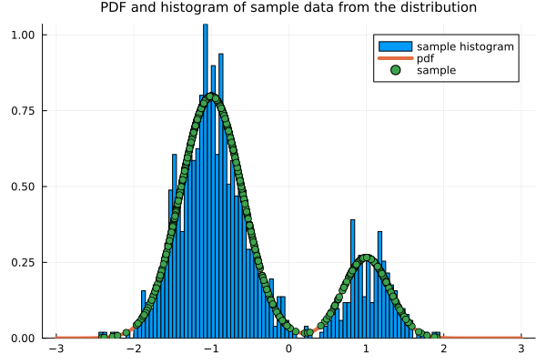
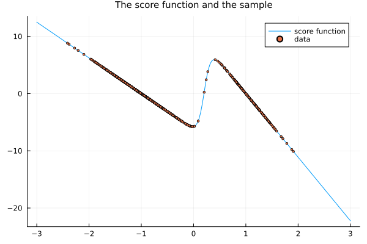
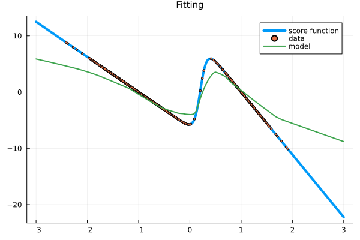
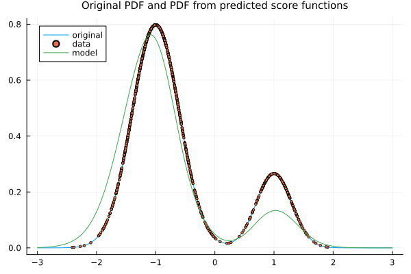
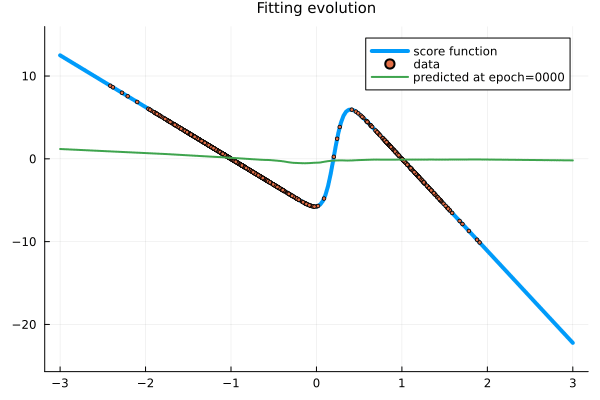
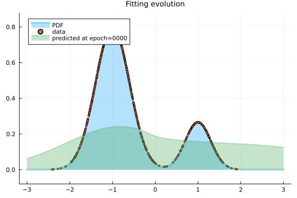
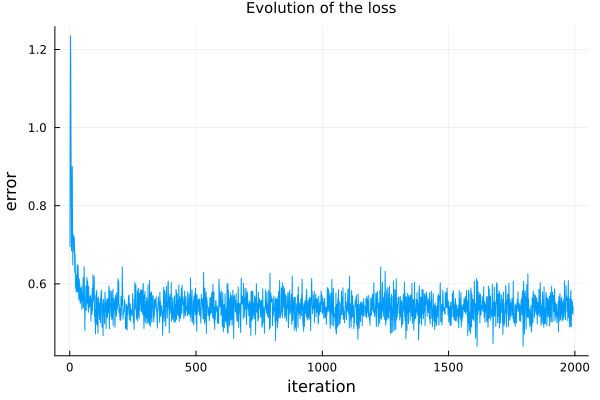
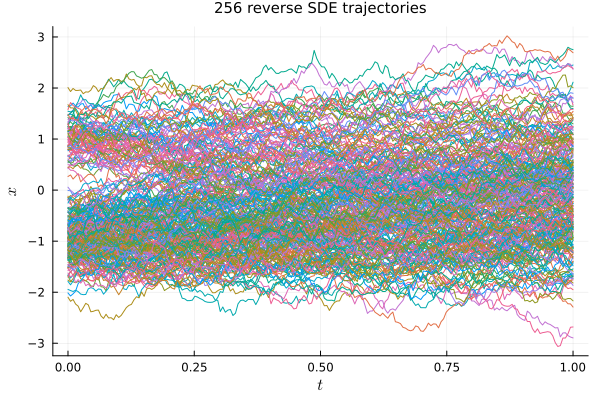
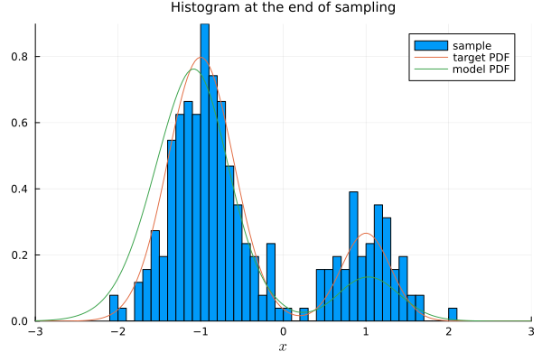

Score-based generative modeling through stochastic differential equations
Introduction
Aim
Review the work of Song, Sohl-Dickstein, Kingma, Kumar, Ermon, Poole (2020) that takes a complex data distribution, adds noise to it via a stochastic differential equation and generates new samples by modeling the reverse process. It is a generalization to the continuous case of the previous discrete processes of denoising diffusion probabilistic models and multiple denoising score matching.
Background
After Aapo Hyvärinen (2005) proposed the implicit score matching to model a distribution by fitting its score function, several works followed it, including the denosing score matching of Paul Vincent (2011), which perturbed the data so the analytic expression of the score function of the perturbation could be used. Then the denoising diffusion probabilistic models, of Sohl-Dickstein, Weiss, Maheswaranathan, Ganguli (2015) and Ho, Jain, and Abbeel (2020), and the multiple denoising score matching, of Song and Ermon (2019), went one step further by adding several levels of noise, facilitating the generation process. The work of Song, Sohl-Dickstein, Kingma, Kumar, Ermon, Poole (2020) extended that idea to the continuous case, adding noise via a stochastic differential equation.
Forward SDE
A initial unknown probability distribution with density $p_0=p_0(x),$ associated with a random variable $X_0,$ is embedded into the distribution of an SDE of the form
\[ \mathrm{d}X_t = f(t)X_t\;\mathrm{d}t + g(t)\;\mathrm{d}W_t,\]
with initial condition $X_0.$ The solution can be obtained with the help of the integrating factor $e^{-\int_0^t f(s)\;\mathrm{d}s}$ associated with the deterministic part of the equation. In this case,
\[ \begin{aligned} \mathrm{d}\left(X_te^{-\int_0^t f(s)\;\mathrm{d}s}\right) & = \mathrm{d}X_t e^{-\int_0^t f(s)\;\mathrm{d}s} - X_t f(t) e^{\int_0^t f(s)\;\mathrm{d}s} \;\mathrm{d}t \\ & = \left(f(t)X_t\;\mathrm{d}t + g(t)\;\mathrm{d}W_t\right)e^{-\int_0^t f(s)\;\mathrm{d}s} - X_t f(t) e^{-\int_0^t f(s)\;\mathrm{d}s} \;\mathrm{d}t \\ & = g(t)e^{-\int_0^t f(s)\;\mathrm{d}s}\;\mathrm{d}W_t. \end{aligned}\]
Integrating yields
\[ X_te^{-\int_0^t f(s)\;\mathrm{d}s} - X_0 = \int_0^t g(s)e^{-\int_0^s f(\tau)\;\mathrm{d}\tau}\;\mathrm{d}W_s.\]
Moving the exponential term to the right hand side yields the solution
\[ X_t = X_0 e^{\int_0^t f(s)\;\mathrm{d}s} + \int_0^t e^{\int_s^t f(\tau)\;\mathrm{d}\tau}g(s)\;\mathrm{d}W_s.\]
The mean value evolves according to
\[ \mathbb{E}[X_t] = \mathbb{E}[X_0] e^{\int_0^t f(s)\;\mathrm{d}s}.\]
Using the Itô isometry, the second moment evolves with
\[ \mathbb{E}[X_t^2] = \mathbb{E}[X_0^2]e^{2\int_0^t f(s)\;\mathrm{d}s} + \int_0^t e^{2\int_s^t f(\tau)\;\mathrm{d}\tau}g(s)^2\;\mathrm{d}s.\]
Hence, the variance is given by
\[ \operatorname{Var}(X_t) = \operatorname{Var}(X_0)e^{2\int_0^t f(s)\;\mathrm{d}s} + \int_0^t e^{2\int_s^t f(\tau)\;\mathrm{d}\tau}g(s)^2\;\mathrm{d}s.\]
Thus, the probability density function $p(t, x)$ can be obtained by conditioning it at each initial point, with
\[ p(t, x) = \int_{\mathbb{R}} p(t, x | 0, x_0) p_0(x_0)\;\mathrm{d}x_0,\]
and
\[ p(t, x | 0, x_0) = \mathcal{N}(x; \mu(t)x_0, \sigma(t)^2),\]
where
\[ \mu(t) = e^{\int_0^t f(s)\;\mathrm{d}s}\]
and
\[ \sigma(t)^2 = \int_0^t e^{2\int_s^t f(\tau)\;\mathrm{d}\tau}g(s)^2\;\mathrm{d}s.\]
The probability density function $p(t, x)$ can also be obtained with the help of the Fokker-Planck equation
\[ \frac{\partial p}{\partial t} + \nabla_x \cdot (f(t) p(t, x)) = \frac{1}{2}\Delta_x \left( g(t)^2 p(t, x) \right),\]
whose fundamental solutions are precisely $p(t, x | 0, x_0) = \mathcal{N}(x; \mu(t)x_0, \sigma(t)^2).$
For the Stein score, we have
\[ \nabla_x \log p(t, x | 0, x_0) = \nabla_x \left( - \frac{(x - \mu(t)x_0)^2}{2\sigma(t)^2} \right) = - \frac{x - \mu(t)x_0}{\sigma(t)^2}.\]
Examples
Variance-exploding SDE
For example, in the variance-exploding case (VE SDE), as discussed in Song, Sohl-Dickstein, Kingma, Kumar, Ermon, Poole (2020), as the continuous limit of the Multiple Denoising Score Matching, we have
\[ f(t) = 0, \quad g(t) = \sqrt{\frac{\mathrm{d}(\sigma(t)^2)}{\mathrm{d}t}},\]
so that
\[ \mu(t) = 1\]
and
\[ \sigma(t)^2 = \int_0^t \frac{\mathrm{d}(\sigma(s)^2)}{\mathrm{d}s}\;\mathrm{d}s = \sigma(t)^2 - \sigma(0)^2.\]
Thus,
\[ p(t, x | 0, x_0) = \mathcal{N}\left( x; x_0, \sigma(t)^2 - \sigma(0)^2\right).\]
The Stein score becomes
\[ \nabla_x \log p(t, x | 0, x_0) = \nabla_x \left( - \frac{(x - \mu(t)x_0)^2}{2\sigma(t)^2} \right) = - \frac{x - x_0}{\sigma(t)^2 - \sigma(0)^2}.\]
Variance-preserving SDE
In the variance-preserving case (VP SDE), as discussed in Song, Sohl-Dickstein, Kingma, Kumar, Ermon, Poole (2020), as the continuous limit of the Denoising Diffusion Probabilistic Model,
\[ f(t) = -\frac{1}{2}\beta(t), \quad g(t) = \sqrt{\beta(t)},\]
so that
\[ \mu(t) = e^{-\frac{1}{2}\int_0^t \beta(s)\;\mathrm{d}s}\]
and
\[ \sigma(t)^2 = \int_0^t e^{-\int_s^t \beta(\tau)\;\mathrm{d}\tau}\beta(s)\;\mathrm{d}s = \left. -e^{-\int_s^t \beta(\tau)\;\mathrm{d}\tau} \right|_{s=0}^{s=t} = 1 - e^{-\int_0^t \beta(\tau)\;\mathrm{d}\tau}.\]
Thus,
\[ p(t, x | 0, x_0) = \mathcal{N}\left( x; x_0 e^{-\frac{1}{2}\int_0^t \beta(s)\;\mathrm{d}s}, 1 - e^{-\int_0^t \beta(\tau)\;\mathrm{d}\tau}\right).\]
The Stein score becomes
\[ \nabla_x \log p(t, x | 0, x_0) = \nabla_x \left( - \frac{(x - \mu(t)x_0)^2}{2\sigma(t)^2} \right) = - \frac{x - x_0 e^{-\frac{1}{2}\int_0^t \beta(s)\;\mathrm{d}s}}{1 - e^{-\int_0^t \beta(\tau)\;\mathrm{d}\tau}}.\]
Sub-variance-preserving SDE
In the sub-variance-preserving case (VP SDE), proposed in Song, Sohl-Dickstein, Kingma, Kumar, Ermon, Poole (2020) as an alternative to the previous ones,
\[ f(t) = -\frac{1}{2}\beta(t), \quad g(t) = \sqrt{\beta(t)(1 - e^{-2\int_0^t \beta(s)\;\mathrm{d}s})},\]
so that
\[ \mu(t) = e^{-\frac{1}{2}\int_0^t \beta(s)\;\mathrm{d}s}\]
and
\[ \begin{align*} \sigma(t)^2 & = \int_0^t e^{-\int_s^t \beta(\tau)\;\mathrm{d}\tau}\beta(s)(1 - e^{-2\int_0^s \beta(\tau)\;\mathrm{d}\tau})\;\mathrm{d}s \\ & = \int_0^t e^{-\int_s^t \beta(\tau)\;\mathrm{d}\tau}\beta(s)\;\mathrm{d}s - \int_0^t e^{-\int_s^t \beta(\tau)\;\mathrm{d}\tau}e^{-2\int_0^s \beta(\tau)\;\mathrm{d}\tau}\beta(s)\;\mathrm{d}s \\ & = \int_0^t e^{-\int_s^t \beta(\tau)\;\mathrm{d}\tau}\beta(s)\;\mathrm{d}s - \int_0^t e^{-\int_0^t \beta(\tau)\;\mathrm{d}\tau}e^{-\int_0^s \beta(\tau)\;\mathrm{d}\tau}\beta(s)\;\mathrm{d}s \\ & = 1 - e^{-\int_0^t \beta(\tau)\;\mathrm{d}\tau} - e^{-\int_0^t \beta(\tau)\;\mathrm{d}\tau} \int_0^t e^{-\int_0^s \beta(\tau)\;\mathrm{d}\tau}\beta(s)\;\mathrm{d}s \\ & = 1 - e^{-\int_0^t \beta(\tau)\;\mathrm{d}\tau} + e^{-\int_0^t \beta(\tau)\;\mathrm{d}\tau} \left.e^{-\int_0^s \beta(\tau)\;\mathrm{d}\tau}\right|_{s=0}^t \\ & = 1 - e^{-\int_0^t \beta(\tau)\;\mathrm{d}\tau} + e^{-\int_0^t \beta(\tau)\;\mathrm{d}\tau} \left(e^{-\int_0^t \beta(\tau)\;\mathrm{d}\tau} - 1\right) \\ & = 1 - 2e^{-\int_0^t \beta(\tau)\;\mathrm{d}\tau} + e^{-2\int_0^t \beta(\tau)\;\mathrm{d}\tau} \\ & = \left(1 - e^{-\int_0^t \beta(\tau)\;\mathrm{d}\tau}\right)^2. \end{align*}\]
Thus,
\[ p(t, x | 0, x_0) = \mathcal{N}\left( x; x_0 e^{-\frac{1}{2}\int_0^t \beta(s)\;\mathrm{d}s}, \left(1 - e^{-\int_0^t \beta(\tau)\;\mathrm{d}\tau}\right)^2\right).\]
The Stein score becomes
\[ \nabla_x \log p(t, x | 0, x_0) = \nabla_x \left( - \frac{(x - \mu(t)x_0)^2}{2\sigma(t)^2} \right) = - \frac{x - x_0 e^{-\frac{1}{2}\int_0^t \beta(s)\;\mathrm{d}s}}{\left(1 - e^{-\int_0^t \beta(\tau)\;\mathrm{d}\tau}\right)^2}.\]
Loss function
The loss function for training is a continuous version of the loss for the multiple denoising score-matching. In that case, we had
\[ J_{\textrm{SMLD}}(\boldsymbol{\theta}) = \frac{1}{2L}\sum_{i=1}^L \lambda(\sigma_i) \mathbb{E}_{p(\mathbf{x})p_{\sigma_i}(\tilde{\mathbf{x}}|\mathbf{x})}\left[ \left\| s_{\boldsymbol{\theta}}(\tilde{\mathbf{x}}, \sigma_i) - \frac{\mathbf{x} - \tilde{\mathbf{x}}}{\sigma_i^2} \right\|^2 \right],\]
where $\lambda = \lambda(\sigma_i)$ is a weighting factor. When too many levels are considered, one takes a stochastic approach and approximate the loss $J_{\textrm{SMLD}}(\boldsymbol{\theta})$ by
\[ J_{\textrm{SMLD}}^*(\boldsymbol{\theta}) = \frac{1}{2}\lambda(\sigma_i) \mathbb{E}_{p(\mathbf{x})p_{\sigma_i}(\tilde{\mathbf{x}}|\mathbf{x})}\left[ \left\| s_{\boldsymbol{\theta}}(\tilde{\mathbf{x}}, \sigma_i) - \frac{\mathbf{x} - \tilde{\mathbf{x}}}{\sigma_i^2} \right\|^2 \right],\]
with
\[ \sigma_i \sim \operatorname{Uniform}[\{1, 2, \ldots, L\}].\]
The continuous version becomes
\[ J_{\textrm{SDE}}^*(\boldsymbol{\theta}) = \frac{1}{2}\lambda(t) \mathbb{E}_{p_0(\mathbf{x}_0)p(t, \tilde{\mathbf{x}}|0, \mathbf{x}_0)}\left[ \left\| s_{\boldsymbol{\theta}}(t, \tilde{\mathbf{x}}) - \boldsymbol{\nabla}_{\tilde{\mathbf{x}}} \log p(t, \tilde{\mathbf{x}}|0, \mathbf{x}_0) \right\|^2 \right],\]
with
\[ t \sim \operatorname{Uniform}[0, T].\]
In practice, the empirical distribution is considered for $p_0(\mathbf{x}_0),$ and a stochastic approach is taken by sampling a single $\tilde{\mathbf{x}}_n \sim p(t_n, \tilde{\mathbf{x}}|0, \mathbf{x}_n),$ besides $t_n \sim \operatorname{Uniform}([0, T]).$ Thus, the loss takes the form
\[ {\tilde J}_{\textrm{SDE}}^*(\boldsymbol{\theta}) = \frac{1}{2N}\sum_{n=1}^N \lambda(t_n) \left[ \left\| s_{\boldsymbol{\theta}}(t_n, \tilde{\mathbf{x}}_n) - \boldsymbol{\nabla}_{\tilde{\mathbf{x}}} \log p(t_n, \tilde{\mathbf{x}}_n|0, \mathbf{x}_n) \right\|^2 \right],\]
with
\[ \mathbf{x}_n \sim p_0, \quad t_n \sim \operatorname{Uniform}[0, T], \quad \mathbf{x}_n \sim p(t_n, x | 0, \mathbf{x}_n).\]
The explicit form for the distribution $p(t_n, x | 0, \mathbf{x}_n)$ and its score $\boldsymbol{\nabla}_{\tilde{\mathbf{x}}} \log p(t_n, \tilde{\mathbf{x}}_n|0, \mathbf{x}_n)$ depends on the choice of the SDE.
Numerical example
We illustrate, numerically, the use of the score-based SDE method to model a synthetic univariate Gaussian mixture distribution.
Julia language setup
We use the Julia programming language for the numerical simulations, with suitable packages.
Packages
using StatsPlots
using Random
using Distributions
using Lux # artificial neural networks explicitly parametrized
using Optimisers
using Zygote # automatic differentiation
using MarkdownReproducibility
We set the random seed for reproducibility purposes.
rng = Xoshiro(12345)Data
We build the usual target model and draw samples from it.
Visualizing the sample data drawn from the distribution and the PDF.
Visualizing the score function.
Parameters
Here we set some parameters for the model and prepare any necessary data.
trange = 0.0:0.01:1.00.0:0.01:1.0Variance exploding
We start visualizing the score function in the variance exploding case, with $\sigma(t) = \sqrt{t}$, so that $g(t) = \sqrt{\mathrm{d}(\sigma(t)^2)/\mathrm{d}t} = 1$, besides $f(t) = 0$ and $\mu(t) = 1.$
f_ve(t) = 0.0
g_ve(t) = 1.0
mu_ve(t) = 1.0
sigma_ve(t) = sqrt(t)
prob_kernel_ve(t, x0) = Normal( x0, sigma_ve(t) )
p_kernel_ve(t, x, x0) = pdf(prob_kernel_ve(t, x0), x)
score_kernel_ve(t, x, x0) = gradlogpdf(prob_kernel_ve(t, x0), x)score_kernel_ve (generic function with 1 method)surface(trange, xrange, (t, x) -> log(sum(x0 -> pdf(prob_kernel_ve(t, x0), x) * pdf(target_prob, x0), xrange)))heatmap(trange, xrange, (t, x) -> log(sum(x0 -> pdf(prob_kernel_ve(t, x0), x) * pdf(target_prob, x0), xrange)))Variance preserving
We also visualize the variance preserving case.
beta_min = 0.1
beta_max = 20.0
f_vp(t; βₘᵢₙ=beta_min, βₘₐₓ=beta_max) = ( βₘᵢₙ + t * ( βₘₐₓ - βₘᵢₙ ) ) / 2
g_vp(t; βₘᵢₙ=beta_min, βₘₐₓ=beta_max) = √( βₘᵢₙ + t * ( βₘₐₓ - βₘᵢₙ ) )
prob_kernel_vp(t, x0; βₘᵢₙ=beta_min, βₘₐₓ=beta_max) = Normal( x0 * exp( - t^4 * ( βₘₐₓ - βₘᵢₙ ) / 4 - t * βₘᵢₙ / 2 ), 1 - exp( - t^4 * ( βₘₐₓ - βₘᵢₙ ) / 2 - t * βₘᵢₙ ))
p_kernel_vp(t, x, x0) = pdf(prob_kernel_vp(t, x0), x)
score_kernel_vp(t, x, x0) = gradlogpdf(prob_kernel_vp(t, x0), x)score_kernel_vp (generic function with 1 method)surface(trange, xrange, (t, x) -> log(sum(x0 -> pdf(prob_kernel_vp(t, x0), x) * pdf(target_prob, x0), xrange)))heatmap(trange, xrange, (t, x) -> log(sum(x0 -> pdf(prob_kernel_vp(t, x0), x) * pdf(target_prob, x0), xrange)))Preparation
For the implementation, we consider the variance-exploding (VE) case, with $\sigma(t) = \sqrt{t},$ so that
\[ f(t) = 0, \quad g(t) = \sqrt{\frac{\mathrm{d}(\sigma(t)^2)}{\mathrm{d}t}} = 1,\]
with
\[ \mu(t) = 1,\]
\[ \sigma(t)^2 = \int_0^t \frac{\mathrm{d}(\sigma(s)^2)}{\mathrm{d}s}\;\mathrm{d}s = \sigma(t)^2 - \sigma(0)^2 = t^2.\]
and
\[ p(t, x | 0, x_0) = \mathcal{N}\left( x; x_0, t^2\right).\]
The score conditioned on a initial condition reads
\[ \nabla_x p(t, x | 0, x_0) = - \frac{x - x_0}{t^2}.\]
T = 1.0
sigma(t) = sqrt(t)
lambda(t) = 1lambda (generic function with 1 method)data = copy(sample_points)1×1024 Matrix{Float64}:
0.790923 -1.06286 -0.835882 -0.727073 … -1.09804 -0.943597 -1.20461The neural network model
The neural network we consider is a simple feed-forward neural network made of a single hidden layer, obtained as a chain of a couple of dense layers. This is implemented with the LuxDL/Lux.jl package.
We need a little bigger neural network to capture the time-dependent score.
model = Chain(Dense(2 => 64, relu), Dense(64 => 64, relu), Dense(64 => 1))Chain(
layer_1 = Dense(2 => 64, relu), # 192 parameters
layer_2 = Dense(64 => 64, relu), # 4_160 parameters
layer_3 = Dense(64 => 1), # 65 parameters
) # Total: 4_417 parameters,
# plus 0 states.The LuxDL/Lux.jl package uses explicit parameters, that are initialized (or obtained) with the Lux.setup function, giving us the parameters and the state of the model.
ps, st = Lux.setup(rng, model) # initialize and get the parameters and states of the model((layer_1 = (weight = Float32[0.96560603 -1.3963945; -0.864941 1.1274849; … ; 0.7158331 1.1567085; 2.3663533 1.2393725], bias = Float32[0.18311752, 0.4076413, 0.6408686, -0.013799805, 0.65769726, 0.27097112, -0.11596697, 0.48491788, -0.42007604, 0.118874006 … 0.1418748, -0.5943321, -0.60492563, 0.5363705, 0.31154066, -0.022509282, 0.3484151, 0.14444627, 0.36740452, -0.6803152]), layer_2 = (weight = Float32[0.18131804 0.17503837 … -0.35680324 0.041331753; 0.26106972 -0.1193517 … -0.07006456 -0.4137496; … ; 0.084181055 -0.003223357 … 0.39623302 0.041700777; 0.43044955 0.07226901 … -0.18764506 0.029861515], bias = Float32[-0.04187855, 0.028995737, 0.08326948, 0.0965531, -0.028102472, 0.0109861195, -0.02887094, 0.01814112, -0.063902855, 0.0882992 … -0.09638426, 0.055712968, -0.059000477, 0.018446326, -0.06455566, -0.030632198, 0.05346352, 0.054515496, 0.10029842, 0.11136329]), layer_3 = (weight = Float32[-0.10921383 0.024906904 … -0.14274599 0.16894127], bias = Float32[0.033518136])), (layer_1 = NamedTuple(), layer_2 = NamedTuple(), layer_3 = NamedTuple()))Loss function
function loss_function_sde(model, ps, st, data)
sample_points = data
ts = reshape(0.001 .+ (T - 0.001) * rand(rng, size(sample_points, 2)), 1, :)
ws = randn(rng, size(sample_points))
diffused = sigma.(ts) .* ws
noisy_sample_points = sample_points .+ diffused
## scores = ( sample_points .- noisy_sample_points ) ./ sigma.(ts) .^ 2
model_input = [noisy_sample_points; ts]
y_score_pred, st = Lux.apply(model, model_input, ps, st)
## loss = mean(abs2, (y_score_pred .- scores)) / 2
loss = mean(abs2, sigma.(ts) .* y_score_pred .+ ws)
return loss, st, ()
endloss_function_sde (generic function with 1 method)Optimization setup
Optimization method
We use the Adam optimiser.
opt = Adam(0.01)
tstate_org = Lux.Training.TrainState(model, ps, st, opt)TrainState(
Chain(
layer_1 = Dense(2 => 64, relu), # 192 parameters
layer_2 = Dense(64 => 64, relu), # 4_160 parameters
layer_3 = Dense(64 => 1), # 65 parameters
),
number of parameters: 4417
number of states: 0
optimizer: Optimisers.Adam(eta=0.01, beta=(0.9, 0.999), epsilon=1.0e-8)
step: 0
)
Automatic differentiation in the optimization
As mentioned, we setup differentiation in LuxDL/Lux.jl with the FluxML/Zygote.jl library.
vjp_rule = Lux.Training.AutoZygote()ADTypes.AutoZygote()Processor
We use the CPU instead of the GPU.
dev_cpu = cpu_device()
## dev_gpu = gpu_device()(::MLDataDevices.CPUDevice{Missing}) (generic function with 1 method)Check differentiation
Check if Zygote via Lux is working fine to differentiate the loss functions for training.
Lux.Training.compute_gradients(vjp_rule, loss_function_sde, data, tstate_org)((layer_1 = (weight = Float32[-0.017275985 -0.010511151; -0.024644597 -0.055773813; … ; 0.025703369 0.07063399; 0.0018049566 0.0059922854], bias = Float32[-0.011828022, -0.060928863, 0.0017569414, -0.032958068, 0.013177474, 0.0072025643, 0.014696035, 0.0073828674, 0.067497775, 0.015276164 … -0.02484256, -0.051964823, 0.035071395, -0.0060353596, 0.06495791, -0.017588168, -0.01006664, 0.0097136805, 0.07355498, 0.005570495]), layer_2 = (weight = Float32[0.0 0.0 … 0.0 0.0; 0.0 0.0 … 0.0 0.0; … ; -0.006254217 0.05226499 … 0.05239732 0.031527378; -1.6643342f-5 -0.026833314 … -0.028476384 -0.011109584], bias = Float32[0.0, 0.0, 0.0, 0.031240815, 0.017102854, 0.02231233, 0.0, -0.01041497, 0.010002759, -0.004604382 … -0.009062303, 0.0018641208, 0.01626718, 0.015884236, -0.023081683, 0.0, -0.04700211, 0.0, 0.035679795, -0.019427847]), layer_3 = (weight = Float32[0.0 0.0 … -0.24771877 -0.03376081], bias = Float32[-0.24995306])), 0.7814519262720458, (), Lux.Training.TrainState{Nothing, Nothing, Lux.Chain{@NamedTuple{layer_1::Lux.Dense{typeof(NNlib.relu), Int64, Int64, Nothing, Nothing, Static.True}, layer_2::Lux.Dense{typeof(NNlib.relu), Int64, Int64, Nothing, Nothing, Static.True}, layer_3::Lux.Dense{typeof(identity), Int64, Int64, Nothing, Nothing, Static.True}}, Nothing}, @NamedTuple{layer_1::@NamedTuple{weight::Matrix{Float32}, bias::Vector{Float32}}, layer_2::@NamedTuple{weight::Matrix{Float32}, bias::Vector{Float32}}, layer_3::@NamedTuple{weight::Matrix{Float32}, bias::Vector{Float32}}}, @NamedTuple{layer_1::@NamedTuple{}, layer_2::@NamedTuple{}, layer_3::@NamedTuple{}}, Optimisers.Adam{Float64, Tuple{Float64, Float64}, Float64}, @NamedTuple{layer_1::@NamedTuple{weight::Optimisers.Leaf{Optimisers.Adam{Float64, Tuple{Float64, Float64}, Float64}, Tuple{Matrix{Float32}, Matrix{Float32}, Tuple{Float32, Float32}}}, bias::Optimisers.Leaf{Optimisers.Adam{Float64, Tuple{Float64, Float64}, Float64}, Tuple{Vector{Float32}, Vector{Float32}, Tuple{Float32, Float32}}}}, layer_2::@NamedTuple{weight::Optimisers.Leaf{Optimisers.Adam{Float64, Tuple{Float64, Float64}, Float64}, Tuple{Matrix{Float32}, Matrix{Float32}, Tuple{Float32, Float32}}}, bias::Optimisers.Leaf{Optimisers.Adam{Float64, Tuple{Float64, Float64}, Float64}, Tuple{Vector{Float32}, Vector{Float32}, Tuple{Float32, Float32}}}}, layer_3::@NamedTuple{weight::Optimisers.Leaf{Optimisers.Adam{Float64, Tuple{Float64, Float64}, Float64}, Tuple{Matrix{Float32}, Matrix{Float32}, Tuple{Float32, Float32}}}, bias::Optimisers.Leaf{Optimisers.Adam{Float64, Tuple{Float64, Float64}, Float64}, Tuple{Vector{Float32}, Vector{Float32}, Tuple{Float32, Float32}}}}}}(nothing, nothing, Lux.Chain{@NamedTuple{layer_1::Lux.Dense{typeof(NNlib.relu), Int64, Int64, Nothing, Nothing, Static.True}, layer_2::Lux.Dense{typeof(NNlib.relu), Int64, Int64, Nothing, Nothing, Static.True}, layer_3::Lux.Dense{typeof(identity), Int64, Int64, Nothing, Nothing, Static.True}}, Nothing}((layer_1 = Dense(2 => 64, relu), layer_2 = Dense(64 => 64, relu), layer_3 = Dense(64 => 1)), nothing), (layer_1 = (weight = Float32[0.96560603 -1.3963945; -0.864941 1.1274849; … ; 0.7158331 1.1567085; 2.3663533 1.2393725], bias = Float32[0.18311752, 0.4076413, 0.6408686, -0.013799805, 0.65769726, 0.27097112, -0.11596697, 0.48491788, -0.42007604, 0.118874006 … 0.1418748, -0.5943321, -0.60492563, 0.5363705, 0.31154066, -0.022509282, 0.3484151, 0.14444627, 0.36740452, -0.6803152]), layer_2 = (weight = Float32[0.18131804 0.17503837 … -0.35680324 0.041331753; 0.26106972 -0.1193517 … -0.07006456 -0.4137496; … ; 0.084181055 -0.003223357 … 0.39623302 0.041700777; 0.43044955 0.07226901 … -0.18764506 0.029861515], bias = Float32[-0.04187855, 0.028995737, 0.08326948, 0.0965531, -0.028102472, 0.0109861195, -0.02887094, 0.01814112, -0.063902855, 0.0882992 … -0.09638426, 0.055712968, -0.059000477, 0.018446326, -0.06455566, -0.030632198, 0.05346352, 0.054515496, 0.10029842, 0.11136329]), layer_3 = (weight = Float32[-0.10921383 0.024906904 … -0.14274599 0.16894127], bias = Float32[0.033518136])), (layer_1 = NamedTuple(), layer_2 = NamedTuple(), layer_3 = NamedTuple()), Optimisers.Adam(eta=0.01, beta=(0.9, 0.999), epsilon=1.0e-8), (layer_1 = (weight = Leaf(Adam(eta=0.01, beta=(0.9, 0.999), epsilon=1.0e-8), (Float32[0.0 0.0; 0.0 0.0; … ; 0.0 0.0; 0.0 0.0], Float32[0.0 0.0; 0.0 0.0; … ; 0.0 0.0; 0.0 0.0], (0.9, 0.999))), bias = Leaf(Adam(eta=0.01, beta=(0.9, 0.999), epsilon=1.0e-8), (Float32[0.0, 0.0, 0.0, 0.0, 0.0, 0.0, 0.0, 0.0, 0.0, 0.0 … 0.0, 0.0, 0.0, 0.0, 0.0, 0.0, 0.0, 0.0, 0.0, 0.0], Float32[0.0, 0.0, 0.0, 0.0, 0.0, 0.0, 0.0, 0.0, 0.0, 0.0 … 0.0, 0.0, 0.0, 0.0, 0.0, 0.0, 0.0, 0.0, 0.0, 0.0], (0.9, 0.999)))), layer_2 = (weight = Leaf(Adam(eta=0.01, beta=(0.9, 0.999), epsilon=1.0e-8), (Float32[0.0 0.0 … 0.0 0.0; 0.0 0.0 … 0.0 0.0; … ; 0.0 0.0 … 0.0 0.0; 0.0 0.0 … 0.0 0.0], Float32[0.0 0.0 … 0.0 0.0; 0.0 0.0 … 0.0 0.0; … ; 0.0 0.0 … 0.0 0.0; 0.0 0.0 … 0.0 0.0], (0.9, 0.999))), bias = Leaf(Adam(eta=0.01, beta=(0.9, 0.999), epsilon=1.0e-8), (Float32[0.0, 0.0, 0.0, 0.0, 0.0, 0.0, 0.0, 0.0, 0.0, 0.0 … 0.0, 0.0, 0.0, 0.0, 0.0, 0.0, 0.0, 0.0, 0.0, 0.0], Float32[0.0, 0.0, 0.0, 0.0, 0.0, 0.0, 0.0, 0.0, 0.0, 0.0 … 0.0, 0.0, 0.0, 0.0, 0.0, 0.0, 0.0, 0.0, 0.0, 0.0], (0.9, 0.999)))), layer_3 = (weight = Leaf(Adam(eta=0.01, beta=(0.9, 0.999), epsilon=1.0e-8), (Float32[0.0 0.0 … 0.0 0.0], Float32[0.0 0.0 … 0.0 0.0], (0.9, 0.999))), bias = Leaf(Adam(eta=0.01, beta=(0.9, 0.999), epsilon=1.0e-8), (Float32[0.0], Float32[0.0], (0.9, 0.999))))), 0))Training loop
Here is the typical main training loop suggest in the LuxDL/Lux.jl tutorials, but sligthly modified to save the history of losses per iteration.
function train(tstate, vjp, data, loss_function, epochs, numshowepochs=20, numsavestates=0)
losses = zeros(epochs)
tstates = [(0, tstate)]
for epoch in 1:epochs
grads, loss, stats, tstate = Lux.Training.compute_gradients(vjp,
loss_function, data, tstate)
if ( epochs ≥ numshowepochs > 0 ) && rem(epoch, div(epochs, numshowepochs)) == 0
println("Epoch: $(epoch) || Loss: $(loss)")
end
if ( epochs ≥ numsavestates > 0 ) && rem(epoch, div(epochs, numsavestates)) == 0
push!(tstates, (epoch, tstate))
end
losses[epoch] = loss
tstate = Lux.Training.apply_gradients(tstate, grads)
end
return tstate, losses, tstates
endtrain (generic function with 3 methods)Training
Now we train the model with the objective function ${\tilde J}_{\mathrm{ESM{\tilde p}_\sigma{\tilde p}_0}}({\boldsymbol{\theta}})$.
@time tstate, losses, tstates = train(tstate_org, vjp_rule, data, loss_function_sde, 2000,80, 80)(Lux.Training.TrainState{Nothing, Nothing, Lux.Chain{@NamedTuple{layer_1::Lux.Dense{typeof(NNlib.relu), Int64, Int64, Nothing, Nothing, Static.True}, layer_2::Lux.Dense{typeof(NNlib.relu), Int64, Int64, Nothing, Nothing, Static.True}, layer_3::Lux.Dense{typeof(identity), Int64, Int64, Nothing, Nothing, Static.True}}, Nothing}, @NamedTuple{layer_1::@NamedTuple{weight::Matrix{Float32}, bias::Vector{Float32}}, layer_2::@NamedTuple{weight::Matrix{Float32}, bias::Vector{Float32}}, layer_3::@NamedTuple{weight::Matrix{Float32}, bias::Vector{Float32}}}, @NamedTuple{layer_1::@NamedTuple{}, layer_2::@NamedTuple{}, layer_3::@NamedTuple{}}, Optimisers.Adam{Float64, Tuple{Float64, Float64}, Float64}, @NamedTuple{layer_1::@NamedTuple{weight::Optimisers.Leaf{Optimisers.Adam{Float64, Tuple{Float64, Float64}, Float64}, Tuple{Matrix{Float32}, Matrix{Float32}, Tuple{Float32, Float32}}}, bias::Optimisers.Leaf{Optimisers.Adam{Float64, Tuple{Float64, Float64}, Float64}, Tuple{Vector{Float32}, Vector{Float32}, Tuple{Float32, Float32}}}}, layer_2::@NamedTuple{weight::Optimisers.Leaf{Optimisers.Adam{Float64, Tuple{Float64, Float64}, Float64}, Tuple{Matrix{Float32}, Matrix{Float32}, Tuple{Float32, Float32}}}, bias::Optimisers.Leaf{Optimisers.Adam{Float64, Tuple{Float64, Float64}, Float64}, Tuple{Vector{Float32}, Vector{Float32}, Tuple{Float32, Float32}}}}, layer_3::@NamedTuple{weight::Optimisers.Leaf{Optimisers.Adam{Float64, Tuple{Float64, Float64}, Float64}, Tuple{Matrix{Float32}, Matrix{Float32}, Tuple{Float32, Float32}}}, bias::Optimisers.Leaf{Optimisers.Adam{Float64, Tuple{Float64, Float64}, Float64}, Tuple{Vector{Float32}, Vector{Float32}, Tuple{Float32, Float32}}}}}}(nothing, nothing, Lux.Chain{@NamedTuple{layer_1::Lux.Dense{typeof(NNlib.relu), Int64, Int64, Nothing, Nothing, Static.True}, layer_2::Lux.Dense{typeof(NNlib.relu), Int64, Int64, Nothing, Nothing, Static.True}, layer_3::Lux.Dense{typeof(identity), Int64, Int64, Nothing, Nothing, Static.True}}, Nothing}((layer_1 = Dense(2 => 64, relu), layer_2 = Dense(64 => 64, relu), layer_3 = Dense(64 => 1)), nothing), (layer_1 = (weight = Float32[0.7006377 -1.7851866; -0.8466579 1.078765; … ; 0.5640042 1.0027434; 2.190274 0.94853824], bias = Float32[0.1419919, 0.3656803, 0.6611761, -0.087108485, 0.68555546, -0.35237092, -0.60563356, 0.94293183, -0.44078496, -0.13713163 … -0.041787382, -0.5738473, -0.7918487, 0.50912434, 0.2234042, -0.1645507, 0.2736459, 0.083127975, 0.36102247, -1.1003088]), layer_2 = (weight = Float32[0.12311079 0.11511573 … -0.41652396 0.041331753; 0.4783357 -0.6958665 … -0.15150766 -1.0276518; … ; -0.11563314 0.0028354828 … 0.40504456 -0.03567039; 0.48436934 0.025943374 … -0.23309997 -0.00020786801], bias = Float32[-0.10185611, 0.2771526, 0.08326948, 0.02162698, -0.05383249, 0.015768353, -0.02887094, -0.023027703, -0.13757662, 0.06611489 … -0.13896655, -0.009920528, -0.1856358, -0.017328866, 0.14928761, -0.030632198, 0.018314235, 0.054515496, 0.10326529, 0.05408551]), layer_3 = (weight = Float32[-0.049393564 0.6540548 … -0.059513755 0.10908451], bias = Float32[0.00686771])), (layer_1 = NamedTuple(), layer_2 = NamedTuple(), layer_3 = NamedTuple()), Optimisers.Adam(eta=0.01, beta=(0.9, 0.999), epsilon=1.0e-8), (layer_1 = (weight = Leaf(Adam(eta=0.01, beta=(0.9, 0.999), epsilon=1.0e-8), (Float32[-0.000352674 -7.786f-5; -0.000430996 0.000318908; … ; 0.000360708 -0.000498032; -5.61737f-5 -4.74986f-5], Float32[5.08042f-6 7.92871f-7; 0.000144077 5.3112f-5; … ; 2.98269f-5 3.59081f-5; 5.31224f-6 5.28272f-7], (6.0f-45, 0.135068))), bias = Leaf(Adam(eta=0.01, beta=(0.9, 0.999), epsilon=1.0e-8), (Float32[-0.00046815, 0.000396907, 2.70186f-5, -0.000320691, 0.000141143, -5.35761f-5, -0.000169294, 0.000991032, -0.000839562, 0.00040723 … 0.000379951, 0.000571347, -0.000594535, 0.000741555, -0.000476173, 3.24666f-5, -8.3292f-5, -3.1395f-5, -0.000586293, -5.39981f-5], Float32[7.3035f-6, 0.000108761, 1.85337f-5, 1.58782f-5, 7.23974f-5, 2.73236f-6, 7.75433f-6, 0.00011, 0.000255649, 8.48907f-6 … 1.07794f-5, 0.000366406, 5.17886f-5, 6.60019f-5, 4.61195f-5, 1.98572f-5, 1.41781f-5, 8.44145f-5, 6.36011f-5, 4.83552f-6], (6.0f-45, 0.135068)))), layer_2 = (weight = Leaf(Adam(eta=0.01, beta=(0.9, 0.999), epsilon=1.0e-8), (Float32[6.0f-45 6.0f-45 … 6.0f-45 0.0; -2.14784f-5 -1.34351f-5 … -5.407f-5 2.72485f-5; … ; -5.55382f-6 -0.000489061 … -0.000373773 -8.19396f-5; -6.0f-45 6.0f-45 … 6.0f-45 6.0f-45], Float32[9.41854f-17 1.98103f-14 … 3.07844f-15 0.0; 1.58374f-7 1.69186f-8 … 6.30364f-7 2.68509f-7; … ; 7.92452f-8 0.000274476 … 1.04369f-5 3.00318f-6; 1.21768f-11 2.93014f-6 … 1.68875f-6 1.14003f-7], (6.0f-45, 0.135068))), bias = Leaf(Adam(eta=0.01, beta=(0.9, 0.999), epsilon=1.0e-8), (Float32[6.0f-45, -9.4526f-5, 0.0, -0.00012951, -0.000220703, -0.000232016, 0.0, 6.0f-45, -2.34875f-5, 3.17563f-6 … 6.0f-45, 6.0f-45, -6.43422f-5, -2.26632f-5, 0.00104619, 0.0, 0.000334044, 0.0, -0.000388707, 6.0f-45], Float32[5.80686f-14, 7.94272f-7, 0.0, 8.47578f-6, 1.39877f-5, 2.03677f-5, 0.0, 8.07206f-6, 6.93499f-7, 2.09472f-6 … 1.22346f-5, 1.2695f-7, 3.11463f-6, 8.23655f-6, 1.54789f-5, 0.0, 0.000112728, 0.0, 5.09603f-5, 1.44669f-6], (6.0f-45, 0.135068)))), layer_3 = (weight = Leaf(Adam(eta=0.01, beta=(0.9, 0.999), epsilon=1.0e-8), (Float32[-6.0f-45 -0.000136212 … 0.00439273 6.0f-45], Float32[6.2648f-15 1.29417f-6 … 0.0154731 5.57374f-6], (6.0f-45, 0.135068))), bias = Leaf(Adam(eta=0.01, beta=(0.9, 0.999), epsilon=1.0e-8), (Float32[0.00860937], Float32[0.00444512], (6.0f-45, 0.135068))))), 2000), [0.8093904260312036, 4.821426102198947, 0.9013738077191955, 1.7976587139820184, 2.782252381743502, 1.5579457501875367, 0.8443466813768792, 0.6954447384198809, 1.0341504711609282, 1.2348369584320722 … 0.5831544703869522, 0.5245678923729578, 0.49048498238600735, 0.5597417389586645, 0.526729451351227, 0.5335663890074827, 0.5545858256272282, 0.5381219324627812, 0.5208089048980225, 0.5402121884399843], Tuple{Int64, Lux.Training.TrainState{Nothing, Nothing, Lux.Chain{@NamedTuple{layer_1::Lux.Dense{typeof(NNlib.relu), Int64, Int64, Nothing, Nothing, Static.True}, layer_2::Lux.Dense{typeof(NNlib.relu), Int64, Int64, Nothing, Nothing, Static.True}, layer_3::Lux.Dense{typeof(identity), Int64, Int64, Nothing, Nothing, Static.True}}, Nothing}, @NamedTuple{layer_1::@NamedTuple{weight::Matrix{Float32}, bias::Vector{Float32}}, layer_2::@NamedTuple{weight::Matrix{Float32}, bias::Vector{Float32}}, layer_3::@NamedTuple{weight::Matrix{Float32}, bias::Vector{Float32}}}, @NamedTuple{layer_1::@NamedTuple{}, layer_2::@NamedTuple{}, layer_3::@NamedTuple{}}, Optimisers.Adam{Float64, Tuple{Float64, Float64}, Float64}, @NamedTuple{layer_1::@NamedTuple{weight::Optimisers.Leaf{Optimisers.Adam{Float64, Tuple{Float64, Float64}, Float64}, Tuple{Matrix{Float32}, Matrix{Float32}, Tuple{Float32, Float32}}}, bias::Optimisers.Leaf{Optimisers.Adam{Float64, Tuple{Float64, Float64}, Float64}, Tuple{Vector{Float32}, Vector{Float32}, Tuple{Float32, Float32}}}}, layer_2::@NamedTuple{weight::Optimisers.Leaf{Optimisers.Adam{Float64, Tuple{Float64, Float64}, Float64}, Tuple{Matrix{Float32}, Matrix{Float32}, Tuple{Float32, Float32}}}, bias::Optimisers.Leaf{Optimisers.Adam{Float64, Tuple{Float64, Float64}, Float64}, Tuple{Vector{Float32}, Vector{Float32}, Tuple{Float32, Float32}}}}, layer_3::@NamedTuple{weight::Optimisers.Leaf{Optimisers.Adam{Float64, Tuple{Float64, Float64}, Float64}, Tuple{Matrix{Float32}, Matrix{Float32}, Tuple{Float32, Float32}}}, bias::Optimisers.Leaf{Optimisers.Adam{Float64, Tuple{Float64, Float64}, Float64}, Tuple{Vector{Float32}, Vector{Float32}, Tuple{Float32, Float32}}}}}}}[(0, Lux.Training.TrainState{Nothing, Nothing, Lux.Chain{@NamedTuple{layer_1::Lux.Dense{typeof(NNlib.relu), Int64, Int64, Nothing, Nothing, Static.True}, layer_2::Lux.Dense{typeof(NNlib.relu), Int64, Int64, Nothing, Nothing, Static.True}, layer_3::Lux.Dense{typeof(identity), Int64, Int64, Nothing, Nothing, Static.True}}, Nothing}, @NamedTuple{layer_1::@NamedTuple{weight::Matrix{Float32}, bias::Vector{Float32}}, layer_2::@NamedTuple{weight::Matrix{Float32}, bias::Vector{Float32}}, layer_3::@NamedTuple{weight::Matrix{Float32}, bias::Vector{Float32}}}, @NamedTuple{layer_1::@NamedTuple{}, layer_2::@NamedTuple{}, layer_3::@NamedTuple{}}, Optimisers.Adam{Float64, Tuple{Float64, Float64}, Float64}, @NamedTuple{layer_1::@NamedTuple{weight::Optimisers.Leaf{Optimisers.Adam{Float64, Tuple{Float64, Float64}, Float64}, Tuple{Matrix{Float32}, Matrix{Float32}, Tuple{Float32, Float32}}}, bias::Optimisers.Leaf{Optimisers.Adam{Float64, Tuple{Float64, Float64}, Float64}, Tuple{Vector{Float32}, Vector{Float32}, Tuple{Float32, Float32}}}}, layer_2::@NamedTuple{weight::Optimisers.Leaf{Optimisers.Adam{Float64, Tuple{Float64, Float64}, Float64}, Tuple{Matrix{Float32}, Matrix{Float32}, Tuple{Float32, Float32}}}, bias::Optimisers.Leaf{Optimisers.Adam{Float64, Tuple{Float64, Float64}, Float64}, Tuple{Vector{Float32}, Vector{Float32}, Tuple{Float32, Float32}}}}, layer_3::@NamedTuple{weight::Optimisers.Leaf{Optimisers.Adam{Float64, Tuple{Float64, Float64}, Float64}, Tuple{Matrix{Float32}, Matrix{Float32}, Tuple{Float32, Float32}}}, bias::Optimisers.Leaf{Optimisers.Adam{Float64, Tuple{Float64, Float64}, Float64}, Tuple{Vector{Float32}, Vector{Float32}, Tuple{Float32, Float32}}}}}}(nothing, nothing, Lux.Chain{@NamedTuple{layer_1::Lux.Dense{typeof(NNlib.relu), Int64, Int64, Nothing, Nothing, Static.True}, layer_2::Lux.Dense{typeof(NNlib.relu), Int64, Int64, Nothing, Nothing, Static.True}, layer_3::Lux.Dense{typeof(identity), Int64, Int64, Nothing, Nothing, Static.True}}, Nothing}((layer_1 = Dense(2 => 64, relu), layer_2 = Dense(64 => 64, relu), layer_3 = Dense(64 => 1)), nothing), (layer_1 = (weight = Float32[0.96560603 -1.3963945; -0.864941 1.1274849; … ; 0.7158331 1.1567085; 2.3663533 1.2393725], bias = Float32[0.18311752, 0.4076413, 0.6408686, -0.013799805, 0.65769726, 0.27097112, -0.11596697, 0.48491788, -0.42007604, 0.118874006 … 0.1418748, -0.5943321, -0.60492563, 0.5363705, 0.31154066, -0.022509282, 0.3484151, 0.14444627, 0.36740452, -0.6803152]), layer_2 = (weight = Float32[0.18131804 0.17503837 … -0.35680324 0.041331753; 0.26106972 -0.1193517 … -0.07006456 -0.4137496; … ; 0.084181055 -0.003223357 … 0.39623302 0.041700777; 0.43044955 0.07226901 … -0.18764506 0.029861515], bias = Float32[-0.04187855, 0.028995737, 0.08326948, 0.0965531, -0.028102472, 0.0109861195, -0.02887094, 0.01814112, -0.063902855, 0.0882992 … -0.09638426, 0.055712968, -0.059000477, 0.018446326, -0.06455566, -0.030632198, 0.05346352, 0.054515496, 0.10029842, 0.11136329]), layer_3 = (weight = Float32[-0.10921383 0.024906904 … -0.14274599 0.16894127], bias = Float32[0.033518136])), (layer_1 = NamedTuple(), layer_2 = NamedTuple(), layer_3 = NamedTuple()), Optimisers.Adam(eta=0.01, beta=(0.9, 0.999), epsilon=1.0e-8), (layer_1 = (weight = Leaf(Adam(eta=0.01, beta=(0.9, 0.999), epsilon=1.0e-8), (Float32[0.0 0.0; 0.0 0.0; … ; 0.0 0.0; 0.0 0.0], Float32[0.0 0.0; 0.0 0.0; … ; 0.0 0.0; 0.0 0.0], (0.9, 0.999))), bias = Leaf(Adam(eta=0.01, beta=(0.9, 0.999), epsilon=1.0e-8), (Float32[0.0, 0.0, 0.0, 0.0, 0.0, 0.0, 0.0, 0.0, 0.0, 0.0 … 0.0, 0.0, 0.0, 0.0, 0.0, 0.0, 0.0, 0.0, 0.0, 0.0], Float32[0.0, 0.0, 0.0, 0.0, 0.0, 0.0, 0.0, 0.0, 0.0, 0.0 … 0.0, 0.0, 0.0, 0.0, 0.0, 0.0, 0.0, 0.0, 0.0, 0.0], (0.9, 0.999)))), layer_2 = (weight = Leaf(Adam(eta=0.01, beta=(0.9, 0.999), epsilon=1.0e-8), (Float32[0.0 0.0 … 0.0 0.0; 0.0 0.0 … 0.0 0.0; … ; 0.0 0.0 … 0.0 0.0; 0.0 0.0 … 0.0 0.0], Float32[0.0 0.0 … 0.0 0.0; 0.0 0.0 … 0.0 0.0; … ; 0.0 0.0 … 0.0 0.0; 0.0 0.0 … 0.0 0.0], (0.9, 0.999))), bias = Leaf(Adam(eta=0.01, beta=(0.9, 0.999), epsilon=1.0e-8), (Float32[0.0, 0.0, 0.0, 0.0, 0.0, 0.0, 0.0, 0.0, 0.0, 0.0 … 0.0, 0.0, 0.0, 0.0, 0.0, 0.0, 0.0, 0.0, 0.0, 0.0], Float32[0.0, 0.0, 0.0, 0.0, 0.0, 0.0, 0.0, 0.0, 0.0, 0.0 … 0.0, 0.0, 0.0, 0.0, 0.0, 0.0, 0.0, 0.0, 0.0, 0.0], (0.9, 0.999)))), layer_3 = (weight = Leaf(Adam(eta=0.01, beta=(0.9, 0.999), epsilon=1.0e-8), (Float32[0.0 0.0 … 0.0 0.0], Float32[0.0 0.0 … 0.0 0.0], (0.9, 0.999))), bias = Leaf(Adam(eta=0.01, beta=(0.9, 0.999), epsilon=1.0e-8), (Float32[0.0], Float32[0.0], (0.9, 0.999))))), 0)), (25, Lux.Training.TrainState{Nothing, Nothing, Lux.Chain{@NamedTuple{layer_1::Lux.Dense{typeof(NNlib.relu), Int64, Int64, Nothing, Nothing, Static.True}, layer_2::Lux.Dense{typeof(NNlib.relu), Int64, Int64, Nothing, Nothing, Static.True}, layer_3::Lux.Dense{typeof(identity), Int64, Int64, Nothing, Nothing, Static.True}}, Nothing}, @NamedTuple{layer_1::@NamedTuple{weight::Matrix{Float32}, bias::Vector{Float32}}, layer_2::@NamedTuple{weight::Matrix{Float32}, bias::Vector{Float32}}, layer_3::@NamedTuple{weight::Matrix{Float32}, bias::Vector{Float32}}}, @NamedTuple{layer_1::@NamedTuple{}, layer_2::@NamedTuple{}, layer_3::@NamedTuple{}}, Optimisers.Adam{Float64, Tuple{Float64, Float64}, Float64}, @NamedTuple{layer_1::@NamedTuple{weight::Optimisers.Leaf{Optimisers.Adam{Float64, Tuple{Float64, Float64}, Float64}, Tuple{Matrix{Float32}, Matrix{Float32}, Tuple{Float32, Float32}}}, bias::Optimisers.Leaf{Optimisers.Adam{Float64, Tuple{Float64, Float64}, Float64}, Tuple{Vector{Float32}, Vector{Float32}, Tuple{Float32, Float32}}}}, layer_2::@NamedTuple{weight::Optimisers.Leaf{Optimisers.Adam{Float64, Tuple{Float64, Float64}, Float64}, Tuple{Matrix{Float32}, Matrix{Float32}, Tuple{Float32, Float32}}}, bias::Optimisers.Leaf{Optimisers.Adam{Float64, Tuple{Float64, Float64}, Float64}, Tuple{Vector{Float32}, Vector{Float32}, Tuple{Float32, Float32}}}}, layer_3::@NamedTuple{weight::Optimisers.Leaf{Optimisers.Adam{Float64, Tuple{Float64, Float64}, Float64}, Tuple{Matrix{Float32}, Matrix{Float32}, Tuple{Float32, Float32}}}, bias::Optimisers.Leaf{Optimisers.Adam{Float64, Tuple{Float64, Float64}, Float64}, Tuple{Vector{Float32}, Vector{Float32}, Tuple{Float32, Float32}}}}}}(nothing, nothing, Lux.Chain{@NamedTuple{layer_1::Lux.Dense{typeof(NNlib.relu), Int64, Int64, Nothing, Nothing, Static.True}, layer_2::Lux.Dense{typeof(NNlib.relu), Int64, Int64, Nothing, Nothing, Static.True}, layer_3::Lux.Dense{typeof(identity), Int64, Int64, Nothing, Nothing, Static.True}}, Nothing}((layer_1 = Dense(2 => 64, relu), layer_2 = Dense(64 => 64, relu), layer_3 = Dense(64 => 1)), nothing), (layer_1 = (weight = Float32[0.95159155 -1.3985527; -0.85145277 1.1225896; … ; 0.68822604 1.1336217; 2.2969735 1.0638384], bias = Float32[0.18134981, 0.39519456, 0.65899426, -0.024621353, 0.64538825, 0.2252072, -0.12985115, 0.55348396, -0.4217308, 0.018159468 … 0.15070622, -0.6060017, -0.6340387, 0.49292013, 0.3095171, -0.063954465, 0.31037515, 0.120601214, 0.3637512, -0.85617775]), layer_2 = (weight = Float32[0.12761672 0.119917296 … -0.41175812 0.041331753; 0.26106972 -0.1193517 … -0.07006456 -0.4137496; … ; 0.0882908 -0.0063484963 … 0.36735624 -0.020151941; 0.48352212 0.037045754 … -0.21964386 0.014675653], bias = Float32[-0.09704482, 0.028995737, 0.08326948, 0.0937324, -0.029620187, 0.01222761, -0.02887094, -0.018269094, -0.10400951, 0.06940716 … -0.1340574, -0.0009784916, -0.0875129, -0.007897201, -0.075412214, -0.030632198, 0.040386975, 0.054515496, 0.0992274, 0.06814247]), layer_3 = (weight = Float32[-0.054177046 0.024906904 … -0.11795836 0.121730305], bias = Float32[0.023252504])), (layer_1 = NamedTuple(), layer_2 = NamedTuple(), layer_3 = NamedTuple()), Optimisers.Adam(eta=0.01, beta=(0.9, 0.999), epsilon=1.0e-8), (layer_1 = (weight = Leaf(Adam(eta=0.01, beta=(0.9, 0.999), epsilon=1.0e-8), (Float32[0.00535345 0.00223573; 0.00440572 0.00528023; … ; 0.00196271 -0.000918128; 0.00109227 0.00189315], Float32[8.56803f-6 2.08478f-6; 0.000720091 0.000289629; … ; 0.000106739 0.000170505; 2.86492f-6 6.49396f-7], (0.0717897, 0.975298))), bias = Leaf(Adam(eta=0.01, beta=(0.9, 0.999), epsilon=1.0e-8), (Float32[0.00302293, 0.0131178, 0.00142653, 0.0077017, -0.00738696, -0.00123089, -0.00111115, -0.00525972, -0.00357906, 0.00362667 … 0.00299832, 0.0127256, 0.00297841, 0.0100814, -0.00731027, 0.00722797, 0.00406355, -0.00250668, -0.0126982, 0.00260527], Float32[4.26834f-6, 0.000570593, 0.000103254, 2.73804f-5, 0.000262941, 4.18371f-6, 1.08105f-5, 7.12364f-7, 0.00155397, 6.15967f-6 … 1.06007f-5, 0.00206675, 0.000226944, 0.000434336, 0.00025537, 0.00013093, 9.29306f-5, 0.000430823, 0.000299376, 1.26721f-6], (0.0717897, 0.975298)))), layer_2 = (weight = Leaf(Adam(eta=0.01, beta=(0.9, 0.999), epsilon=1.0e-8), (Float32[7.39369f-9 1.0723f-7 … 4.22703f-8 0.0; 0.0 0.0 … 0.0 0.0; … ; 0.000249729 0.00265717 … 0.000558439 0.00228994; -4.66945f-7 0.00300072 … 0.002761 0.000793465], Float32[6.80093f-16 1.43046f-13 … 2.22288f-14 0.0; 0.0 0.0 … 0.0 0.0; … ; 5.43302f-7 0.00160462 … 5.72009f-5 2.16097f-5; 8.79259f-11 2.1158f-5 … 1.21941f-5 8.23189f-7], (0.0717897, 0.975298))), bias = Leaf(Adam(eta=0.01, beta=(0.9, 0.999), epsilon=1.0e-8), (Float32[1.83586f-7, 0.0, 0.0, -0.00494054, -0.00264314, -0.00245473, 0.0, 0.0021347, 0.00084992, 0.000893071 … 0.00271123, 0.000503057, -0.00196337, 0.00284569, 0.00382676, 0.0, 0.0130764, 0.0, -0.0030621, 0.00266958], Float32[4.19302f-13, 0.0, 0.0, 3.23981f-5, 7.76179f-5, 0.000108878, 0.0, 5.82865f-5, 4.71685f-6, 1.51156f-5 … 8.83436f-5, 9.16677f-7, 8.52058f-6, 5.91828f-5, 1.77465f-5, 0.0, 0.000647883, 0.0, 0.000295154, 1.04462f-5], (0.0717897, 0.975298)))), layer_3 = (weight = Leaf(Adam(eta=0.01, beta=(0.9, 0.999), epsilon=1.0e-8), (Float32[-6.03008f-8 0.0 … -0.115815 0.00471395], Float32[4.52368f-14 0.0 … 0.0850547 4.02468f-5], (0.0717897, 0.975298))), bias = Leaf(Adam(eta=0.01, beta=(0.9, 0.999), epsilon=1.0e-8), (Float32[0.0698093], Float32[0.0186051], (0.0717897, 0.975298))))), 24)), (50, Lux.Training.TrainState{Nothing, Nothing, Lux.Chain{@NamedTuple{layer_1::Lux.Dense{typeof(NNlib.relu), Int64, Int64, Nothing, Nothing, Static.True}, layer_2::Lux.Dense{typeof(NNlib.relu), Int64, Int64, Nothing, Nothing, Static.True}, layer_3::Lux.Dense{typeof(identity), Int64, Int64, Nothing, Nothing, Static.True}}, Nothing}, @NamedTuple{layer_1::@NamedTuple{weight::Matrix{Float32}, bias::Vector{Float32}}, layer_2::@NamedTuple{weight::Matrix{Float32}, bias::Vector{Float32}}, layer_3::@NamedTuple{weight::Matrix{Float32}, bias::Vector{Float32}}}, @NamedTuple{layer_1::@NamedTuple{}, layer_2::@NamedTuple{}, layer_3::@NamedTuple{}}, Optimisers.Adam{Float64, Tuple{Float64, Float64}, Float64}, @NamedTuple{layer_1::@NamedTuple{weight::Optimisers.Leaf{Optimisers.Adam{Float64, Tuple{Float64, Float64}, Float64}, Tuple{Matrix{Float32}, Matrix{Float32}, Tuple{Float32, Float32}}}, bias::Optimisers.Leaf{Optimisers.Adam{Float64, Tuple{Float64, Float64}, Float64}, Tuple{Vector{Float32}, Vector{Float32}, Tuple{Float32, Float32}}}}, layer_2::@NamedTuple{weight::Optimisers.Leaf{Optimisers.Adam{Float64, Tuple{Float64, Float64}, Float64}, Tuple{Matrix{Float32}, Matrix{Float32}, Tuple{Float32, Float32}}}, bias::Optimisers.Leaf{Optimisers.Adam{Float64, Tuple{Float64, Float64}, Float64}, Tuple{Vector{Float32}, Vector{Float32}, Tuple{Float32, Float32}}}}, layer_3::@NamedTuple{weight::Optimisers.Leaf{Optimisers.Adam{Float64, Tuple{Float64, Float64}, Float64}, Tuple{Matrix{Float32}, Matrix{Float32}, Tuple{Float32, Float32}}}, bias::Optimisers.Leaf{Optimisers.Adam{Float64, Tuple{Float64, Float64}, Float64}, Tuple{Vector{Float32}, Vector{Float32}, Tuple{Float32, Float32}}}}}}(nothing, nothing, Lux.Chain{@NamedTuple{layer_1::Lux.Dense{typeof(NNlib.relu), Int64, Int64, Nothing, Nothing, Static.True}, layer_2::Lux.Dense{typeof(NNlib.relu), Int64, Int64, Nothing, Nothing, Static.True}, layer_3::Lux.Dense{typeof(identity), Int64, Int64, Nothing, Nothing, Static.True}}, Nothing}((layer_1 = Dense(2 => 64, relu), layer_2 = Dense(64 => 64, relu), layer_3 = Dense(64 => 1)), nothing), (layer_1 = (weight = Float32[0.93464494 -1.4082029; -0.8471521 1.1198653; … ; 0.66440237 1.1248558; 2.2612486 0.9987613], bias = Float32[0.18588656, 0.38185915, 0.65924835, -0.024482632, 0.675303, 0.19728357, -0.15527749, 0.84216094, -0.41584077, -0.009927899 … 0.14328031, -0.6162185, -0.6381488, 0.4804757, 0.319029, -0.0766182, 0.29987782, 0.13291295, 0.38301808, -0.9281586]), layer_2 = (weight = Float32[0.12351883 0.11555911 … -0.41608506 0.041331753; 0.26106972 -0.1193517 … -0.07006456 -0.4137496; … ; 0.075540684 -0.0036112797 … 0.36002275 -0.028904056; 0.48429105 0.026970241 … -0.23185542 0.0011687272], bias = Float32[-0.101411566, 0.028995737, 0.08326948, 0.09524035, -0.021831077, 0.024274772, -0.02887094, -0.022587584, -0.11110055, 0.06512954 … -0.13851252, -0.009093468, -0.11064731, -0.014063621, -0.07586499, -0.030632198, 0.028506616, 0.054515496, 0.10978521, 0.055385638]), layer_3 = (weight = Float32[-0.049834765 0.024906904 … -0.11847188 0.11025411], bias = Float32[0.0111231])), (layer_1 = NamedTuple(), layer_2 = NamedTuple(), layer_3 = NamedTuple()), Optimisers.Adam(eta=0.01, beta=(0.9, 0.999), epsilon=1.0e-8), (layer_1 = (weight = Leaf(Adam(eta=0.01, beta=(0.9, 0.999), epsilon=1.0e-8), (Float32[-0.000212423 -0.000259958; 0.00215579 -0.000826372; … ; 0.000907952 0.00267974; 0.00204457 0.0010821], Float32[9.47152f-6 2.38743f-6; 0.000718717 0.00028844; … ; 0.000109948 0.000171748; 3.37627f-6 6.82919f-7], (0.00515377, 0.951206))), bias = Leaf(Adam(eta=0.01, beta=(0.9, 0.999), epsilon=1.0e-8), (Float32[-0.00111785, 0.00246562, -0.000263227, -0.00170086, -0.00733394, 0.00230107, 0.00292939, -0.0144792, -0.000351292, 5.68961f-5 … -5.80524f-5, 0.00162889, 0.00162308, 0.000973319, -0.00219749, 0.00227755, 0.000145193, -0.00374276, -0.0041607, 0.00185561], Float32[4.96658f-6, 0.000568638, 0.000100849, 3.10672f-5, 0.000266188, 5.18191f-6, 1.20661f-5, 9.30391f-6, 0.0015315, 6.10156f-6 … 1.12815f-5, 0.00204765, 0.000226439, 0.000424597, 0.000255905, 0.000127938, 9.07399f-5, 0.000429319, 0.000301729, 1.38092f-6], (0.00515377, 0.951206)))), layer_2 = (weight = Leaf(Adam(eta=0.01, beta=(0.9, 0.999), epsilon=1.0e-8), (Float32[5.30791f-10 7.69799f-9 … 3.03457f-9 0.0; 0.0 0.0 … 0.0 0.0; … ; 0.000201177 0.00317744 … 0.00119921 0.000374908; -3.35218f-8 0.000215421 … 0.000198211 5.69627f-5], Float32[6.63293f-16 1.39512f-13 … 2.16797f-14 0.0; 0.0 0.0 … 0.0 0.0; … ; 5.31055f-7 0.00159534 … 5.62251f-5 2.10773f-5; 8.5754f-11 2.06353f-5 … 1.18929f-5 8.02855f-7], (0.00515377, 0.951206))), bias = Leaf(Adam(eta=0.01, beta=(0.9, 0.999), epsilon=1.0e-8), (Float32[1.31796f-8, 0.0, 0.0, -7.86228f-5, 3.22706f-5, -0.00132011, 0.0, 0.000153249, 7.6803f-5, 0.000121436 … 0.000194638, 3.61143f-5, 0.00250995, 0.000385019, -0.000875121, 0.0, 0.000624201, 0.0, -0.000831476, 0.000191649], Float32[4.08944f-13, 0.0, 0.0, 3.4461f-5, 7.77861f-5, 0.000108187, 0.0, 5.68467f-5, 4.60136f-6, 1.47425f-5 … 8.61614f-5, 8.94033f-7, 1.03051f-5, 5.77258f-5, 1.84665f-5, 0.0, 0.000649548, 0.0, 0.000293041, 1.01882f-5], (0.00515377, 0.951206)))), layer_3 = (weight = Leaf(Adam(eta=0.01, beta=(0.9, 0.999), epsilon=1.0e-8), (Float32[-4.32898f-9 0.0 … -0.0131145 0.000338413], Float32[4.41193f-14 0.0 … 0.0847404 3.92526f-5], (0.00515377, 0.951206))), bias = Leaf(Adam(eta=0.01, beta=(0.9, 0.999), epsilon=1.0e-8), (Float32[0.00220663], Float32[0.0188262], (0.00515377, 0.951206))))), 49)), (75, Lux.Training.TrainState{Nothing, Nothing, Lux.Chain{@NamedTuple{layer_1::Lux.Dense{typeof(NNlib.relu), Int64, Int64, Nothing, Nothing, Static.True}, layer_2::Lux.Dense{typeof(NNlib.relu), Int64, Int64, Nothing, Nothing, Static.True}, layer_3::Lux.Dense{typeof(identity), Int64, Int64, Nothing, Nothing, Static.True}}, Nothing}, @NamedTuple{layer_1::@NamedTuple{weight::Matrix{Float32}, bias::Vector{Float32}}, layer_2::@NamedTuple{weight::Matrix{Float32}, bias::Vector{Float32}}, layer_3::@NamedTuple{weight::Matrix{Float32}, bias::Vector{Float32}}}, @NamedTuple{layer_1::@NamedTuple{}, layer_2::@NamedTuple{}, layer_3::@NamedTuple{}}, Optimisers.Adam{Float64, Tuple{Float64, Float64}, Float64}, @NamedTuple{layer_1::@NamedTuple{weight::Optimisers.Leaf{Optimisers.Adam{Float64, Tuple{Float64, Float64}, Float64}, Tuple{Matrix{Float32}, Matrix{Float32}, Tuple{Float32, Float32}}}, bias::Optimisers.Leaf{Optimisers.Adam{Float64, Tuple{Float64, Float64}, Float64}, Tuple{Vector{Float32}, Vector{Float32}, Tuple{Float32, Float32}}}}, layer_2::@NamedTuple{weight::Optimisers.Leaf{Optimisers.Adam{Float64, Tuple{Float64, Float64}, Float64}, Tuple{Matrix{Float32}, Matrix{Float32}, Tuple{Float32, Float32}}}, bias::Optimisers.Leaf{Optimisers.Adam{Float64, Tuple{Float64, Float64}, Float64}, Tuple{Vector{Float32}, Vector{Float32}, Tuple{Float32, Float32}}}}, layer_3::@NamedTuple{weight::Optimisers.Leaf{Optimisers.Adam{Float64, Tuple{Float64, Float64}, Float64}, Tuple{Matrix{Float32}, Matrix{Float32}, Tuple{Float32, Float32}}}, bias::Optimisers.Leaf{Optimisers.Adam{Float64, Tuple{Float64, Float64}, Float64}, Tuple{Vector{Float32}, Vector{Float32}, Tuple{Float32, Float32}}}}}}(nothing, nothing, Lux.Chain{@NamedTuple{layer_1::Lux.Dense{typeof(NNlib.relu), Int64, Int64, Nothing, Nothing, Static.True}, layer_2::Lux.Dense{typeof(NNlib.relu), Int64, Int64, Nothing, Nothing, Static.True}, layer_3::Lux.Dense{typeof(identity), Int64, Int64, Nothing, Nothing, Static.True}}, Nothing}((layer_1 = Dense(2 => 64, relu), layer_2 = Dense(64 => 64, relu), layer_3 = Dense(64 => 1)), nothing), (layer_1 = (weight = Float32[0.93260205 -1.4127272; -0.84551686 1.1210843; … ; 0.6613855 1.1169215; 2.2646809 0.9910971], bias = Float32[0.21062468, 0.3798042, 0.660167, -0.010188807, 0.69199944, 0.16492933, -0.1807671, 0.94503564, -0.415844, 0.004965706 … 0.14812395, -0.6175587, -0.6389248, 0.47864553, 0.32088238, -0.08233057, 0.2996153, 0.13935803, 0.3888932, -0.93659884]), layer_2 = (weight = Float32[0.123145334 0.11515382 … -0.41648647 0.041331753; 0.27734947 -0.11311202 … -0.05369257 -0.3995163; … ; 0.050705943 -0.0030346392 … 0.35263216 -0.033609726; 0.4843627 0.026031792 … -0.23299284 -8.932623f-5], bias = Float32[-0.1018179, 0.045570638, 0.08326948, 0.09497119, -0.021393048, 0.027101604, -0.02887094, -0.02298981, -0.1117961, 0.06432044 … -0.13892747, -0.009849307, -0.12754792, -0.014919325, -0.06138716, -0.030632198, 0.027437558, 0.054515496, 0.111443765, 0.05419745]), layer_3 = (weight = Float32[-0.049431458 0.041672595 … -0.12067775 0.109185204], bias = Float32[0.010153008])), (layer_1 = NamedTuple(), layer_2 = NamedTuple(), layer_3 = NamedTuple()), Optimisers.Adam(eta=0.01, beta=(0.9, 0.999), epsilon=1.0e-8), (layer_1 = (weight = Leaf(Adam(eta=0.01, beta=(0.9, 0.999), epsilon=1.0e-8), (Float32[-1.08417f-5 0.000217313; -0.000123385 0.000503086; … ; 0.000999745 0.000535518; -0.000423894 -0.000190034], Float32[9.42589f-6 2.38669f-6; 0.000701693 0.000281807; … ; 0.000107523 0.000168098; 3.39557f-6 6.88077f-7], (0.000369988, 0.92771))), bias = Leaf(Adam(eta=0.01, beta=(0.9, 0.999), epsilon=1.0e-8), (Float32[-0.00107231, 0.00058829, -0.000218373, -0.00137274, -0.0021347, 0.000565673, 0.000310209, -0.00325445, 0.000229142, -0.00108829 … 8.18456f-5, 0.000872543, -0.000628044, 0.000352627, -0.000431362, 0.000600796, -0.000185173, -0.00152535, -0.00129599, -0.00049944], Float32[5.06206f-6, 0.000555601, 9.84131f-5, 3.07873f-5, 0.000261411, 5.18409f-6, 1.19101f-5, 1.54303f-5, 0.00149457, 6.06676f-6 … 1.12809f-5, 0.00199936, 0.000221039, 0.000414171, 0.00025034, 0.000124838, 8.85189f-5, 0.000419536, 0.000295374, 1.40986f-6], (0.000369988, 0.92771)))), layer_2 = (weight = Leaf(Adam(eta=0.01, beta=(0.9, 0.999), epsilon=1.0e-8), (Float32[3.81054f-11 5.52637f-10 … 2.17851f-10 0.0; -2.97847f-6 -1.92139f-8 … -3.4882f-6 -1.37459f-6; … ; 0.000333668 -0.00125965 … -4.14164f-5 0.000341555; -2.40652f-9 1.5465f-5 … 1.42296f-5 4.08934f-6], Float32[6.46908f-16 1.36066f-13 … 2.11442f-14 0.0; 8.43188f-13 3.58288f-17 … 1.15745f-12 1.84532f-13; … ; 5.21935f-7 0.0015574 … 5.49774f-5 2.05613f-5; 8.36357f-11 2.01256f-5 … 1.15991f-5 7.83023f-7], (0.000369988, 0.92771))), bias = Leaf(Adam(eta=0.01, beta=(0.9, 0.999), epsilon=1.0e-8), (Float32[9.46162f-10, -4.48113f-6, 0.0, -0.000202407, -0.00010825, -3.33683f-5, 0.0, 1.10017f-5, 1.10711f-5, 1.25363f-5 … 1.3973f-5, 2.59264f-6, -3.54478f-5, 2.37242f-5, -0.000186616, 0.0, 0.000359823, 0.0, -0.000483118, 1.37584f-5], Float32[3.98842f-13, 1.90179f-12, 0.0, 3.39895f-5, 7.60433f-5, 0.000105647, 0.0, 5.54425f-5, 4.48793f-6, 1.43783f-5 … 8.4033f-5, 8.71949f-7, 1.02496f-5, 5.63003f-5, 1.82159f-5, 0.0, 0.000634923, 0.0, 0.000286148, 9.93652f-6], (0.000369988, 0.92771)))), layer_3 = (weight = Leaf(Adam(eta=0.01, beta=(0.9, 0.999), epsilon=1.0e-8), (Float32[-3.10776f-10 -1.37891f-5 … 0.0098123 2.42946f-5], Float32[4.30295f-14 1.83115f-11 … 0.0827404 3.8283f-5], (0.000369988, 0.92771))), bias = Leaf(Adam(eta=0.01, beta=(0.9, 0.999), epsilon=1.0e-8), (Float32[0.00222583], Float32[0.0184217], (0.000369988, 0.92771))))), 74)), (100, Lux.Training.TrainState{Nothing, Nothing, Lux.Chain{@NamedTuple{layer_1::Lux.Dense{typeof(NNlib.relu), Int64, Int64, Nothing, Nothing, Static.True}, layer_2::Lux.Dense{typeof(NNlib.relu), Int64, Int64, Nothing, Nothing, Static.True}, layer_3::Lux.Dense{typeof(identity), Int64, Int64, Nothing, Nothing, Static.True}}, Nothing}, @NamedTuple{layer_1::@NamedTuple{weight::Matrix{Float32}, bias::Vector{Float32}}, layer_2::@NamedTuple{weight::Matrix{Float32}, bias::Vector{Float32}}, layer_3::@NamedTuple{weight::Matrix{Float32}, bias::Vector{Float32}}}, @NamedTuple{layer_1::@NamedTuple{}, layer_2::@NamedTuple{}, layer_3::@NamedTuple{}}, Optimisers.Adam{Float64, Tuple{Float64, Float64}, Float64}, @NamedTuple{layer_1::@NamedTuple{weight::Optimisers.Leaf{Optimisers.Adam{Float64, Tuple{Float64, Float64}, Float64}, Tuple{Matrix{Float32}, Matrix{Float32}, Tuple{Float32, Float32}}}, bias::Optimisers.Leaf{Optimisers.Adam{Float64, Tuple{Float64, Float64}, Float64}, Tuple{Vector{Float32}, Vector{Float32}, Tuple{Float32, Float32}}}}, layer_2::@NamedTuple{weight::Optimisers.Leaf{Optimisers.Adam{Float64, Tuple{Float64, Float64}, Float64}, Tuple{Matrix{Float32}, Matrix{Float32}, Tuple{Float32, Float32}}}, bias::Optimisers.Leaf{Optimisers.Adam{Float64, Tuple{Float64, Float64}, Float64}, Tuple{Vector{Float32}, Vector{Float32}, Tuple{Float32, Float32}}}}, layer_3::@NamedTuple{weight::Optimisers.Leaf{Optimisers.Adam{Float64, Tuple{Float64, Float64}, Float64}, Tuple{Matrix{Float32}, Matrix{Float32}, Tuple{Float32, Float32}}}, bias::Optimisers.Leaf{Optimisers.Adam{Float64, Tuple{Float64, Float64}, Float64}, Tuple{Vector{Float32}, Vector{Float32}, Tuple{Float32, Float32}}}}}}(nothing, nothing, Lux.Chain{@NamedTuple{layer_1::Lux.Dense{typeof(NNlib.relu), Int64, Int64, Nothing, Nothing, Static.True}, layer_2::Lux.Dense{typeof(NNlib.relu), Int64, Int64, Nothing, Nothing, Static.True}, layer_3::Lux.Dense{typeof(identity), Int64, Int64, Nothing, Nothing, Static.True}}, Nothing}((layer_1 = Dense(2 => 64, relu), layer_2 = Dense(64 => 64, relu), layer_3 = Dense(64 => 1)), nothing), (layer_1 = (weight = Float32[0.9392581 -1.4241701; -0.84675324 1.1199474; … ; 0.6544385 1.1171253; 2.2665536 0.98128027], bias = Float32[0.23770596, 0.3793203, 0.6618934, 0.0067317598, 0.6968765, 0.15717794, -0.1960288, 0.97218597, -0.4162746, 0.011757755 … 0.15057783, -0.6179561, -0.6382755, 0.47895664, 0.3213078, -0.08722164, 0.29940528, 0.14131087, 0.39519885, -0.94009334]), layer_2 = (weight = Float32[0.12311359 0.11511883 … -0.416521 0.041331753; 0.2517167 -0.13374048 … 0.06723641 -0.5171016; … ; 0.020906948 -0.0027433531 … 0.35148957 -0.03771884; 0.4843689 0.025950644 … -0.2330912 -0.00019810854], bias = Float32[-0.101853006, 0.24305709, 0.08326948, 0.09483937, -0.021523532, 0.028012168, -0.02887094, -0.023024587, -0.1118226, 0.06420582 … -0.13896336, -0.009914663, -0.13175766, -0.014918506, -0.06029075, -0.030632198, 0.027490517, 0.054515496, 0.11124847, 0.054094717]), layer_3 = (weight = Float32[-0.04939667 0.33766252 … -0.12147535 0.10909278], bias = Float32[0.010253592])), (layer_1 = NamedTuple(), layer_2 = NamedTuple(), layer_3 = NamedTuple()), Optimisers.Adam(eta=0.01, beta=(0.9, 0.999), epsilon=1.0e-8), (layer_1 = (weight = Leaf(Adam(eta=0.01, beta=(0.9, 0.999), epsilon=1.0e-8), (Float32[0.000576906 0.00065983; 0.000679058 0.000250547; … ; 0.000846618 -0.000186722; -0.000876221 -0.000168577], Float32[9.36895f-6 2.38974f-6; 0.000684865 0.000275097; … ; 0.000105178 0.000164156; 3.45727f-6 6.83864f-7], (2.65613f-5, 0.904793))), bias = Leaf(Adam(eta=0.01, beta=(0.9, 0.999), epsilon=1.0e-8), (Float32[0.000476364, 1.30341f-5, -0.000419154, -0.000513538, -0.000798768, -0.000384776, -0.0004355, 0.000358336, 0.000152813, 0.000249816 … -0.000427419, 0.000307224, 5.69262f-6, 7.48945f-5, 0.000158652, 0.000849834, -0.000184441, -0.00031534, -0.00134071, -0.000479806], Float32[5.23439f-6, 0.000542276, 9.60232f-5, 3.03412f-5, 0.000255835, 5.10684f-6, 1.17671f-5, 1.83847f-5, 0.00145806, 6.00017f-6 … 1.11429f-5, 0.00195108, 0.000215682, 0.000404015, 0.000244468, 0.000121793, 8.63574f-5, 0.000409726, 0.000288542, 1.43692f-6], (2.65613f-5, 0.904793)))), layer_2 = (weight = Leaf(Adam(eta=0.01, beta=(0.9, 0.999), epsilon=1.0e-8), (Float32[2.73557f-12 3.96737f-11 … 1.56395f-11 0.0; 0.00079728 -0.000148704 … 0.000890984 0.00247175; … ; 0.000224421 0.000197454 … 0.00010976 0.000226135; -1.72764f-10 1.11023f-6 … 1.02154f-6 2.93572f-7], Float32[6.30928f-16 1.32705f-13 … 2.06219f-14 0.0; 1.03308f-7 1.06097f-8 … 3.19424f-7 5.27022f-7; … ; 5.11625f-7 0.00151949 … 5.36755f-5 2.00562f-5; 8.15697f-11 1.96284f-5 … 1.13126f-5 7.63681f-7], (2.65613f-5, 0.904793))), bias = Leaf(Adam(eta=0.01, beta=(0.9, 0.999), epsilon=1.0e-8), (Float32[6.79247f-11, 0.000220376, 0.0, -0.000551496, -0.000131033, -9.27065f-5, 0.0, 7.89812f-7, 1.29564f-5, 8.13388f-6 … 1.00312f-6, 1.86125f-7, -0.000468675, -3.54518f-5, 0.000390075, 0.0, 0.000369756, 0.0, 0.000280182, 9.87714f-7], Float32[3.8899f-13, 1.89061f-7, 0.0, 3.33271f-5, 7.42146f-5, 0.000103077, 0.0, 5.40729f-5, 4.37735f-6, 1.40232f-5 … 8.19572f-5, 8.5041f-7, 1.00908f-5, 5.491f-5, 1.7892f-5, 0.0, 0.000619615, 0.0, 0.000279207, 9.69107f-6], (2.65613f-5, 0.904793)))), layer_3 = (weight = Leaf(Adam(eta=0.01, beta=(0.9, 0.999), epsilon=1.0e-8), (Float32[-2.23106f-11 -0.000335613 … -0.0010345 1.7441f-6], Float32[4.19666f-14 1.14477f-6 … 0.0807255 3.73373f-5], (2.65613f-5, 0.904793))), bias = Leaf(Adam(eta=0.01, beta=(0.9, 0.999), epsilon=1.0e-8), (Float32[0.00242855], Float32[0.0179832], (2.65613f-5, 0.904793))))), 99)), (125, Lux.Training.TrainState{Nothing, Nothing, Lux.Chain{@NamedTuple{layer_1::Lux.Dense{typeof(NNlib.relu), Int64, Int64, Nothing, Nothing, Static.True}, layer_2::Lux.Dense{typeof(NNlib.relu), Int64, Int64, Nothing, Nothing, Static.True}, layer_3::Lux.Dense{typeof(identity), Int64, Int64, Nothing, Nothing, Static.True}}, Nothing}, @NamedTuple{layer_1::@NamedTuple{weight::Matrix{Float32}, bias::Vector{Float32}}, layer_2::@NamedTuple{weight::Matrix{Float32}, bias::Vector{Float32}}, layer_3::@NamedTuple{weight::Matrix{Float32}, bias::Vector{Float32}}}, @NamedTuple{layer_1::@NamedTuple{}, layer_2::@NamedTuple{}, layer_3::@NamedTuple{}}, Optimisers.Adam{Float64, Tuple{Float64, Float64}, Float64}, @NamedTuple{layer_1::@NamedTuple{weight::Optimisers.Leaf{Optimisers.Adam{Float64, Tuple{Float64, Float64}, Float64}, Tuple{Matrix{Float32}, Matrix{Float32}, Tuple{Float32, Float32}}}, bias::Optimisers.Leaf{Optimisers.Adam{Float64, Tuple{Float64, Float64}, Float64}, Tuple{Vector{Float32}, Vector{Float32}, Tuple{Float32, Float32}}}}, layer_2::@NamedTuple{weight::Optimisers.Leaf{Optimisers.Adam{Float64, Tuple{Float64, Float64}, Float64}, Tuple{Matrix{Float32}, Matrix{Float32}, Tuple{Float32, Float32}}}, bias::Optimisers.Leaf{Optimisers.Adam{Float64, Tuple{Float64, Float64}, Float64}, Tuple{Vector{Float32}, Vector{Float32}, Tuple{Float32, Float32}}}}, layer_3::@NamedTuple{weight::Optimisers.Leaf{Optimisers.Adam{Float64, Tuple{Float64, Float64}, Float64}, Tuple{Matrix{Float32}, Matrix{Float32}, Tuple{Float32, Float32}}}, bias::Optimisers.Leaf{Optimisers.Adam{Float64, Tuple{Float64, Float64}, Float64}, Tuple{Vector{Float32}, Vector{Float32}, Tuple{Float32, Float32}}}}}}(nothing, nothing, Lux.Chain{@NamedTuple{layer_1::Lux.Dense{typeof(NNlib.relu), Int64, Int64, Nothing, Nothing, Static.True}, layer_2::Lux.Dense{typeof(NNlib.relu), Int64, Int64, Nothing, Nothing, Static.True}, layer_3::Lux.Dense{typeof(identity), Int64, Int64, Nothing, Nothing, Static.True}}, Nothing}((layer_1 = Dense(2 => 64, relu), layer_2 = Dense(64 => 64, relu), layer_3 = Dense(64 => 1)), nothing), (layer_1 = (weight = Float32[0.9336726 -1.4385877; -0.8455154 1.1203855; … ; 0.649876 1.1166079; 2.2801795 0.99915725], bias = Float32[0.22589806, 0.38141882, 0.66462004, 0.016676418, 0.6981414, 0.1540648, -0.20193827, 0.9412943, -0.41677094, 0.02081609 … 0.16235842, -0.61810875, -0.637826, 0.48039252, 0.31898376, -0.093054436, 0.29884952, 0.13947736, 0.3992262, -0.92995894]), layer_2 = (weight = Float32[0.123110995 0.115115955 … -0.4165238 0.041331753; 0.19963896 -0.23577598 … -0.01488236 -0.607303; … ; 0.009739267 -0.0032615708 … 0.34758767 -0.03980614; 0.48436934 0.025943948 … -0.23309931 -0.00020708608], bias = Float32[-0.10185589, 0.17405862, 0.08326948, 0.09471649, -0.022597997, 0.028164059, -0.02887094, -0.023027455, -0.11168175, 0.064046875 … -0.13896634, -0.009920059, -0.13537785, -0.015003547, -0.057864945, -0.030632198, 0.028475301, 0.054515496, 0.108912855, 0.054086242]), layer_3 = (weight = Float32[-0.049393803 0.30364212 … -0.12173414 0.10908516], bias = Float32[0.011479656])), (layer_1 = NamedTuple(), layer_2 = NamedTuple(), layer_3 = NamedTuple()), Optimisers.Adam(eta=0.01, beta=(0.9, 0.999), epsilon=1.0e-8), (layer_1 = (weight = Leaf(Adam(eta=0.01, beta=(0.9, 0.999), epsilon=1.0e-8), (Float32[0.00161207 0.000963629; 0.000140913 -0.000490503; … ; 5.20121f-5 0.000781235; -0.000763999 -0.000407915], Float32[9.58283f-6 2.49197f-6; 0.000668815 0.000268615; … ; 0.000103108 0.000160371; 3.46006f-6 6.86651f-7], (1.90683f-6, 0.882443))), bias = Leaf(Adam(eta=0.01, beta=(0.9, 0.999), epsilon=1.0e-8), (Float32[0.00118299, -0.000933671, 0.000259071, -0.000472426, 0.00109573, -0.000603453, -0.000799952, 0.0034682, 0.000989022, -0.000550882 … -8.45645f-5, -0.00138733, 9.18281f-5, 0.000267788, 0.000656398, 0.000480801, -2.99143f-5, 0.000462071, 0.000475438, -0.000374775], Float32[5.73287f-6, 0.00052962, 9.36983f-5, 3.00701f-5, 0.000250734, 5.11362f-6, 1.18294f-5, 2.14729f-5, 0.00142263, 5.99053f-6 … 1.13095f-5, 0.00190463, 0.00021053, 0.000394143, 0.000239001, 0.000118831, 8.42681f-5, 0.000400371, 0.000282062, 1.46126f-6], (1.90683f-6, 0.882443)))), layer_2 = (weight = Leaf(Adam(eta=0.01, beta=(0.9, 0.999), epsilon=1.0e-8), (Float32[1.96386f-13 2.84816f-12 … 1.12275f-12 0.0; -2.77525f-5 5.03602f-5 … 6.30742f-5 0.000132338; … ; 0.000101097 0.000703698 … 0.000857996 0.00016674; -1.24027f-11 7.9703f-8 … 7.33358f-8 2.10755f-8], Float32[6.15343f-16 1.29427f-13 … 2.01124f-14 0.0; 1.06446f-7 1.52018f-8 … 3.83294f-7 5.57193f-7; … ; 4.9996f-7 0.00148316 … 5.24772f-5 1.9563f-5; 7.95548f-11 1.91436f-5 … 1.10331f-5 7.44816f-7], (1.90683f-6, 0.882443))), bias = Leaf(Adam(eta=0.01, beta=(0.9, 0.999), epsilon=1.0e-8), (Float32[4.8763f-12, 7.81206f-6, 0.0, -9.0425f-5, 0.000159871, 0.000521338, 0.0, 5.67004f-8, 2.2341f-6, 5.80798f-6 … 7.20138f-8, 1.33619f-8, -0.000726988, 1.44081f-5, 0.000461056, 0.0, -0.000424958, 0.0, 0.000923523, 7.09077f-8], Float32[3.79381f-13, 2.33545f-7, 0.0, 3.2833f-5, 7.24782f-5, 0.000100641, 0.0, 5.27372f-5, 4.26978f-6, 1.36768f-5 … 7.99327f-5, 8.29403f-7, 1.0023f-5, 5.35538f-5, 1.76966f-5, 0.0, 0.000605035, 0.0, 0.000272592, 9.45168f-6], (1.90683f-6, 0.882443)))), layer_3 = (weight = Leaf(Adam(eta=0.01, beta=(0.9, 0.999), epsilon=1.0e-8), (Float32[-1.60167f-12 8.05466f-5 … 0.000526349 1.25209f-7], Float32[4.09299f-14 1.21222f-6 … 0.0787911 3.6415f-5], (1.90683f-6, 0.882443))), bias = Leaf(Adam(eta=0.01, beta=(0.9, 0.999), epsilon=1.0e-8), (Float32[-0.00284624], Float32[0.017571], (1.90683f-6, 0.882443))))), 124)), (150, Lux.Training.TrainState{Nothing, Nothing, Lux.Chain{@NamedTuple{layer_1::Lux.Dense{typeof(NNlib.relu), Int64, Int64, Nothing, Nothing, Static.True}, layer_2::Lux.Dense{typeof(NNlib.relu), Int64, Int64, Nothing, Nothing, Static.True}, layer_3::Lux.Dense{typeof(identity), Int64, Int64, Nothing, Nothing, Static.True}}, Nothing}, @NamedTuple{layer_1::@NamedTuple{weight::Matrix{Float32}, bias::Vector{Float32}}, layer_2::@NamedTuple{weight::Matrix{Float32}, bias::Vector{Float32}}, layer_3::@NamedTuple{weight::Matrix{Float32}, bias::Vector{Float32}}}, @NamedTuple{layer_1::@NamedTuple{}, layer_2::@NamedTuple{}, layer_3::@NamedTuple{}}, Optimisers.Adam{Float64, Tuple{Float64, Float64}, Float64}, @NamedTuple{layer_1::@NamedTuple{weight::Optimisers.Leaf{Optimisers.Adam{Float64, Tuple{Float64, Float64}, Float64}, Tuple{Matrix{Float32}, Matrix{Float32}, Tuple{Float32, Float32}}}, bias::Optimisers.Leaf{Optimisers.Adam{Float64, Tuple{Float64, Float64}, Float64}, Tuple{Vector{Float32}, Vector{Float32}, Tuple{Float32, Float32}}}}, layer_2::@NamedTuple{weight::Optimisers.Leaf{Optimisers.Adam{Float64, Tuple{Float64, Float64}, Float64}, Tuple{Matrix{Float32}, Matrix{Float32}, Tuple{Float32, Float32}}}, bias::Optimisers.Leaf{Optimisers.Adam{Float64, Tuple{Float64, Float64}, Float64}, Tuple{Vector{Float32}, Vector{Float32}, Tuple{Float32, Float32}}}}, layer_3::@NamedTuple{weight::Optimisers.Leaf{Optimisers.Adam{Float64, Tuple{Float64, Float64}, Float64}, Tuple{Matrix{Float32}, Matrix{Float32}, Tuple{Float32, Float32}}}, bias::Optimisers.Leaf{Optimisers.Adam{Float64, Tuple{Float64, Float64}, Float64}, Tuple{Vector{Float32}, Vector{Float32}, Tuple{Float32, Float32}}}}}}(nothing, nothing, Lux.Chain{@NamedTuple{layer_1::Lux.Dense{typeof(NNlib.relu), Int64, Int64, Nothing, Nothing, Static.True}, layer_2::Lux.Dense{typeof(NNlib.relu), Int64, Int64, Nothing, Nothing, Static.True}, layer_3::Lux.Dense{typeof(identity), Int64, Int64, Nothing, Nothing, Static.True}}, Nothing}((layer_1 = Dense(2 => 64, relu), layer_2 = Dense(64 => 64, relu), layer_3 = Dense(64 => 1)), nothing), (layer_1 = (weight = Float32[0.911277 -1.4730542; -0.8454476 1.1197559; … ; 0.6460545 1.1177303; 2.278716 0.9975159], bias = Float32[0.1912963, 0.3828412, 0.66617703, 0.016871061, 0.69585633, 0.15823309, -0.20456468, 0.9188228, -0.41809562, 0.020680068 … 0.15291119, -0.6165791, -0.6383439, 0.48200777, 0.3214881, -0.096441515, 0.3011567, 0.1381348, 0.4028566, -0.94712174]), layer_2 = (weight = Float32[0.12311079 0.11511573 … -0.41652396 0.041331753; 0.20127162 -0.24802397 … -0.0181743 -0.61278546; … ; 0.0033565802 -0.004011151 … 0.3418391 -0.04126413; 0.48436934 0.025943413 … -0.23309997 -0.00020780654], bias = Float32[-0.10185611, 0.17261626, 0.08326948, 0.09861329, -0.02321582, 0.028104672, -0.02887094, -0.023027688, -0.1117605, 0.063996345 … -0.13896655, -0.009920494, -0.13755222, -0.015193001, -0.056860324, -0.030632198, 0.029025294, 0.054515496, 0.10589227, 0.054085556]), layer_3 = (weight = Float32[-0.04939357 0.3008113 … -0.121916614 0.10908454], bias = Float32[0.012170698])), (layer_1 = NamedTuple(), layer_2 = NamedTuple(), layer_3 = NamedTuple()), Optimisers.Adam(eta=0.01, beta=(0.9, 0.999), epsilon=1.0e-8), (layer_1 = (weight = Leaf(Adam(eta=0.01, beta=(0.9, 0.999), epsilon=1.0e-8), (Float32[0.000844681 0.000601757; 0.000562048 -0.00145827; … ; -0.000954336 0.00208951; 0.000115221 4.42201f-6], Float32[9.59071f-6 2.50697f-6; 0.000652918 0.000262694; … ; 0.000100829 0.00015713; 3.53062f-6 6.91525f-7], (1.36891f-7, 0.860645))), bias = Leaf(Adam(eta=0.01, beta=(0.9, 0.999), epsilon=1.0e-8), (Float32[0.0016319, -0.00277183, 7.5183f-5, -0.000308013, 0.00344991, -0.000570028, -0.000174375, 0.00382373, 0.00301389, 0.000367163 … 0.00224427, -0.00478271, 0.00110344, -0.00108977, 0.000470725, -0.00015793, -0.000232404, 0.00256253, 0.00250733, -1.31573f-5], Float32[6.0974f-6, 0.000517755, 9.14495f-5, 2.96905f-5, 0.000245772, 5.08035f-6, 1.17973f-5, 2.51664f-5, 0.00138824, 6.04653f-6 … 1.16268f-5, 0.00185974, 0.000205613, 0.000384466, 0.0002338, 0.000115924, 8.22317f-5, 0.000391384, 0.000276263, 1.52514f-6], (1.36891f-7, 0.860645)))), layer_2 = (weight = Leaf(Adam(eta=0.01, beta=(0.9, 0.999), epsilon=1.0e-8), (Float32[1.40985f-14 2.04469f-13 … 8.06023f-14 0.0; -1.2667f-5 1.95935f-5 … 6.77852f-6 -2.94929f-6; … ; 2.37481f-5 0.00209606 … 0.00108764 7.17453f-6; -8.90385f-13 5.72186f-9 … 5.26476f-9 1.513f-9], Float32[6.00143f-16 1.2623f-13 … 1.96156f-14 0.0; 1.04169f-7 1.49342f-8 … 3.75085f-7 5.43454f-7; … ; 4.88116f-7 0.00144743 … 5.12786f-5 1.90802f-5; 7.75896f-11 1.86707f-5 … 1.07606f-5 7.26418f-7], (1.36891f-7, 0.860645))), bias = Leaf(Adam(eta=0.01, beta=(0.9, 0.999), epsilon=1.0e-8), (Float32[3.50068f-13, 1.43263f-5, 0.0, 0.000510702, 0.000727136, 0.000979639, 0.0, 4.07051f-9, -1.13175f-5, 3.3073f-6 … 5.16985f-9, 9.59244f-10, -0.000106118, 2.47756f-5, 0.000861889, 0.0, -0.00195472, 0.0, 0.00149922, 5.09045f-9], Float32[3.7001f-13, 2.3008f-7, 0.0, 3.22772f-5, 7.08015f-5, 9.83036f-5, 0.0, 5.14345f-5, 4.16492f-6, 1.3339f-5 … 7.79582f-5, 8.08915f-7, 9.86076f-6, 5.22315f-5, 1.74246f-5, 0.0, 0.000590925, 0.0, 0.000266092, 9.2182f-6], (1.36891f-7, 0.860645)))), layer_3 = (weight = Leaf(Adam(eta=0.01, beta=(0.9, 0.999), epsilon=1.0e-8), (Float32[-1.14983f-13 2.00246f-5 … -0.00879403 8.9887f-9], Float32[3.99189f-14 1.18287f-6 … 0.0768924 3.55155f-5], (1.36891f-7, 0.860645))), bias = Leaf(Adam(eta=0.01, beta=(0.9, 0.999), epsilon=1.0e-8), (Float32[-0.0130572], Float32[0.0171741], (1.36891f-7, 0.860645))))), 149)), (175, Lux.Training.TrainState{Nothing, Nothing, Lux.Chain{@NamedTuple{layer_1::Lux.Dense{typeof(NNlib.relu), Int64, Int64, Nothing, Nothing, Static.True}, layer_2::Lux.Dense{typeof(NNlib.relu), Int64, Int64, Nothing, Nothing, Static.True}, layer_3::Lux.Dense{typeof(identity), Int64, Int64, Nothing, Nothing, Static.True}}, Nothing}, @NamedTuple{layer_1::@NamedTuple{weight::Matrix{Float32}, bias::Vector{Float32}}, layer_2::@NamedTuple{weight::Matrix{Float32}, bias::Vector{Float32}}, layer_3::@NamedTuple{weight::Matrix{Float32}, bias::Vector{Float32}}}, @NamedTuple{layer_1::@NamedTuple{}, layer_2::@NamedTuple{}, layer_3::@NamedTuple{}}, Optimisers.Adam{Float64, Tuple{Float64, Float64}, Float64}, @NamedTuple{layer_1::@NamedTuple{weight::Optimisers.Leaf{Optimisers.Adam{Float64, Tuple{Float64, Float64}, Float64}, Tuple{Matrix{Float32}, Matrix{Float32}, Tuple{Float32, Float32}}}, bias::Optimisers.Leaf{Optimisers.Adam{Float64, Tuple{Float64, Float64}, Float64}, Tuple{Vector{Float32}, Vector{Float32}, Tuple{Float32, Float32}}}}, layer_2::@NamedTuple{weight::Optimisers.Leaf{Optimisers.Adam{Float64, Tuple{Float64, Float64}, Float64}, Tuple{Matrix{Float32}, Matrix{Float32}, Tuple{Float32, Float32}}}, bias::Optimisers.Leaf{Optimisers.Adam{Float64, Tuple{Float64, Float64}, Float64}, Tuple{Vector{Float32}, Vector{Float32}, Tuple{Float32, Float32}}}}, layer_3::@NamedTuple{weight::Optimisers.Leaf{Optimisers.Adam{Float64, Tuple{Float64, Float64}, Float64}, Tuple{Matrix{Float32}, Matrix{Float32}, Tuple{Float32, Float32}}}, bias::Optimisers.Leaf{Optimisers.Adam{Float64, Tuple{Float64, Float64}, Float64}, Tuple{Vector{Float32}, Vector{Float32}, Tuple{Float32, Float32}}}}}}(nothing, nothing, Lux.Chain{@NamedTuple{layer_1::Lux.Dense{typeof(NNlib.relu), Int64, Int64, Nothing, Nothing, Static.True}, layer_2::Lux.Dense{typeof(NNlib.relu), Int64, Int64, Nothing, Nothing, Static.True}, layer_3::Lux.Dense{typeof(identity), Int64, Int64, Nothing, Nothing, Static.True}}, Nothing}((layer_1 = Dense(2 => 64, relu), layer_2 = Dense(64 => 64, relu), layer_3 = Dense(64 => 1)), nothing), (layer_1 = (weight = Float32[0.9173807 -1.4716002; -0.8471883 1.1178226; … ; 0.6358369 1.1207844; 2.2818484 0.9974065], bias = Float32[0.2076329, 0.38351262, 0.6684858, 0.025625816, 0.69074756, 0.15550195, -0.22283232, 0.90035564, -0.41829807, 0.029502215 … 0.15211163, -0.6157501, -0.6384242, 0.48318294, 0.31968862, -0.09900174, 0.30340475, 0.13487613, 0.40588638, -0.9607763]), layer_2 = (weight = Float32[0.12311079 0.11511573 … -0.41652396 0.041331753; 0.22173823 -0.2423586 … -0.002971009 -0.6105756; … ; -0.0016974944 -0.0038522077 … 0.3424494 -0.042131882; 0.48436934 0.025943374 … -0.23309997 -0.00020786328], bias = Float32[-0.10185611, 0.1983469, 0.08326948, 0.095304176, -0.024771335, 0.025862092, -0.02887094, -0.023027703, -0.11130556, 0.06406294 … -0.13896655, -0.009920528, -0.13530996, -0.014925046, -0.04659236, -0.030632198, 0.030449735, 0.054515496, 0.10463222, 0.05408551]), layer_3 = (weight = Float32[-0.049393564 0.30811074 … -0.12151077 0.10908451], bias = Float32[0.013939903])), (layer_1 = NamedTuple(), layer_2 = NamedTuple(), layer_3 = NamedTuple()), Optimisers.Adam(eta=0.01, beta=(0.9, 0.999), epsilon=1.0e-8), (layer_1 = (weight = Leaf(Adam(eta=0.01, beta=(0.9, 0.999), epsilon=1.0e-8), (Float32[-0.00081881 -0.000440581; 0.00101733 -0.000359073; … ; 0.000362095 0.000605532; -0.000351781 -0.000181997], Float32[9.57212f-6 2.50329f-6; 0.000637384 0.00025667; … ; 9.87111f-5 0.000153688; 3.52653f-6 6.91638f-7], (9.82736f-9, 0.839385))), bias = Leaf(Adam(eta=0.01, beta=(0.9, 0.999), epsilon=1.0e-8), (Float32[-0.00162781, -0.000979457, 0.000242684, -0.00102124, 0.00112075, 0.000343318, 0.00130355, 1.45943f-5, 0.00116354, -0.000678944 … -0.0015395, -0.00160705, 0.000564028, 0.000173965, 0.00189269, 0.000473863, 0.000159762, 0.00185187, 0.000896938, -2.96691f-5], Float32[6.34795f-6, 0.000505816, 8.92647f-5, 2.93607f-5, 0.0002408, 5.00501f-6, 1.17235f-5, 2.83301f-5, 0.00135449, 6.11608f-6 … 1.17472f-5, 0.00181532, 0.000200652, 0.000375178, 0.000228661, 0.000113105, 8.0244f-5, 0.000382554, 0.000270231, 1.55087f-6], (9.82736f-9, 0.839385)))), layer_2 = (weight = Leaf(Adam(eta=0.01, beta=(0.9, 0.999), epsilon=1.0e-8), (Float32[1.01213f-15 1.46788f-14 … 5.78642f-15 0.0; -7.13523f-5 -2.04603f-5 … -0.00012423 -1.92302f-5; … ; 1.67484f-5 0.0016686 … 0.000568133 -7.04229f-7; -6.39205f-14 4.10771f-10 … 3.77956f-10 1.08618f-10], Float32[5.85318f-16 1.23112f-13 … 1.91311f-14 0.0; 1.02244f-7 1.50168f-8 … 3.69352f-7 5.30106f-7; … ; 4.76322f-7 0.00141248 … 5.00912f-5 1.86092f-5; 7.5673f-11 1.82095f-5 … 1.04948f-5 7.08474f-7], (9.82736f-9, 0.839385))), bias = Leaf(Adam(eta=0.01, beta=(0.9, 0.999), epsilon=1.0e-8), (Float32[2.51313f-14, -0.000154575, 0.0, 0.000707672, 0.000640632, 0.000659521, 0.0, 2.92221f-10, -2.48657f-5, 3.84552f-6 … 3.71142f-10, 6.88639f-11, 0.00033535, -2.82048f-5, -0.00149716, 0.0, -0.00174088, 0.0, 0.00106988, 3.65442f-10], Float32[3.6087f-13, 2.30394f-7, 0.0, 3.16747f-5, 6.91452f-5, 9.59755f-5, 0.0, 5.0164f-5, 4.0626f-6, 1.30095f-5 … 7.60325f-5, 7.88934f-7, 9.69877f-6, 5.09416f-5, 1.72011f-5, 0.0, 0.000577012, 0.0, 0.000259715, 8.9905f-6], (9.82736f-9, 0.839385)))), layer_3 = (weight = Leaf(Adam(eta=0.01, beta=(0.9, 0.999), epsilon=1.0e-8), (Float32[-8.25464f-15 -0.000108159 … -0.0102352 6.45297f-10], Float32[3.89328f-14 1.15627f-6 … 0.075031 3.46382f-5], (9.82736f-9, 0.839385))), bias = Leaf(Adam(eta=0.01, beta=(0.9, 0.999), epsilon=1.0e-8), (Float32[-0.0115781], Float32[0.0167802], (9.82736f-9, 0.839385))))), 174)), (200, Lux.Training.TrainState{Nothing, Nothing, Lux.Chain{@NamedTuple{layer_1::Lux.Dense{typeof(NNlib.relu), Int64, Int64, Nothing, Nothing, Static.True}, layer_2::Lux.Dense{typeof(NNlib.relu), Int64, Int64, Nothing, Nothing, Static.True}, layer_3::Lux.Dense{typeof(identity), Int64, Int64, Nothing, Nothing, Static.True}}, Nothing}, @NamedTuple{layer_1::@NamedTuple{weight::Matrix{Float32}, bias::Vector{Float32}}, layer_2::@NamedTuple{weight::Matrix{Float32}, bias::Vector{Float32}}, layer_3::@NamedTuple{weight::Matrix{Float32}, bias::Vector{Float32}}}, @NamedTuple{layer_1::@NamedTuple{}, layer_2::@NamedTuple{}, layer_3::@NamedTuple{}}, Optimisers.Adam{Float64, Tuple{Float64, Float64}, Float64}, @NamedTuple{layer_1::@NamedTuple{weight::Optimisers.Leaf{Optimisers.Adam{Float64, Tuple{Float64, Float64}, Float64}, Tuple{Matrix{Float32}, Matrix{Float32}, Tuple{Float32, Float32}}}, bias::Optimisers.Leaf{Optimisers.Adam{Float64, Tuple{Float64, Float64}, Float64}, Tuple{Vector{Float32}, Vector{Float32}, Tuple{Float32, Float32}}}}, layer_2::@NamedTuple{weight::Optimisers.Leaf{Optimisers.Adam{Float64, Tuple{Float64, Float64}, Float64}, Tuple{Matrix{Float32}, Matrix{Float32}, Tuple{Float32, Float32}}}, bias::Optimisers.Leaf{Optimisers.Adam{Float64, Tuple{Float64, Float64}, Float64}, Tuple{Vector{Float32}, Vector{Float32}, Tuple{Float32, Float32}}}}, layer_3::@NamedTuple{weight::Optimisers.Leaf{Optimisers.Adam{Float64, Tuple{Float64, Float64}, Float64}, Tuple{Matrix{Float32}, Matrix{Float32}, Tuple{Float32, Float32}}}, bias::Optimisers.Leaf{Optimisers.Adam{Float64, Tuple{Float64, Float64}, Float64}, Tuple{Vector{Float32}, Vector{Float32}, Tuple{Float32, Float32}}}}}}(nothing, nothing, Lux.Chain{@NamedTuple{layer_1::Lux.Dense{typeof(NNlib.relu), Int64, Int64, Nothing, Nothing, Static.True}, layer_2::Lux.Dense{typeof(NNlib.relu), Int64, Int64, Nothing, Nothing, Static.True}, layer_3::Lux.Dense{typeof(identity), Int64, Int64, Nothing, Nothing, Static.True}}, Nothing}((layer_1 = Dense(2 => 64, relu), layer_2 = Dense(64 => 64, relu), layer_3 = Dense(64 => 1)), nothing), (layer_1 = (weight = Float32[0.9253921 -1.4692631; -0.84788245 1.117616; … ; 0.631983 1.1213821; 2.280515 0.9940719], bias = Float32[0.22300807, 0.38445383, 0.670508, 0.027224854, 0.69052446, 0.14966162, -0.2460733, 0.89642656, -0.4188743, 0.033007354 … 0.15466398, -0.61460066, -0.63971484, 0.48590636, 0.32035536, -0.10167379, 0.30274734, 0.12831758, 0.40838253, -0.96961945]), layer_2 = (weight = Float32[0.12311079 0.11511573 … -0.41652396 0.041331753; 0.24689661 -0.22835767 … 0.015500854 -0.60865676; … ; -0.004450205 -0.0040468494 … 0.34055212 -0.041931134; 0.48436934 0.025943374 … -0.23309997 -0.0002078677], bias = Float32[-0.10185611, 0.22959322, 0.08326948, 0.09415371, -0.025346275, 0.025334805, -0.02887094, -0.023027703, -0.11223833, 0.06412645 … -0.13896655, -0.009920528, -0.13481982, -0.0147285415, -0.04465502, -0.030632198, 0.03093102, 0.054515496, 0.10373766, 0.05408551]), layer_3 = (weight = Float32[-0.049393564 0.33137983 … -0.121949285 0.10908451], bias = Float32[0.0145481955])), (layer_1 = NamedTuple(), layer_2 = NamedTuple(), layer_3 = NamedTuple()), Optimisers.Adam(eta=0.01, beta=(0.9, 0.999), epsilon=1.0e-8), (layer_1 = (weight = Leaf(Adam(eta=0.01, beta=(0.9, 0.999), epsilon=1.0e-8), (Float32[0.000130517 -8.81173f-5; 0.000526811 -0.000620159; … ; -7.75125f-5 0.00128686; -0.000571322 -4.92036f-5], Float32[9.66257f-6 2.52843f-6; 0.000622555 0.000250805; … ; 9.67362f-5 0.000150374; 3.62576f-6 6.90791f-7], (7.05504f-10, 0.818651))), bias = Leaf(Adam(eta=0.01, beta=(0.9, 0.999), epsilon=1.0e-8), (Float32[-0.000431894, -0.00131738, 0.000630969, -0.000984725, 0.00294698, -0.000101908, -6.8508f-5, 0.00474356, 0.00126725, -0.000161952 … -0.000259305, -0.00239256, 0.000758188, 7.16442f-5, 0.00130843, 0.000153861, 3.40101f-5, 0.00267857, 0.00196425, -0.00032974], Float32[6.77138f-6, 0.000494151, 8.72021f-5, 2.90974f-5, 0.000235982, 4.99099f-6, 1.17464f-5, 3.10756f-5, 0.00132196, 6.17848f-6 … 1.20833f-5, 0.00177271, 0.000195951, 0.000366138, 0.000223608, 0.000110351, 7.83098f-5, 0.000374101, 0.000264398, 1.63159f-6], (7.05504f-10, 0.818651)))), layer_2 = (weight = Leaf(Adam(eta=0.01, beta=(0.9, 0.999), epsilon=1.0e-8), (Float32[7.26605f-17 1.05379f-15 … 4.15405f-16 0.0; -4.03837f-5 -2.6342f-6 … -4.59495f-5 -2.7217f-6; … ; 3.32361f-5 0.00100548 … 0.000527149 6.88377f-6; -4.58884f-15 2.94891f-11 … 2.71333f-11 7.79767f-12], Float32[5.70859f-16 1.20071f-13 … 1.86585f-14 0.0; 1.01895f-7 1.55859f-8 … 3.7044f-7 5.18041f-7; … ; 4.64844f-7 0.00137885 … 4.89429f-5 1.81498f-5; 7.38038f-11 1.77597f-5 … 1.02356f-5 6.90973f-7], (7.05504f-10, 0.818651))), bias = Leaf(Adam(eta=0.01, beta=(0.9, 0.999), epsilon=1.0e-8), (Float32[1.80417f-15, -5.29052f-5, 0.0, 0.000885557, 0.000542128, 0.000800974, 0.0, 2.09785f-11, -1.70007f-5, -4.72525f-6 … 2.66442f-11, 4.94372f-12, -0.000287614, -4.03581f-5, 0.000370551, 0.0, -0.0014725, 0.0, 0.000953443, 2.6235f-11], Float32[3.51956f-13, 2.39724f-7, 0.0, 3.11494f-5, 6.75564f-5, 9.37405f-5, 0.0, 4.89248f-5, 3.96323f-6, 1.26882f-5 … 7.41543f-5, 7.69445f-7, 9.58552f-6, 4.96837f-5, 1.71077f-5, 0.0, 0.000563648, 0.0, 0.000253581, 8.76841f-6], (7.05504f-10, 0.818651)))), layer_3 = (weight = Leaf(Adam(eta=0.01, beta=(0.9, 0.999), epsilon=1.0e-8), (Float32[-5.92598f-16 -0.000239331 … -0.00646715 4.63257f-11], Float32[3.79711f-14 1.14872f-6 … 0.0732413 3.37826f-5], (7.05504f-10, 0.818651))), bias = Leaf(Adam(eta=0.01, beta=(0.9, 0.999), epsilon=1.0e-8), (Float32[-0.0098123], Float32[0.0164051], (7.05504f-10, 0.818651))))), 199)), (225, Lux.Training.TrainState{Nothing, Nothing, Lux.Chain{@NamedTuple{layer_1::Lux.Dense{typeof(NNlib.relu), Int64, Int64, Nothing, Nothing, Static.True}, layer_2::Lux.Dense{typeof(NNlib.relu), Int64, Int64, Nothing, Nothing, Static.True}, layer_3::Lux.Dense{typeof(identity), Int64, Int64, Nothing, Nothing, Static.True}}, Nothing}, @NamedTuple{layer_1::@NamedTuple{weight::Matrix{Float32}, bias::Vector{Float32}}, layer_2::@NamedTuple{weight::Matrix{Float32}, bias::Vector{Float32}}, layer_3::@NamedTuple{weight::Matrix{Float32}, bias::Vector{Float32}}}, @NamedTuple{layer_1::@NamedTuple{}, layer_2::@NamedTuple{}, layer_3::@NamedTuple{}}, Optimisers.Adam{Float64, Tuple{Float64, Float64}, Float64}, @NamedTuple{layer_1::@NamedTuple{weight::Optimisers.Leaf{Optimisers.Adam{Float64, Tuple{Float64, Float64}, Float64}, Tuple{Matrix{Float32}, Matrix{Float32}, Tuple{Float32, Float32}}}, bias::Optimisers.Leaf{Optimisers.Adam{Float64, Tuple{Float64, Float64}, Float64}, Tuple{Vector{Float32}, Vector{Float32}, Tuple{Float32, Float32}}}}, layer_2::@NamedTuple{weight::Optimisers.Leaf{Optimisers.Adam{Float64, Tuple{Float64, Float64}, Float64}, Tuple{Matrix{Float32}, Matrix{Float32}, Tuple{Float32, Float32}}}, bias::Optimisers.Leaf{Optimisers.Adam{Float64, Tuple{Float64, Float64}, Float64}, Tuple{Vector{Float32}, Vector{Float32}, Tuple{Float32, Float32}}}}, layer_3::@NamedTuple{weight::Optimisers.Leaf{Optimisers.Adam{Float64, Tuple{Float64, Float64}, Float64}, Tuple{Matrix{Float32}, Matrix{Float32}, Tuple{Float32, Float32}}}, bias::Optimisers.Leaf{Optimisers.Adam{Float64, Tuple{Float64, Float64}, Float64}, Tuple{Vector{Float32}, Vector{Float32}, Tuple{Float32, Float32}}}}}}(nothing, nothing, Lux.Chain{@NamedTuple{layer_1::Lux.Dense{typeof(NNlib.relu), Int64, Int64, Nothing, Nothing, Static.True}, layer_2::Lux.Dense{typeof(NNlib.relu), Int64, Int64, Nothing, Nothing, Static.True}, layer_3::Lux.Dense{typeof(identity), Int64, Int64, Nothing, Nothing, Static.True}}, Nothing}((layer_1 = Dense(2 => 64, relu), layer_2 = Dense(64 => 64, relu), layer_3 = Dense(64 => 1)), nothing), (layer_1 = (weight = Float32[0.9203883 -1.4760967; -0.84706074 1.1179074; … ; 0.63358676 1.1196786; 2.2691486 0.9974459], bias = Float32[0.21078864, 0.3872328, 0.67432386, 0.03540904, 0.68575835, 0.13679598, -0.25771037, 0.8691046, -0.41885647, 0.036407314 … 0.14752175, -0.61508995, -0.6390562, 0.48945287, 0.31897005, -0.10683796, 0.30364203, 0.12622361, 0.4098676, -0.9874104]), layer_2 = (weight = Float32[0.12311079 0.11511573 … -0.41652396 0.041331753; 0.25855318 -0.26204097 … 0.014301311 -0.59948397; … ; -0.0049228333 -0.004180501 … 0.33858266 -0.042249072; 0.48436934 0.025943374 … -0.23309997 -0.00020786801], bias = Float32[-0.10185611, 0.22266945, 0.08326948, 0.0885207, -0.027009457, 0.022520222, -0.02887094, -0.023027703, -0.11146978, 0.06437959 … -0.13896655, -0.009920528, -0.1259856, -0.0149379, -0.04061243, -0.030632198, 0.032469627, 0.054515496, 0.1018356, 0.05408551]), layer_3 = (weight = Float32[-0.049393564 0.3164113 … -0.121808626 0.10908451], bias = Float32[0.016457673])), (layer_1 = NamedTuple(), layer_2 = NamedTuple(), layer_3 = NamedTuple()), Optimisers.Adam(eta=0.01, beta=(0.9, 0.999), epsilon=1.0e-8), (layer_1 = (weight = Leaf(Adam(eta=0.01, beta=(0.9, 0.999), epsilon=1.0e-8), (Float32[-0.000186636 -0.000353648; -0.00100153 0.000105649; … ; 0.0011269 7.49758f-5; -0.000177539 9.21607f-5], Float32[9.66491f-6 2.53824f-6; 0.000607717 0.000244923; … ; 9.47907f-5 0.000146952; 3.69834f-6 6.89648f-7], (5.0648f-11, 0.798429))), bias = Leaf(Adam(eta=0.01, beta=(0.9, 0.999), epsilon=1.0e-8), (Float32[-5.52644f-5, 0.000125928, -0.000373706, -0.000377072, -0.000387592, 0.000537402, 0.000688584, -0.00113704, -0.000520517, 0.000402739 … -2.64379f-5, 0.00156432, -0.000161155, -0.000534008, -1.85459f-5, 0.000419522, -0.000648094, -0.000313459, -0.000738914, 0.00018524], Float32[7.17962f-6, 0.000482589, 8.51583f-5, 2.8676f-5, 0.000230629, 4.94089f-6, 1.17944f-5, 3.42691f-5, 0.00128968, 6.28296f-6 … 1.23744f-5, 0.00173014, 0.000191272, 0.000357244, 0.000218473, 0.000107668, 7.64571f-5, 0.000365476, 0.000258437, 1.78195f-6], (5.0648f-11, 0.798429)))), layer_2 = (weight = Leaf(Adam(eta=0.01, beta=(0.9, 0.999), epsilon=1.0e-8), (Float32[5.21628f-18 7.5651f-17 … 2.98219f-17 0.0; -0.000145789 2.36707f-5 … -0.000184743 -0.000148426; … ; 7.02675f-6 -0.00082372 … 3.29281f-5 2.37918f-5; -3.29431f-16 2.11702f-12 … 1.9479f-12 5.59793f-13], Float32[5.56758f-16 1.17105f-13 … 1.81976f-14 0.0; 1.04817f-7 1.71034f-8 … 3.89015f-7 5.11497f-7; … ; 4.53534f-7 0.00134536 … 4.78239f-5 1.77016f-5; 7.19807f-11 1.7321f-5 … 9.98271f-6 6.73905f-7], (5.0648f-11, 0.798429))), bias = Leaf(Adam(eta=0.01, beta=(0.9, 0.999), epsilon=1.0e-8), (Float32[1.29521f-16, -0.000177852, 0.0, 0.000301139, -1.87439f-5, -0.000168348, 0.0, 1.50604f-12, -2.12486f-5, -6.05998f-6 … 1.91278f-12, 3.54909f-13, 0.00026162, -3.65706f-5, -0.000857661, 0.0, 5.53158f-5, 0.0, -0.000300565, 1.8834f-12], Float32[3.43262f-13, 2.66431f-7, 0.0, 3.0514f-5, 6.59439f-5, 9.1501f-5, 0.0, 4.77163f-5, 3.8658f-6, 1.23748f-5 … 7.23226f-5, 7.50439f-7, 9.42397f-6, 4.84571f-5, 1.69137f-5, 0.0, 0.000550146, 0.0, 0.000247467, 8.55182f-6], (5.0648f-11, 0.798429)))), layer_3 = (weight = Leaf(Adam(eta=0.01, beta=(0.9, 0.999), epsilon=1.0e-8), (Float32[-4.25425f-17 -0.000172298 … 0.00815056 3.32571f-12], Float32[3.70331f-14 1.15066f-6 … 0.0714624 3.29481f-5], (5.0648f-11, 0.798429))), bias = Leaf(Adam(eta=0.01, beta=(0.9, 0.999), epsilon=1.0e-8), (Float32[0.000365039], Float32[0.0160184], (5.0648f-11, 0.798429))))), 224)) … (1775, Lux.Training.TrainState{Nothing, Nothing, Lux.Chain{@NamedTuple{layer_1::Lux.Dense{typeof(NNlib.relu), Int64, Int64, Nothing, Nothing, Static.True}, layer_2::Lux.Dense{typeof(NNlib.relu), Int64, Int64, Nothing, Nothing, Static.True}, layer_3::Lux.Dense{typeof(identity), Int64, Int64, Nothing, Nothing, Static.True}}, Nothing}, @NamedTuple{layer_1::@NamedTuple{weight::Matrix{Float32}, bias::Vector{Float32}}, layer_2::@NamedTuple{weight::Matrix{Float32}, bias::Vector{Float32}}, layer_3::@NamedTuple{weight::Matrix{Float32}, bias::Vector{Float32}}}, @NamedTuple{layer_1::@NamedTuple{}, layer_2::@NamedTuple{}, layer_3::@NamedTuple{}}, Optimisers.Adam{Float64, Tuple{Float64, Float64}, Float64}, @NamedTuple{layer_1::@NamedTuple{weight::Optimisers.Leaf{Optimisers.Adam{Float64, Tuple{Float64, Float64}, Float64}, Tuple{Matrix{Float32}, Matrix{Float32}, Tuple{Float32, Float32}}}, bias::Optimisers.Leaf{Optimisers.Adam{Float64, Tuple{Float64, Float64}, Float64}, Tuple{Vector{Float32}, Vector{Float32}, Tuple{Float32, Float32}}}}, layer_2::@NamedTuple{weight::Optimisers.Leaf{Optimisers.Adam{Float64, Tuple{Float64, Float64}, Float64}, Tuple{Matrix{Float32}, Matrix{Float32}, Tuple{Float32, Float32}}}, bias::Optimisers.Leaf{Optimisers.Adam{Float64, Tuple{Float64, Float64}, Float64}, Tuple{Vector{Float32}, Vector{Float32}, Tuple{Float32, Float32}}}}, layer_3::@NamedTuple{weight::Optimisers.Leaf{Optimisers.Adam{Float64, Tuple{Float64, Float64}, Float64}, Tuple{Matrix{Float32}, Matrix{Float32}, Tuple{Float32, Float32}}}, bias::Optimisers.Leaf{Optimisers.Adam{Float64, Tuple{Float64, Float64}, Float64}, Tuple{Vector{Float32}, Vector{Float32}, Tuple{Float32, Float32}}}}}}(nothing, nothing, Lux.Chain{@NamedTuple{layer_1::Lux.Dense{typeof(NNlib.relu), Int64, Int64, Nothing, Nothing, Static.True}, layer_2::Lux.Dense{typeof(NNlib.relu), Int64, Int64, Nothing, Nothing, Static.True}, layer_3::Lux.Dense{typeof(identity), Int64, Int64, Nothing, Nothing, Static.True}}, Nothing}((layer_1 = Dense(2 => 64, relu), layer_2 = Dense(64 => 64, relu), layer_3 = Dense(64 => 1)), nothing), (layer_1 = (weight = Float32[0.70692825 -1.7742661; -0.842208 1.0960622; … ; 0.6007172 1.0115025; 2.1696954 0.91590047], bias = Float32[0.11850368, 0.3850584, 0.6861351, -0.0774526, 0.67344064, -0.27667728, -0.57325906, 0.9270449, -0.4353857, -0.16932872 … -0.02036076, -0.5774164, -0.7805902, 0.5399542, 0.24701375, -0.16797681, 0.2692201, 0.090218596, 0.3696358, -1.1470455]), layer_2 = (weight = Float32[0.12311079 0.11511573 … -0.41652396 0.041331753; 0.5180233 -0.73325425 … -0.12712766 -0.9442796; … ; -0.09791956 0.0001529781 … 0.36508062 -0.043522917; 0.48436934 0.025943374 … -0.23309997 -0.00020786801], bias = Float32[-0.10185611, 0.29032895, 0.08326948, 0.01636367, -0.04961163, 0.014017517, -0.02887094, -0.023027703, -0.12387506, 0.066858694 … -0.13896655, -0.009920528, -0.16977046, -0.01409193, 0.13572447, -0.030632198, 0.028038096, 0.054515496, 0.09269653, 0.05408551]), layer_3 = (weight = Float32[-0.049393564 0.7420758 … -0.08150935 0.10908451], bias = Float32[0.013259206])), (layer_1 = NamedTuple(), layer_2 = NamedTuple(), layer_3 = NamedTuple()), Optimisers.Adam(eta=0.01, beta=(0.9, 0.999), epsilon=1.0e-8), (layer_1 = (weight = Leaf(Adam(eta=0.01, beta=(0.9, 0.999), epsilon=1.0e-8), (Float32[0.000634259 4.60974f-5; 0.000243485 0.000303148; … ; 0.000383242 0.000144868; -0.000704555 2.71002f-5], Float32[5.48758f-6 9.49572f-7; 0.000170752 6.39892f-5; … ; 3.38112f-5 4.20282f-5; 5.81176f-6 5.87644f-7], (6.0f-45, 0.169337))), bias = Leaf(Adam(eta=0.01, beta=(0.9, 0.999), epsilon=1.0e-8), (Float32[0.00021778, 0.000892686, 0.000549014, 0.000260094, 0.00015575, -0.00025155, -0.000878754, -1.42596f-5, -0.000162375, 0.000200963 … -0.000423486, 0.000208638, -6.20847f-5, 0.000693953, 0.000295081, -6.89519f-5, -0.000333137, -0.000657494, 0.000437209, -0.000661699], Float32[7.87106f-6, 0.000130143, 2.20783f-5, 1.78139f-5, 8.15899f-5, 3.22857f-6, 8.87002f-6, 0.000109039, 0.000310681, 8.90679f-6 … 1.159f-5, 0.000440081, 5.98899f-5, 8.12164f-5, 5.61446f-5, 2.43672f-5, 1.74773f-5, 0.000101698, 7.44421f-5, 4.99744f-6], (6.0f-45, 0.169337)))), layer_2 = (weight = Leaf(Adam(eta=0.01, beta=(0.9, 0.999), epsilon=1.0e-8), (Float32[6.0f-45 6.0f-45 … 6.0f-45 0.0; -3.53554f-5 -1.16961f-5 … -0.000135962 1.4644f-5; … ; 1.19679f-5 -0.000351555 … -0.000148164 3.32926f-6; -6.0f-45 6.0f-45 … 6.0f-45 6.0f-45], Float32[1.18082f-16 2.48364f-14 … 3.85949f-15 0.0; 1.7276f-7 1.85062f-8 … 6.70552f-7 3.18055f-7; … ; 9.89259f-8 0.000334056 … 1.24571f-5 3.75547f-6; 1.52662f-11 3.67356f-6 … 2.11721f-6 1.42927f-7], (6.0f-45, 0.169337))), bias = Leaf(Adam(eta=0.01, beta=(0.9, 0.999), epsilon=1.0e-8), (Float32[6.0f-45, -0.000172269, 0.0, 1.90622f-5, -1.87892f-5, -7.95427f-6, 0.0, 6.0f-45, 3.4201f-5, -6.77121f-6 … 6.0f-45, 6.0f-45, -4.02567f-5, -4.63833f-5, -0.000414392, 0.0, -5.17991f-5, 0.0, -0.000129208, 6.0f-45], Float32[7.28014f-14, 7.99396f-7, 0.0, 1.03198f-5, 1.70357f-5, 2.44397f-5, 0.0, 1.012f-5, 8.61147f-7, 2.62603f-6 … 1.53387f-5, 1.59159f-7, 3.73701f-6, 1.03129f-5, 1.57497f-5, 0.0, 0.000138344, 0.0, 6.18027f-5, 1.81373f-6], (6.0f-45, 0.169337)))), layer_3 = (weight = Leaf(Adam(eta=0.01, beta=(0.9, 0.999), epsilon=1.0e-8), (Float32[-6.0f-45 -0.000112175 … 0.000349119 6.0f-45], Float32[7.85427f-15 1.41696f-6 … 0.0184673 6.98787f-6], (6.0f-45, 0.169337))), bias = Leaf(Adam(eta=0.01, beta=(0.9, 0.999), epsilon=1.0e-8), (Float32[0.000893399], Float32[0.0050354], (6.0f-45, 0.169337))))), 1774)), (1800, Lux.Training.TrainState{Nothing, Nothing, Lux.Chain{@NamedTuple{layer_1::Lux.Dense{typeof(NNlib.relu), Int64, Int64, Nothing, Nothing, Static.True}, layer_2::Lux.Dense{typeof(NNlib.relu), Int64, Int64, Nothing, Nothing, Static.True}, layer_3::Lux.Dense{typeof(identity), Int64, Int64, Nothing, Nothing, Static.True}}, Nothing}, @NamedTuple{layer_1::@NamedTuple{weight::Matrix{Float32}, bias::Vector{Float32}}, layer_2::@NamedTuple{weight::Matrix{Float32}, bias::Vector{Float32}}, layer_3::@NamedTuple{weight::Matrix{Float32}, bias::Vector{Float32}}}, @NamedTuple{layer_1::@NamedTuple{}, layer_2::@NamedTuple{}, layer_3::@NamedTuple{}}, Optimisers.Adam{Float64, Tuple{Float64, Float64}, Float64}, @NamedTuple{layer_1::@NamedTuple{weight::Optimisers.Leaf{Optimisers.Adam{Float64, Tuple{Float64, Float64}, Float64}, Tuple{Matrix{Float32}, Matrix{Float32}, Tuple{Float32, Float32}}}, bias::Optimisers.Leaf{Optimisers.Adam{Float64, Tuple{Float64, Float64}, Float64}, Tuple{Vector{Float32}, Vector{Float32}, Tuple{Float32, Float32}}}}, layer_2::@NamedTuple{weight::Optimisers.Leaf{Optimisers.Adam{Float64, Tuple{Float64, Float64}, Float64}, Tuple{Matrix{Float32}, Matrix{Float32}, Tuple{Float32, Float32}}}, bias::Optimisers.Leaf{Optimisers.Adam{Float64, Tuple{Float64, Float64}, Float64}, Tuple{Vector{Float32}, Vector{Float32}, Tuple{Float32, Float32}}}}, layer_3::@NamedTuple{weight::Optimisers.Leaf{Optimisers.Adam{Float64, Tuple{Float64, Float64}, Float64}, Tuple{Matrix{Float32}, Matrix{Float32}, Tuple{Float32, Float32}}}, bias::Optimisers.Leaf{Optimisers.Adam{Float64, Tuple{Float64, Float64}, Float64}, Tuple{Vector{Float32}, Vector{Float32}, Tuple{Float32, Float32}}}}}}(nothing, nothing, Lux.Chain{@NamedTuple{layer_1::Lux.Dense{typeof(NNlib.relu), Int64, Int64, Nothing, Nothing, Static.True}, layer_2::Lux.Dense{typeof(NNlib.relu), Int64, Int64, Nothing, Nothing, Static.True}, layer_3::Lux.Dense{typeof(identity), Int64, Int64, Nothing, Nothing, Static.True}}, Nothing}((layer_1 = Dense(2 => 64, relu), layer_2 = Dense(64 => 64, relu), layer_3 = Dense(64 => 1)), nothing), (layer_1 = (weight = Float32[0.7041443 -1.7683299; -0.84284884 1.0941793; … ; 0.59367853 1.0099428; 2.1812239 0.92465055], bias = Float32[0.11358223, 0.38557416, 0.6974615, -0.0697435, 0.6660882, -0.2874024, -0.5610355, 0.9172611, -0.43666047, -0.16692409 … -0.039113794, -0.57388985, -0.77994585, 0.54394794, 0.24698001, -0.16296908, 0.2845672, 0.09028666, 0.36551368, -1.127275]), layer_2 = (weight = Float32[0.12311079 0.11511573 … -0.41652396 0.041331753; 0.4979563 -0.74301875 … -0.14468746 -0.94777066; … ; -0.09891433 0.0011623905 … 0.37551025 -0.04207173; 0.48436934 0.025943374 … -0.23309997 -0.00020786801], bias = Float32[-0.10185611, 0.26450065, 0.08326948, 0.02010465, -0.05000568, 0.013539397, -0.02887094, -0.023027703, -0.13415286, 0.067697585 … -0.13896655, -0.009920528, -0.17269793, -0.013826256, 0.11131082, -0.030632198, 0.02924993, 0.054515496, 0.09510372, 0.05408551]), layer_3 = (weight = Float32[-0.049393564 0.6788161 … -0.077626616 0.10908451], bias = Float32[0.012195695])), (layer_1 = NamedTuple(), layer_2 = NamedTuple(), layer_3 = NamedTuple()), Optimisers.Adam(eta=0.01, beta=(0.9, 0.999), epsilon=1.0e-8), (layer_1 = (weight = Leaf(Adam(eta=0.01, beta=(0.9, 0.999), epsilon=1.0e-8), (Float32[-2.50781f-5 7.37106f-5; -0.0016978 -0.000264953; … ; 0.000942119 0.000350263; 0.000214564 8.59532f-5], Float32[5.39496f-6 9.28203f-7; 0.000168007 6.28068f-5; … ; 3.33374f-5 4.13769f-5; 5.73902f-6 5.79805f-7], (6.0f-45, 0.165154))), bias = Leaf(Adam(eta=0.01, beta=(0.9, 0.999), epsilon=1.0e-8), (Float32[0.000572605, -0.000779818, -0.000789206, -0.000692566, 0.00087858, 0.000276672, 0.000404674, -0.00207778, -0.000188634, -0.000542293 … 0.00115474, 3.30015f-5, -2.52602f-5, -0.000792495, 2.20997f-5, -0.000274267, -0.00028716, 0.000394603, 0.000332897, 0.000239798], Float32[7.78341f-6, 0.000127756, 2.17354f-5, 1.75977f-5, 8.0489f-5, 3.17681f-6, 8.72144f-6, 0.000108276, 0.000304427, 8.82275f-6 … 1.15415f-5, 0.000431874, 5.90731f-5, 7.93744f-5, 5.49556f-5, 2.38058f-5, 1.70819f-5, 9.96923f-5, 7.31888f-5, 4.96104f-6], (6.0f-45, 0.165154)))), layer_2 = (weight = Leaf(Adam(eta=0.01, beta=(0.9, 0.999), epsilon=1.0e-8), (Float32[6.0f-45 6.0f-45 … 6.0f-45 0.0; 6.23542f-5 2.67846f-5 … 0.000168051 1.61092f-5; … ; -1.30412f-5 -0.000755905 … 0.000148354 -2.13657f-5; -6.0f-45 6.0f-45 … 6.0f-45 6.0f-45], Float32[1.15165f-16 2.42229f-14 … 3.76415f-15 0.0; 1.7067f-7 1.85022f-8 … 6.67497f-7 3.11283f-7; … ; 9.65194f-8 0.000327392 … 1.2244f-5 3.66285f-6; 1.48891f-11 3.58281f-6 … 2.06491f-6 1.39396f-7], (6.0f-45, 0.165154))), bias = Leaf(Adam(eta=0.01, beta=(0.9, 0.999), epsilon=1.0e-8), (Float32[6.0f-45, 0.000241542, 0.0, 0.000185725, 4.24735f-5, -0.000184472, 0.0, 6.0f-45, 6.18092f-5, -3.43001f-6 … 6.0f-45, 6.0f-45, 0.000132611, -3.68247f-6, 0.000691116, 0.0, -0.000114952, 0.0, -0.000227593, 6.0f-45], Float32[7.10031f-14, 8.03214f-7, 0.0, 1.00971f-5, 1.66915f-5, 2.39955f-5, 0.0, 9.87006f-6, 8.41652f-7, 2.56119f-6 … 1.49598f-5, 1.55227f-7, 3.65606f-6, 1.00593f-5, 1.57341f-5, 0.0, 0.000135391, 0.0, 6.05997f-5, 1.76893f-6], (6.0f-45, 0.165154)))), layer_3 = (weight = Leaf(Adam(eta=0.01, beta=(0.9, 0.999), epsilon=1.0e-8), (Float32[-6.0f-45 0.000350573 … 0.00661414 6.0f-45], Float32[7.66025f-15 1.41658f-6 … 0.0181197 6.81525f-6], (6.0f-45, 0.165154))), bias = Leaf(Adam(eta=0.01, beta=(0.9, 0.999), epsilon=1.0e-8), (Float32[-0.000761685], Float32[0.00498251], (6.0f-45, 0.165154))))), 1799)), (1825, Lux.Training.TrainState{Nothing, Nothing, Lux.Chain{@NamedTuple{layer_1::Lux.Dense{typeof(NNlib.relu), Int64, Int64, Nothing, Nothing, Static.True}, layer_2::Lux.Dense{typeof(NNlib.relu), Int64, Int64, Nothing, Nothing, Static.True}, layer_3::Lux.Dense{typeof(identity), Int64, Int64, Nothing, Nothing, Static.True}}, Nothing}, @NamedTuple{layer_1::@NamedTuple{weight::Matrix{Float32}, bias::Vector{Float32}}, layer_2::@NamedTuple{weight::Matrix{Float32}, bias::Vector{Float32}}, layer_3::@NamedTuple{weight::Matrix{Float32}, bias::Vector{Float32}}}, @NamedTuple{layer_1::@NamedTuple{}, layer_2::@NamedTuple{}, layer_3::@NamedTuple{}}, Optimisers.Adam{Float64, Tuple{Float64, Float64}, Float64}, @NamedTuple{layer_1::@NamedTuple{weight::Optimisers.Leaf{Optimisers.Adam{Float64, Tuple{Float64, Float64}, Float64}, Tuple{Matrix{Float32}, Matrix{Float32}, Tuple{Float32, Float32}}}, bias::Optimisers.Leaf{Optimisers.Adam{Float64, Tuple{Float64, Float64}, Float64}, Tuple{Vector{Float32}, Vector{Float32}, Tuple{Float32, Float32}}}}, layer_2::@NamedTuple{weight::Optimisers.Leaf{Optimisers.Adam{Float64, Tuple{Float64, Float64}, Float64}, Tuple{Matrix{Float32}, Matrix{Float32}, Tuple{Float32, Float32}}}, bias::Optimisers.Leaf{Optimisers.Adam{Float64, Tuple{Float64, Float64}, Float64}, Tuple{Vector{Float32}, Vector{Float32}, Tuple{Float32, Float32}}}}, layer_3::@NamedTuple{weight::Optimisers.Leaf{Optimisers.Adam{Float64, Tuple{Float64, Float64}, Float64}, Tuple{Matrix{Float32}, Matrix{Float32}, Tuple{Float32, Float32}}}, bias::Optimisers.Leaf{Optimisers.Adam{Float64, Tuple{Float64, Float64}, Float64}, Tuple{Vector{Float32}, Vector{Float32}, Tuple{Float32, Float32}}}}}}(nothing, nothing, Lux.Chain{@NamedTuple{layer_1::Lux.Dense{typeof(NNlib.relu), Int64, Int64, Nothing, Nothing, Static.True}, layer_2::Lux.Dense{typeof(NNlib.relu), Int64, Int64, Nothing, Nothing, Static.True}, layer_3::Lux.Dense{typeof(identity), Int64, Int64, Nothing, Nothing, Static.True}}, Nothing}((layer_1 = Dense(2 => 64, relu), layer_2 = Dense(64 => 64, relu), layer_3 = Dense(64 => 1)), nothing), (layer_1 = (weight = Float32[0.69963914 -1.7781845; -0.83992755 1.0963017; … ; 0.59661347 1.0089991; 2.158032 0.91053754], bias = Float32[0.1047724, 0.39102978, 0.71839553, -0.07471896, 0.67609555, -0.30528408, -0.57438356, 0.9240229, -0.4358223, -0.16680029 … -0.06013179, -0.57466596, -0.7808953, 0.552234, 0.24810208, -0.17314522, 0.28308934, 0.09070889, 0.3709648, -1.159742]), layer_2 = (weight = Float32[0.12311079 0.11511573 … -0.41652396 0.041331753; 0.5253076 -0.76644105 … -0.1329113 -0.92484176; … ; -0.1012118 0.0005634979 … 0.38220507 -0.04227563; 0.48436934 0.025943374 … -0.23309997 -0.00020786801], bias = Float32[-0.10185611, 0.2709489, 0.08326948, 0.021221325, -0.049701504, 0.017708702, -0.02887094, -0.023027703, -0.12906215, 0.06777593 … -0.13896655, -0.009920528, -0.17446214, -0.015207939, 0.10799606, -0.030632198, 0.028181834, 0.054515496, 0.09666523, 0.05408551]), layer_3 = (weight = Float32[-0.049393564 0.6633629 … -0.073953666 0.10908451], bias = Float32[0.010425864])), (layer_1 = NamedTuple(), layer_2 = NamedTuple(), layer_3 = NamedTuple()), Optimisers.Adam(eta=0.01, beta=(0.9, 0.999), epsilon=1.0e-8), (layer_1 = (weight = Leaf(Adam(eta=0.01, beta=(0.9, 0.999), epsilon=1.0e-8), (Float32[0.000361698 3.11408f-5; -0.000748313 0.000475647; … ; 0.000999871 -0.000327565; -6.59406f-5 7.52128f-5], Float32[5.32535f-6 9.08189f-7; 0.000164838 6.14661f-5; … ; 3.28126f-5 4.05424f-5; 5.66937f-6 5.69512f-7], (6.0f-45, 0.161074))), bias = Leaf(Adam(eta=0.01, beta=(0.9, 0.999), epsilon=1.0e-8), (Float32[0.000240342, 0.000432301, -0.000262385, 0.000345406, -4.43407f-5, 8.3707f-7, -0.000172925, 0.00029812, -0.000902738, 0.00029625 … 0.000647354, 0.00118545, -0.000597647, 7.49137f-5, -0.000432661, 0.000305278, 7.30941f-5, -0.000728496, -0.000459517, -0.000141446], Float32[7.70281f-6, 0.000125185, 2.12958f-5, 1.73394f-5, 7.94299f-5, 3.11912f-6, 8.56544f-6, 0.000108908, 0.000297669, 8.80316f-6 … 1.15484f-5, 0.000422932, 5.80267f-5, 7.75693f-5, 5.37504f-5, 2.32527f-5, 1.66834f-5, 9.76547f-5, 7.17429f-5, 4.92239f-6], (6.0f-45, 0.161074)))), layer_2 = (weight = Leaf(Adam(eta=0.01, beta=(0.9, 0.999), epsilon=1.0e-8), (Float32[6.0f-45 6.0f-45 … 6.0f-45 0.0; 1.55649f-5 1.61319f-5 … 7.74057f-5 1.94297f-5; … ; -6.36666f-6 -0.000876203 … -0.000395183 -2.76077f-6; -6.0f-45 6.0f-45 … 6.0f-45 6.0f-45], Float32[1.1232f-16 2.36246f-14 … 3.67117f-15 0.0; 1.68078f-7 1.82042f-8 … 6.57443f-7 3.04781f-7; … ; 9.41733f-8 0.000320301 … 1.20049f-5 3.57278f-6; 1.45213f-11 3.49431f-6 … 2.0139f-6 1.35953f-7], (6.0f-45, 0.161074))), bias = Leaf(Adam(eta=0.01, beta=(0.9, 0.999), epsilon=1.0e-8), (Float32[6.0f-45, 9.51582f-5, 0.0, 7.21745f-5, -9.91383f-5, -0.000326973, 0.0, 6.0f-45, 1.88696f-5, -6.01842f-7 … 6.0f-45, 6.0f-45, 2.18824f-5, -6.23073f-6, 0.000444499, 0.0, 0.000276851, 0.0, -0.000498527, 6.0f-45], Float32[6.92492f-14, 7.93441f-7, 0.0, 9.89519f-6, 1.63239f-5, 2.35039f-5, 0.0, 9.62625f-6, 8.22233f-7, 2.49796f-6 … 1.45903f-5, 1.51393f-7, 3.57745f-6, 9.81229f-6, 1.56969f-5, 0.0, 0.000132332, 0.0, 5.93053f-5, 1.72524f-6], (6.0f-45, 0.161074)))), layer_3 = (weight = Leaf(Adam(eta=0.01, beta=(0.9, 0.999), epsilon=1.0e-8), (Float32[-6.0f-45 1.95047f-5 … 0.00591767 6.0f-45], Float32[7.47103f-15 1.38739f-6 … 0.0177495 6.6469f-6], (6.0f-45, 0.161074))), bias = Leaf(Adam(eta=0.01, beta=(0.9, 0.999), epsilon=1.0e-8), (Float32[0.00353053], Float32[0.00490423], (6.0f-45, 0.161074))))), 1824)), (1850, Lux.Training.TrainState{Nothing, Nothing, Lux.Chain{@NamedTuple{layer_1::Lux.Dense{typeof(NNlib.relu), Int64, Int64, Nothing, Nothing, Static.True}, layer_2::Lux.Dense{typeof(NNlib.relu), Int64, Int64, Nothing, Nothing, Static.True}, layer_3::Lux.Dense{typeof(identity), Int64, Int64, Nothing, Nothing, Static.True}}, Nothing}, @NamedTuple{layer_1::@NamedTuple{weight::Matrix{Float32}, bias::Vector{Float32}}, layer_2::@NamedTuple{weight::Matrix{Float32}, bias::Vector{Float32}}, layer_3::@NamedTuple{weight::Matrix{Float32}, bias::Vector{Float32}}}, @NamedTuple{layer_1::@NamedTuple{}, layer_2::@NamedTuple{}, layer_3::@NamedTuple{}}, Optimisers.Adam{Float64, Tuple{Float64, Float64}, Float64}, @NamedTuple{layer_1::@NamedTuple{weight::Optimisers.Leaf{Optimisers.Adam{Float64, Tuple{Float64, Float64}, Float64}, Tuple{Matrix{Float32}, Matrix{Float32}, Tuple{Float32, Float32}}}, bias::Optimisers.Leaf{Optimisers.Adam{Float64, Tuple{Float64, Float64}, Float64}, Tuple{Vector{Float32}, Vector{Float32}, Tuple{Float32, Float32}}}}, layer_2::@NamedTuple{weight::Optimisers.Leaf{Optimisers.Adam{Float64, Tuple{Float64, Float64}, Float64}, Tuple{Matrix{Float32}, Matrix{Float32}, Tuple{Float32, Float32}}}, bias::Optimisers.Leaf{Optimisers.Adam{Float64, Tuple{Float64, Float64}, Float64}, Tuple{Vector{Float32}, Vector{Float32}, Tuple{Float32, Float32}}}}, layer_3::@NamedTuple{weight::Optimisers.Leaf{Optimisers.Adam{Float64, Tuple{Float64, Float64}, Float64}, Tuple{Matrix{Float32}, Matrix{Float32}, Tuple{Float32, Float32}}}, bias::Optimisers.Leaf{Optimisers.Adam{Float64, Tuple{Float64, Float64}, Float64}, Tuple{Vector{Float32}, Vector{Float32}, Tuple{Float32, Float32}}}}}}(nothing, nothing, Lux.Chain{@NamedTuple{layer_1::Lux.Dense{typeof(NNlib.relu), Int64, Int64, Nothing, Nothing, Static.True}, layer_2::Lux.Dense{typeof(NNlib.relu), Int64, Int64, Nothing, Nothing, Static.True}, layer_3::Lux.Dense{typeof(identity), Int64, Int64, Nothing, Nothing, Static.True}}, Nothing}((layer_1 = Dense(2 => 64, relu), layer_2 = Dense(64 => 64, relu), layer_3 = Dense(64 => 1)), nothing), (layer_1 = (weight = Float32[0.71487594 -1.756718; -0.84422106 1.0916296; … ; 0.58419484 1.0080717; 2.1696966 0.92779315], bias = Float32[0.14469227, 0.38312313, 0.70214194, -0.08810844, 0.6765921, -0.2974677, -0.5579246, 0.9312817, -0.4370409, -0.14824894 … -0.03818814, -0.57222295, -0.7776003, 0.5470746, 0.2406333, -0.17093343, 0.28544435, 0.08669966, 0.36768314, -1.1474828]), layer_2 = (weight = Float32[0.12311079 0.11511573 … -0.41652396 0.041331753; 0.52288884 -0.7555198 … -0.13084032 -0.9407582; … ; -0.10620606 0.0005920878 … 0.3829517 -0.042951982; 0.48436934 0.025943374 … -0.23309997 -0.00020786801], bias = Float32[-0.10185611, 0.27722102, 0.08326948, 0.019026363, -0.05189319, 0.015151802, -0.02887094, -0.023027703, -0.12999375, 0.06732005 … -0.13896655, -0.009920528, -0.17026277, -0.012139654, 0.11241617, -0.030632198, 0.029095083, 0.054515496, 0.09445762, 0.05408551]), layer_3 = (weight = Float32[-0.049393564 0.67678833 … -0.07070589 0.10908451], bias = Float32[0.013263685])), (layer_1 = NamedTuple(), layer_2 = NamedTuple(), layer_3 = NamedTuple()), Optimisers.Adam(eta=0.01, beta=(0.9, 0.999), epsilon=1.0e-8), (layer_1 = (weight = Leaf(Adam(eta=0.01, beta=(0.9, 0.999), epsilon=1.0e-8), (Float32[-0.000832406 -0.000161973; 0.000397283 0.000326168; … ; -0.000138692 0.000195894; 0.000783512 3.65728f-5], Float32[5.24338f-6 8.8795f-7; 0.000161507 6.01809f-5; … ; 3.22653f-5 3.97915f-5; 5.64098f-6 5.66166f-7], (6.0f-45, 0.157095))), bias = Leaf(Adam(eta=0.01, beta=(0.9, 0.999), epsilon=1.0e-8), (Float32[-0.00141233, 0.000963787, 0.000681955, 0.000691621, -0.00203517, 8.013f-5, 0.00052345, -0.0016975, 6.57026f-5, -0.000444337 … -0.00139672, -0.000998485, 5.07188f-5, 0.000198374, 0.000588121, -0.000300528, 0.000340119, 0.000556164, 0.00027582, 0.00112014], Float32[7.61572f-6, 0.000122564, 2.083f-5, 1.71306f-5, 7.80528f-5, 3.06822f-6, 8.43969f-6, 0.000108549, 0.00029112, 8.78054f-6 … 1.14327f-5, 0.000413933, 5.70056f-5, 7.57402f-5, 5.25205f-5, 2.27169f-5, 1.62981f-5, 9.56529f-5, 7.04449f-5, 4.92277f-6], (6.0f-45, 0.157095)))), layer_2 = (weight = Leaf(Adam(eta=0.01, beta=(0.9, 0.999), epsilon=1.0e-8), (Float32[6.0f-45 6.0f-45 … 6.0f-45 0.0; -0.000173837 -2.32808f-5 … -0.000334394 -8.3305f-5; … ; 2.88605f-5 -8.64093f-5 … 0.000219858 3.61446f-5; -6.0f-45 6.0f-45 … 6.0f-45 6.0f-45], Float32[1.09545f-16 2.3041f-14 … 3.58048f-15 0.0; 1.67477f-7 1.78444f-8 … 6.53205f-7 2.99817f-7; … ; 9.19052f-8 0.00031324 … 1.17788f-5 3.48496f-6; 1.41626f-11 3.408f-6 … 1.96416f-6 1.32595f-7], (6.0f-45, 0.157095))), bias = Leaf(Adam(eta=0.01, beta=(0.9, 0.999), epsilon=1.0e-8), (Float32[6.0f-45, -0.000435693, 0.0, -1.27001f-5, 7.63819f-5, 0.000169407, 0.0, 6.0f-45, -2.59135f-6, -4.1383f-6 … 6.0f-45, 6.0f-45, -4.73988f-5, -2.46067f-5, -0.000925229, 0.0, -1.82139f-5, 0.0, 0.000254556, 6.0f-45], Float32[6.75386f-14, 7.9192f-7, 0.0, 9.69087f-6, 1.59651f-5, 2.30149f-5, 0.0, 9.38847f-6, 8.03881f-7, 2.43627f-6 … 1.42299f-5, 1.47653f-7, 3.50901f-6, 9.57084f-6, 1.57279f-5, 0.0, 0.000129347, 0.0, 5.80123f-5, 1.68262f-6], (6.0f-45, 0.157095)))), layer_3 = (weight = Leaf(Adam(eta=0.01, beta=(0.9, 0.999), epsilon=1.0e-8), (Float32[-6.0f-45 -0.000458952 … -0.00101713 6.0f-45], Float32[7.28648f-15 1.36994f-6 … 0.0173799 6.48271f-6], (6.0f-45, 0.157095))), bias = Leaf(Adam(eta=0.01, beta=(0.9, 0.999), epsilon=1.0e-8), (Float32[-0.00205967], Float32[0.00483005], (6.0f-45, 0.157095))))), 1849)), (1875, Lux.Training.TrainState{Nothing, Nothing, Lux.Chain{@NamedTuple{layer_1::Lux.Dense{typeof(NNlib.relu), Int64, Int64, Nothing, Nothing, Static.True}, layer_2::Lux.Dense{typeof(NNlib.relu), Int64, Int64, Nothing, Nothing, Static.True}, layer_3::Lux.Dense{typeof(identity), Int64, Int64, Nothing, Nothing, Static.True}}, Nothing}, @NamedTuple{layer_1::@NamedTuple{weight::Matrix{Float32}, bias::Vector{Float32}}, layer_2::@NamedTuple{weight::Matrix{Float32}, bias::Vector{Float32}}, layer_3::@NamedTuple{weight::Matrix{Float32}, bias::Vector{Float32}}}, @NamedTuple{layer_1::@NamedTuple{}, layer_2::@NamedTuple{}, layer_3::@NamedTuple{}}, Optimisers.Adam{Float64, Tuple{Float64, Float64}, Float64}, @NamedTuple{layer_1::@NamedTuple{weight::Optimisers.Leaf{Optimisers.Adam{Float64, Tuple{Float64, Float64}, Float64}, Tuple{Matrix{Float32}, Matrix{Float32}, Tuple{Float32, Float32}}}, bias::Optimisers.Leaf{Optimisers.Adam{Float64, Tuple{Float64, Float64}, Float64}, Tuple{Vector{Float32}, Vector{Float32}, Tuple{Float32, Float32}}}}, layer_2::@NamedTuple{weight::Optimisers.Leaf{Optimisers.Adam{Float64, Tuple{Float64, Float64}, Float64}, Tuple{Matrix{Float32}, Matrix{Float32}, Tuple{Float32, Float32}}}, bias::Optimisers.Leaf{Optimisers.Adam{Float64, Tuple{Float64, Float64}, Float64}, Tuple{Vector{Float32}, Vector{Float32}, Tuple{Float32, Float32}}}}, layer_3::@NamedTuple{weight::Optimisers.Leaf{Optimisers.Adam{Float64, Tuple{Float64, Float64}, Float64}, Tuple{Matrix{Float32}, Matrix{Float32}, Tuple{Float32, Float32}}}, bias::Optimisers.Leaf{Optimisers.Adam{Float64, Tuple{Float64, Float64}, Float64}, Tuple{Vector{Float32}, Vector{Float32}, Tuple{Float32, Float32}}}}}}(nothing, nothing, Lux.Chain{@NamedTuple{layer_1::Lux.Dense{typeof(NNlib.relu), Int64, Int64, Nothing, Nothing, Static.True}, layer_2::Lux.Dense{typeof(NNlib.relu), Int64, Int64, Nothing, Nothing, Static.True}, layer_3::Lux.Dense{typeof(identity), Int64, Int64, Nothing, Nothing, Static.True}}, Nothing}((layer_1 = Dense(2 => 64, relu), layer_2 = Dense(64 => 64, relu), layer_3 = Dense(64 => 1)), nothing), (layer_1 = (weight = Float32[0.66463226 -1.7923605; -0.8429734 1.0871433; … ; 0.5761147 1.0100766; 2.1919057 0.9400123], bias = Float32[0.074244745, 0.38835278, 0.72967285, -0.11914154, 0.6661084, -0.3005046, -0.5546645, 0.92347944, -0.4385218, -0.14904752 … -0.06317008, -0.57073426, -0.77531964, 0.55487406, 0.24469934, -0.16414467, 0.28405893, 0.08719593, 0.37207004, -1.112445]), layer_2 = (weight = Float32[0.12311079 0.11511573 … -0.41652396 0.041331753; 0.47745597 -0.8081831 … -0.19009517 -0.96461654; … ; -0.10256756 0.0017853031 … 0.38592955 -0.040335655; 0.48436934 0.025943374 … -0.23309997 -0.00020786801], bias = Float32[-0.10185611, 0.20989569, 0.08326948, 0.023640316, -0.050899755, 0.017550826, -0.02887094, -0.023027703, -0.15227762, 0.067137316 … -0.13896655, -0.009920528, -0.17118737, -0.011264075, 0.11705718, -0.030632198, 0.02698641, 0.054515496, 0.09695944, 0.05408551]), layer_3 = (weight = Float32[-0.049393564 0.6584972 … -0.0736523 0.10908451], bias = Float32[0.009934577])), (layer_1 = NamedTuple(), layer_2 = NamedTuple(), layer_3 = NamedTuple()), Optimisers.Adam(eta=0.01, beta=(0.9, 0.999), epsilon=1.0e-8), (layer_1 = (weight = Leaf(Adam(eta=0.01, beta=(0.9, 0.999), epsilon=1.0e-8), (Float32[-0.000297527 -4.07087f-5; -0.00106835 0.00109912; … ; 0.000570716 -0.00117689; -0.000513541 -8.92407f-5], Float32[5.29778f-6 8.75869f-7; 0.000158779 5.8993f-5; … ; 3.1804f-5 3.9065f-5; 5.57783f-6 5.57596f-7], (6.0f-45, 0.153215))), bias = Leaf(Adam(eta=0.01, beta=(0.9, 0.999), epsilon=1.0e-8), (Float32[0.000154948, 0.00142034, -0.00064027, 0.000818163, -0.00118156, -0.000279833, -0.000387885, -0.000263218, -0.00145793, 0.000694903 … -4.26932f-5, 0.00273585, -0.00136945, -0.000450073, -0.000329254, 0.000442807, -0.000137016, -0.00130757, -0.00158637, -0.000321519], Float32[7.69778f-6, 0.000120296, 2.047f-5, 1.7014f-5, 7.71896f-5, 3.01865f-6, 8.34007f-6, 0.000108045, 0.000284952, 8.80803f-6 … 1.13385f-5, 0.000405685, 5.61761f-5, 7.40824f-5, 5.13555f-5, 2.21949f-5, 1.59215f-5, 9.36795f-5, 6.91691f-5, 4.92015f-6], (6.0f-45, 0.153215)))), layer_2 = (weight = Leaf(Adam(eta=0.01, beta=(0.9, 0.999), epsilon=1.0e-8), (Float32[6.0f-45 6.0f-45 … 6.0f-45 0.0; 4.28334f-5 2.92119f-5 … 0.000127183 1.80955f-5; … ; -1.2558f-7 -0.00148629 … -0.000557358 8.56485f-6; -6.0f-45 6.0f-45 … 6.0f-45 6.0f-45], Float32[1.06839f-16 2.24718f-14 … 3.49204f-15 0.0; 1.66865f-7 1.78311f-8 … 6.54539f-7 2.9472f-7; … ; 8.96878f-8 0.000306754 … 1.15521f-5 3.39983f-6; 1.38128f-11 3.32381f-6 … 1.91564f-6 1.29319f-7], (6.0f-45, 0.153215))), bias = Leaf(Adam(eta=0.01, beta=(0.9, 0.999), epsilon=1.0e-8), (Float32[6.0f-45, 0.000171449, 0.0, -0.000359822, -0.000515478, -0.000705973, 0.0, 6.0f-45, 1.79384f-5, -9.25013f-7 … 6.0f-45, 6.0f-45, -0.000102557, -2.94057f-5, 0.0001347, 0.0, 0.00121447, 0.0, -0.000884066, 6.0f-45], Float32[6.58702f-14, 8.03273f-7, 0.0, 9.48524f-6, 1.56282f-5, 2.2595f-5, 0.0, 9.15655f-6, 7.85054f-7, 2.3761f-6 … 1.38784f-5, 1.44006f-7, 3.43691f-6, 9.3368f-6, 1.57143f-5, 0.0, 0.000126552, 0.0, 5.68262f-5, 1.64105f-6], (6.0f-45, 0.153215)))), layer_3 = (weight = Leaf(Adam(eta=0.01, beta=(0.9, 0.999), epsilon=1.0e-8), (Float32[-6.0f-45 8.7745f-5 … 0.0141394 6.0f-45], Float32[7.10649f-15 1.35994f-6 … 0.0170579 6.32257f-6], (6.0f-45, 0.153215))), bias = Leaf(Adam(eta=0.01, beta=(0.9, 0.999), epsilon=1.0e-8), (Float32[0.017631], Float32[0.00477353], (6.0f-45, 0.153215))))), 1874)), (1900, Lux.Training.TrainState{Nothing, Nothing, Lux.Chain{@NamedTuple{layer_1::Lux.Dense{typeof(NNlib.relu), Int64, Int64, Nothing, Nothing, Static.True}, layer_2::Lux.Dense{typeof(NNlib.relu), Int64, Int64, Nothing, Nothing, Static.True}, layer_3::Lux.Dense{typeof(identity), Int64, Int64, Nothing, Nothing, Static.True}}, Nothing}, @NamedTuple{layer_1::@NamedTuple{weight::Matrix{Float32}, bias::Vector{Float32}}, layer_2::@NamedTuple{weight::Matrix{Float32}, bias::Vector{Float32}}, layer_3::@NamedTuple{weight::Matrix{Float32}, bias::Vector{Float32}}}, @NamedTuple{layer_1::@NamedTuple{}, layer_2::@NamedTuple{}, layer_3::@NamedTuple{}}, Optimisers.Adam{Float64, Tuple{Float64, Float64}, Float64}, @NamedTuple{layer_1::@NamedTuple{weight::Optimisers.Leaf{Optimisers.Adam{Float64, Tuple{Float64, Float64}, Float64}, Tuple{Matrix{Float32}, Matrix{Float32}, Tuple{Float32, Float32}}}, bias::Optimisers.Leaf{Optimisers.Adam{Float64, Tuple{Float64, Float64}, Float64}, Tuple{Vector{Float32}, Vector{Float32}, Tuple{Float32, Float32}}}}, layer_2::@NamedTuple{weight::Optimisers.Leaf{Optimisers.Adam{Float64, Tuple{Float64, Float64}, Float64}, Tuple{Matrix{Float32}, Matrix{Float32}, Tuple{Float32, Float32}}}, bias::Optimisers.Leaf{Optimisers.Adam{Float64, Tuple{Float64, Float64}, Float64}, Tuple{Vector{Float32}, Vector{Float32}, Tuple{Float32, Float32}}}}, layer_3::@NamedTuple{weight::Optimisers.Leaf{Optimisers.Adam{Float64, Tuple{Float64, Float64}, Float64}, Tuple{Matrix{Float32}, Matrix{Float32}, Tuple{Float32, Float32}}}, bias::Optimisers.Leaf{Optimisers.Adam{Float64, Tuple{Float64, Float64}, Float64}, Tuple{Vector{Float32}, Vector{Float32}, Tuple{Float32, Float32}}}}}}(nothing, nothing, Lux.Chain{@NamedTuple{layer_1::Lux.Dense{typeof(NNlib.relu), Int64, Int64, Nothing, Nothing, Static.True}, layer_2::Lux.Dense{typeof(NNlib.relu), Int64, Int64, Nothing, Nothing, Static.True}, layer_3::Lux.Dense{typeof(identity), Int64, Int64, Nothing, Nothing, Static.True}}, Nothing}((layer_1 = Dense(2 => 64, relu), layer_2 = Dense(64 => 64, relu), layer_3 = Dense(64 => 1)), nothing), (layer_1 = (weight = Float32[0.7033648 -1.7781502; -0.8429801 1.0838912; … ; 0.58446795 0.9988426; 2.1740792 0.9542969], bias = Float32[0.109672725, 0.38339323, 0.7112558, -0.14366478, 0.68024236, -0.29648632, -0.56697476, 0.93182635, -0.44068703, -0.16762066 … -0.014831338, -0.57126695, -0.7791803, 0.54864264, 0.23158567, -0.16492756, 0.2820418, 0.08588607, 0.3584174, -1.136724]), layer_2 = (weight = Float32[0.12311079 0.11511573 … -0.41652396 0.041331753; 0.48286396 -0.8210949 … -0.18946864 -0.9624969; … ; -0.114076264 0.0016677445 … 0.38378125 -0.049590766; 0.48436934 0.025943374 … -0.23309997 -0.00020786801], bias = Float32[-0.10185611, 0.21174406, 0.08326948, 0.022679688, -0.05346308, 0.01418809, -0.02887094, -0.023027703, -0.15139998, 0.0669602 … -0.13896655, -0.009920528, -0.17069125, -0.011922016, 0.13051939, -0.030632198, 0.026226768, 0.054515496, 0.095561, 0.05408551]), layer_3 = (weight = Float32[-0.049393564 0.65596706 … -0.06776382 0.10908451], bias = Float32[0.011385059])), (layer_1 = NamedTuple(), layer_2 = NamedTuple(), layer_3 = NamedTuple()), Optimisers.Adam(eta=0.01, beta=(0.9, 0.999), epsilon=1.0e-8), (layer_1 = (weight = Leaf(Adam(eta=0.01, beta=(0.9, 0.999), epsilon=1.0e-8), (Float32[-0.00069897 -0.000112241; -4.05618f-5 -0.000138309; … ; -0.000463696 0.000339415; 1.81995f-5 -8.62961f-5], Float32[5.23769f-6 8.56754f-7; 0.000156197 5.79279f-5; … ; 3.1513f-5 3.85915f-5; 5.49755f-6 5.51982f-7], (6.0f-45, 0.14943))), bias = Leaf(Adam(eta=0.01, beta=(0.9, 0.999), epsilon=1.0e-8), (Float32[-0.00082684, 0.000156329, 0.000675885, -8.29035f-5, 0.000563822, -0.000296516, -0.000503684, 0.00325795, -3.03066f-5, 0.000168005 … -0.000419666, -0.000150683, 0.000559297, 0.000304318, -0.000316904, -0.000307405, 0.000615924, 0.000945321, 0.000689133, 0.000134394], Float32[7.56991f-6, 0.000118173, 2.00863f-5, 1.67942f-5, 7.62697f-5, 2.97035f-6, 8.21957f-6, 0.000108424, 0.000279483, 8.79193f-6 … 1.12255f-5, 0.000398429, 5.54526f-5, 7.23573f-5, 5.02543f-5, 2.17313f-5, 1.556f-5, 9.2001f-5, 6.83509f-5, 4.82982f-6], (6.0f-45, 0.14943)))), layer_2 = (weight = Leaf(Adam(eta=0.01, beta=(0.9, 0.999), epsilon=1.0e-8), (Float32[6.0f-45 6.0f-45 … 6.0f-45 0.0; -3.33851f-5 5.76217f-7 … -5.08305f-5 -2.38319f-5; … ; 1.39064f-5 0.000159439 … 0.000148837 6.22493f-5; -6.0f-45 6.0f-45 … 6.0f-45 6.0f-45], Float32[1.042f-16 2.19167f-14 … 3.40578f-15 0.0; 1.63157f-7 1.74105f-8 … 6.40219f-7 2.87524f-7; … ; 8.74961f-8 0.000300644 … 1.13291f-5 3.31635f-6; 1.34716f-11 3.24171f-6 … 1.86832f-6 1.26125f-7], (6.0f-45, 0.14943))), bias = Leaf(Adam(eta=0.01, beta=(0.9, 0.999), epsilon=1.0e-8), (Float32[6.0f-45, -7.0136f-5, 0.0, -0.00019022, -7.5181f-5, 2.76236f-5, 0.0, 6.0f-45, -8.87789f-6, 2.6785f-6 … 6.0f-45, 6.0f-45, -0.000202345, 5.6853f-5, 0.000528152, 0.0, 0.000244394, 0.0, 0.000132467, 6.0f-45], Float32[6.42431f-14, 7.8723f-7, 0.0, 9.27797f-6, 1.53162f-5, 2.22045f-5, 0.0, 8.93037f-6, 7.65815f-7, 2.31743f-6 … 1.35355f-5, 1.40449f-7, 3.37419f-6, 9.10759f-6, 1.56329f-5, 0.0, 0.00012384, 0.0, 5.57097f-5, 1.60052f-6], (6.0f-45, 0.14943)))), layer_3 = (weight = Leaf(Adam(eta=0.01, beta=(0.9, 0.999), epsilon=1.0e-8), (Float32[-6.0f-45 -1.33354f-5 … -0.00919737 6.0f-45], Float32[6.93095f-15 1.32705f-6 … 0.0167738 6.16639f-6], (6.0f-45, 0.14943))), bias = Leaf(Adam(eta=0.01, beta=(0.9, 0.999), epsilon=1.0e-8), (Float32[0.00313995], Float32[0.00473092], (6.0f-45, 0.14943))))), 1899)), (1925, Lux.Training.TrainState{Nothing, Nothing, Lux.Chain{@NamedTuple{layer_1::Lux.Dense{typeof(NNlib.relu), Int64, Int64, Nothing, Nothing, Static.True}, layer_2::Lux.Dense{typeof(NNlib.relu), Int64, Int64, Nothing, Nothing, Static.True}, layer_3::Lux.Dense{typeof(identity), Int64, Int64, Nothing, Nothing, Static.True}}, Nothing}, @NamedTuple{layer_1::@NamedTuple{weight::Matrix{Float32}, bias::Vector{Float32}}, layer_2::@NamedTuple{weight::Matrix{Float32}, bias::Vector{Float32}}, layer_3::@NamedTuple{weight::Matrix{Float32}, bias::Vector{Float32}}}, @NamedTuple{layer_1::@NamedTuple{}, layer_2::@NamedTuple{}, layer_3::@NamedTuple{}}, Optimisers.Adam{Float64, Tuple{Float64, Float64}, Float64}, @NamedTuple{layer_1::@NamedTuple{weight::Optimisers.Leaf{Optimisers.Adam{Float64, Tuple{Float64, Float64}, Float64}, Tuple{Matrix{Float32}, Matrix{Float32}, Tuple{Float32, Float32}}}, bias::Optimisers.Leaf{Optimisers.Adam{Float64, Tuple{Float64, Float64}, Float64}, Tuple{Vector{Float32}, Vector{Float32}, Tuple{Float32, Float32}}}}, layer_2::@NamedTuple{weight::Optimisers.Leaf{Optimisers.Adam{Float64, Tuple{Float64, Float64}, Float64}, Tuple{Matrix{Float32}, Matrix{Float32}, Tuple{Float32, Float32}}}, bias::Optimisers.Leaf{Optimisers.Adam{Float64, Tuple{Float64, Float64}, Float64}, Tuple{Vector{Float32}, Vector{Float32}, Tuple{Float32, Float32}}}}, layer_3::@NamedTuple{weight::Optimisers.Leaf{Optimisers.Adam{Float64, Tuple{Float64, Float64}, Float64}, Tuple{Matrix{Float32}, Matrix{Float32}, Tuple{Float32, Float32}}}, bias::Optimisers.Leaf{Optimisers.Adam{Float64, Tuple{Float64, Float64}, Float64}, Tuple{Vector{Float32}, Vector{Float32}, Tuple{Float32, Float32}}}}}}(nothing, nothing, Lux.Chain{@NamedTuple{layer_1::Lux.Dense{typeof(NNlib.relu), Int64, Int64, Nothing, Nothing, Static.True}, layer_2::Lux.Dense{typeof(NNlib.relu), Int64, Int64, Nothing, Nothing, Static.True}, layer_3::Lux.Dense{typeof(identity), Int64, Int64, Nothing, Nothing, Static.True}}, Nothing}((layer_1 = Dense(2 => 64, relu), layer_2 = Dense(64 => 64, relu), layer_3 = Dense(64 => 1)), nothing), (layer_1 = (weight = Float32[0.7054312 -1.7853591; -0.8409572 1.0844456; … ; 0.58137417 1.0007114; 2.1541147 0.9530463], bias = Float32[0.12064699, 0.38530377, 0.69988257, -0.12485664, 0.6894869, -0.29792362, -0.57850343, 0.9236785, -0.439307, -0.15617014 … -0.008662897, -0.57296056, -0.7888616, 0.539439, 0.23796305, -0.163123, 0.2732571, 0.08394028, 0.36102912, -1.1561465]), layer_2 = (weight = Float32[0.12311079 0.11511573 … -0.41652396 0.041331753; 0.5152696 -0.81864315 … -0.16042313 -0.9496702; … ; -0.115827344 0.0028159607 … 0.38800994 -0.050220024; 0.48436934 0.025943374 … -0.23309997 -0.00020786801], bias = Float32[-0.10185611, 0.24622756, 0.08326948, 0.029337112, -0.0509755, 0.014751163, -0.02887094, -0.023027703, -0.14736035, 0.06679823 … -0.13896655, -0.009920528, -0.17650041, -0.014652483, 0.13744284, -0.030632198, 0.024347408, 0.054515496, 0.09923163, 0.05408551]), layer_3 = (weight = Float32[-0.049393564 0.6670005 … -0.067160025 0.10908451], bias = Float32[0.005588157])), (layer_1 = NamedTuple(), layer_2 = NamedTuple(), layer_3 = NamedTuple()), Optimisers.Adam(eta=0.01, beta=(0.9, 0.999), epsilon=1.0e-8), (layer_1 = (weight = Leaf(Adam(eta=0.01, beta=(0.9, 0.999), epsilon=1.0e-8), (Float32[-3.38181f-5 6.47992f-5; 0.000179592 -6.30502f-5; … ; -0.00129984 0.000271418; 0.00052491 0.000131292], Float32[5.18148f-6 8.40797f-7; 0.00015267 5.66244f-5; … ; 3.09833f-5 3.79199f-5; 5.47074f-6 5.50246f-7], (6.0f-45, 0.145739))), bias = Leaf(Adam(eta=0.01, beta=(0.9, 0.999), epsilon=1.0e-8), (Float32[0.000194195, -2.26035f-6, -8.63057f-5, 0.000704152, -0.00262078, 0.000293358, 0.000853306, -0.00395361, 0.000467316, -0.000528992 … -8.41948f-5, -0.000426362, 0.000640333, 0.000183855, 0.000493411, 9.29787f-5, 0.000236399, -3.84052f-5, 0.0001116, 0.000675391], Float32[7.50286f-6, 0.000115618, 1.9706f-5, 1.66004f-5, 7.52545f-5, 2.90988f-6, 8.13574f-6, 0.000108482, 0.000272995, 8.69633f-6 … 1.11248f-5, 0.000389525, 5.43602f-5, 7.06963f-5, 4.91765f-5, 2.12494f-5, 1.52034f-5, 8.99013f-5, 6.70667f-5, 4.85679f-6], (6.0f-45, 0.145739)))), layer_2 = (weight = Leaf(Adam(eta=0.01, beta=(0.9, 0.999), epsilon=1.0e-8), (Float32[6.0f-45 6.0f-45 … 6.0f-45 0.0; -6.32184f-5 -3.59361f-6 … -0.000102986 -4.84493f-5; … ; -3.49557f-6 0.000116707 … -9.45075f-5 -4.65495f-5; -6.0f-45 6.0f-45 … 6.0f-45 6.0f-45], Float32[1.01626f-16 2.13754f-14 … 3.32165f-15 0.0; 1.59631f-7 1.70129f-8 … 6.25918f-7 2.8058f-7; … ; 8.53762f-8 0.000293504 … 1.10797f-5 3.23482f-6; 1.31388f-11 3.16163f-6 … 1.82217f-6 1.23009f-7], (6.0f-45, 0.145739))), bias = Leaf(Adam(eta=0.01, beta=(0.9, 0.999), epsilon=1.0e-8), (Float32[6.0f-45, -0.0001284, 0.0, -0.000131995, 3.43876f-5, 5.36488f-5, 0.0, 6.0f-45, -1.04535f-5, -2.41912f-6 … 6.0f-45, 6.0f-45, 3.36426f-5, 5.86685f-5, -0.00145314, 0.0, -8.31966f-5, 0.0, -0.000117238, 6.0f-45], Float32[6.26562f-14, 7.70696f-7, 0.0, 9.06929f-6, 1.49624f-5, 2.17067f-5, 0.0, 8.70977f-6, 7.47115f-7, 2.26019f-6 … 1.32012f-5, 1.36979f-7, 3.31453f-6, 8.88389f-6, 1.56211f-5, 0.0, 0.00012087, 0.0, 5.44071f-5, 1.56098f-6], (6.0f-45, 0.145739)))), layer_3 = (weight = Leaf(Adam(eta=0.01, beta=(0.9, 0.999), epsilon=1.0e-8), (Float32[-6.0f-45 -2.97121f-5 … -0.00225614 6.0f-45], Float32[6.75974f-15 1.29594f-6 … 0.0163877 6.01407f-6], (6.0f-45, 0.145739))), bias = Leaf(Adam(eta=0.01, beta=(0.9, 0.999), epsilon=1.0e-8), (Float32[-0.00090317], Float32[0.0046413], (6.0f-45, 0.145739))))), 1924)), (1950, Lux.Training.TrainState{Nothing, Nothing, Lux.Chain{@NamedTuple{layer_1::Lux.Dense{typeof(NNlib.relu), Int64, Int64, Nothing, Nothing, Static.True}, layer_2::Lux.Dense{typeof(NNlib.relu), Int64, Int64, Nothing, Nothing, Static.True}, layer_3::Lux.Dense{typeof(identity), Int64, Int64, Nothing, Nothing, Static.True}}, Nothing}, @NamedTuple{layer_1::@NamedTuple{weight::Matrix{Float32}, bias::Vector{Float32}}, layer_2::@NamedTuple{weight::Matrix{Float32}, bias::Vector{Float32}}, layer_3::@NamedTuple{weight::Matrix{Float32}, bias::Vector{Float32}}}, @NamedTuple{layer_1::@NamedTuple{}, layer_2::@NamedTuple{}, layer_3::@NamedTuple{}}, Optimisers.Adam{Float64, Tuple{Float64, Float64}, Float64}, @NamedTuple{layer_1::@NamedTuple{weight::Optimisers.Leaf{Optimisers.Adam{Float64, Tuple{Float64, Float64}, Float64}, Tuple{Matrix{Float32}, Matrix{Float32}, Tuple{Float32, Float32}}}, bias::Optimisers.Leaf{Optimisers.Adam{Float64, Tuple{Float64, Float64}, Float64}, Tuple{Vector{Float32}, Vector{Float32}, Tuple{Float32, Float32}}}}, layer_2::@NamedTuple{weight::Optimisers.Leaf{Optimisers.Adam{Float64, Tuple{Float64, Float64}, Float64}, Tuple{Matrix{Float32}, Matrix{Float32}, Tuple{Float32, Float32}}}, bias::Optimisers.Leaf{Optimisers.Adam{Float64, Tuple{Float64, Float64}, Float64}, Tuple{Vector{Float32}, Vector{Float32}, Tuple{Float32, Float32}}}}, layer_3::@NamedTuple{weight::Optimisers.Leaf{Optimisers.Adam{Float64, Tuple{Float64, Float64}, Float64}, Tuple{Matrix{Float32}, Matrix{Float32}, Tuple{Float32, Float32}}}, bias::Optimisers.Leaf{Optimisers.Adam{Float64, Tuple{Float64, Float64}, Float64}, Tuple{Vector{Float32}, Vector{Float32}, Tuple{Float32, Float32}}}}}}(nothing, nothing, Lux.Chain{@NamedTuple{layer_1::Lux.Dense{typeof(NNlib.relu), Int64, Int64, Nothing, Nothing, Static.True}, layer_2::Lux.Dense{typeof(NNlib.relu), Int64, Int64, Nothing, Nothing, Static.True}, layer_3::Lux.Dense{typeof(identity), Int64, Int64, Nothing, Nothing, Static.True}}, Nothing}((layer_1 = Dense(2 => 64, relu), layer_2 = Dense(64 => 64, relu), layer_3 = Dense(64 => 1)), nothing), (layer_1 = (weight = Float32[0.6837624 -1.7983361; -0.8424989 1.0821362; … ; 0.59221274 0.99879426; 2.1624575 0.93826085], bias = Float32[0.11035223, 0.38276556, 0.69261193, -0.13219, 0.6822176, -0.30759552, -0.5844128, 0.92243654, -0.44155133, -0.1622023 … -0.021867054, -0.5717785, -0.78708386, 0.5402263, 0.23195945, -0.16477841, 0.27649257, 0.08426438, 0.3557525, -1.1566837]), layer_2 = (weight = Float32[0.12311079 0.11511573 … -0.41652396 0.041331753; 0.5407181 -0.798787 … -0.14006956 -0.9496238; … ; -0.11941323 0.0042707785 … 0.39981264 -0.04477936; 0.48436934 0.025943374 … -0.23309997 -0.00020786801], bias = Float32[-0.10185611, 0.27460122, 0.08326948, 0.025787432, -0.0541725, 0.017457824, -0.02887094, -0.023027703, -0.14528017, 0.06688175 … -0.13896655, -0.009920528, -0.17757578, -0.014783931, 0.14997995, -0.030632198, 0.025797999, 0.054515496, 0.10185501, 0.05408551]), layer_3 = (weight = Float32[-0.049393564 0.69321674 … -0.06606737 0.10908451], bias = Float32[0.010798183])), (layer_1 = NamedTuple(), layer_2 = NamedTuple(), layer_3 = NamedTuple()), Optimisers.Adam(eta=0.01, beta=(0.9, 0.999), epsilon=1.0e-8), (layer_1 = (weight = Leaf(Adam(eta=0.01, beta=(0.9, 0.999), epsilon=1.0e-8), (Float32[0.000349447 0.000130407; 0.000570233 -9.84269f-5; … ; -0.000526214 0.000333535; 1.76805f-5 4.02139f-5], Float32[5.15368f-6 8.24858f-7; 0.000149238 5.53304f-5; … ; 3.052f-5 3.71933f-5; 5.45825f-6 5.44694f-7], (6.0f-45, 0.142139))), bias = Leaf(Adam(eta=0.01, beta=(0.9, 0.999), epsilon=1.0e-8), (Float32[0.000221208, -8.16287f-5, -8.66579f-5, -0.000215671, 0.00093178, 7.95599f-5, 0.000111554, 0.00219665, 0.000507911, 3.65543f-5 … 0.000189387, -0.000518933, 0.000197596, -0.000420025, 2.89511f-5, 0.000257051, -9.80366f-5, 0.000213978, 0.000630886, -0.000104095], Float32[7.4315f-6, 0.000113066, 1.93218f-5, 1.63979f-5, 7.45535f-5, 2.85868f-6, 8.02841f-6, 0.000108206, 0.000266704, 8.69645f-6 … 1.10504f-5, 0.000380889, 5.32494f-5, 6.91547f-5, 4.81416f-5, 2.07821f-5, 1.48568f-5, 8.79085f-5, 6.58531f-5, 4.87586f-6], (6.0f-45, 0.142139)))), layer_2 = (weight = Leaf(Adam(eta=0.01, beta=(0.9, 0.999), epsilon=1.0e-8), (Float32[6.0f-45 6.0f-45 … 6.0f-45 0.0; -1.44961f-5 -3.15117f-5 … -0.000105074 2.48074f-5; … ; 1.15951f-6 0.000391838 … -0.000163387 -0.000108155; -6.0f-45 6.0f-45 … 6.0f-45 6.0f-45], Float32[9.91159f-17 2.08473f-14 … 3.2396f-15 0.0; 1.5989f-7 1.68171f-8 … 6.29989f-7 2.77191f-7; … ; 8.32912f-8 0.000286656 … 1.08603f-5 3.15587f-6; 1.28142f-11 3.08353f-6 … 1.77715f-6 1.19971f-7], (6.0f-45, 0.142139))), bias = Leaf(Adam(eta=0.01, beta=(0.9, 0.999), epsilon=1.0e-8), (Float32[6.0f-45, -0.000151583, 0.0, -2.73296f-5, 0.000109353, 0.000128557, 0.0, 6.0f-45, 1.92669f-7, -2.4117f-6 … 6.0f-45, 6.0f-45, -7.10056f-5, 3.02288f-5, 2.2494f-5, 0.0, -0.000307151, 0.0, 9.07337f-5, 6.0f-45], Float32[6.11084f-14, 7.81103f-7, 0.0, 8.86772f-6, 1.4625f-5, 2.1232f-5, 0.0, 8.49462f-6, 7.28925f-7, 2.20436f-6 … 1.28751f-5, 1.33596f-7, 3.24272f-6, 8.66593f-6, 1.56451f-5, 0.0, 0.000118028, 0.0, 5.31808f-5, 1.52242f-6], (6.0f-45, 0.142139)))), layer_3 = (weight = Leaf(Adam(eta=0.01, beta=(0.9, 0.999), epsilon=1.0e-8), (Float32[-6.0f-45 8.96894f-6 … -0.00844667 6.0f-45], Float32[6.59276f-15 1.28173f-6 … 0.0160272 5.86551f-6], (6.0f-45, 0.142139))), bias = Leaf(Adam(eta=0.01, beta=(0.9, 0.999), epsilon=1.0e-8), (Float32[-0.00343749], Float32[0.00456197], (6.0f-45, 0.142139))))), 1949)), (1975, Lux.Training.TrainState{Nothing, Nothing, Lux.Chain{@NamedTuple{layer_1::Lux.Dense{typeof(NNlib.relu), Int64, Int64, Nothing, Nothing, Static.True}, layer_2::Lux.Dense{typeof(NNlib.relu), Int64, Int64, Nothing, Nothing, Static.True}, layer_3::Lux.Dense{typeof(identity), Int64, Int64, Nothing, Nothing, Static.True}}, Nothing}, @NamedTuple{layer_1::@NamedTuple{weight::Matrix{Float32}, bias::Vector{Float32}}, layer_2::@NamedTuple{weight::Matrix{Float32}, bias::Vector{Float32}}, layer_3::@NamedTuple{weight::Matrix{Float32}, bias::Vector{Float32}}}, @NamedTuple{layer_1::@NamedTuple{}, layer_2::@NamedTuple{}, layer_3::@NamedTuple{}}, Optimisers.Adam{Float64, Tuple{Float64, Float64}, Float64}, @NamedTuple{layer_1::@NamedTuple{weight::Optimisers.Leaf{Optimisers.Adam{Float64, Tuple{Float64, Float64}, Float64}, Tuple{Matrix{Float32}, Matrix{Float32}, Tuple{Float32, Float32}}}, bias::Optimisers.Leaf{Optimisers.Adam{Float64, Tuple{Float64, Float64}, Float64}, Tuple{Vector{Float32}, Vector{Float32}, Tuple{Float32, Float32}}}}, layer_2::@NamedTuple{weight::Optimisers.Leaf{Optimisers.Adam{Float64, Tuple{Float64, Float64}, Float64}, Tuple{Matrix{Float32}, Matrix{Float32}, Tuple{Float32, Float32}}}, bias::Optimisers.Leaf{Optimisers.Adam{Float64, Tuple{Float64, Float64}, Float64}, Tuple{Vector{Float32}, Vector{Float32}, Tuple{Float32, Float32}}}}, layer_3::@NamedTuple{weight::Optimisers.Leaf{Optimisers.Adam{Float64, Tuple{Float64, Float64}, Float64}, Tuple{Matrix{Float32}, Matrix{Float32}, Tuple{Float32, Float32}}}, bias::Optimisers.Leaf{Optimisers.Adam{Float64, Tuple{Float64, Float64}, Float64}, Tuple{Vector{Float32}, Vector{Float32}, Tuple{Float32, Float32}}}}}}(nothing, nothing, Lux.Chain{@NamedTuple{layer_1::Lux.Dense{typeof(NNlib.relu), Int64, Int64, Nothing, Nothing, Static.True}, layer_2::Lux.Dense{typeof(NNlib.relu), Int64, Int64, Nothing, Nothing, Static.True}, layer_3::Lux.Dense{typeof(identity), Int64, Int64, Nothing, Nothing, Static.True}}, Nothing}((layer_1 = Dense(2 => 64, relu), layer_2 = Dense(64 => 64, relu), layer_3 = Dense(64 => 1)), nothing), (layer_1 = (weight = Float32[0.6958429 -1.7953163; -0.8444933 1.0837926; … ; 0.58304346 0.9949137; 2.1770413 0.9516356], bias = Float32[0.13287401, 0.3765822, 0.67918205, -0.09186545, 0.6773513, -0.3267785, -0.58732957, 0.89677304, -0.44256628, -0.14931583 … -0.025359048, -0.5724261, -0.79342973, 0.5274709, 0.23346674, -0.16550903, 0.2689952, 0.07920235, 0.3512719, -1.1308107]), layer_2 = (weight = Float32[0.12311079 0.11511573 … -0.41652396 0.041331753; 0.53241915 -0.7141847 … -0.1080212 -0.97704494; … ; -0.122811176 0.0026192085 … 0.39379466 -0.040658787; 0.48436934 0.025943374 … -0.23309997 -0.00020786801], bias = Float32[-0.10185611, 0.32007897, 0.08326948, 0.022173245, -0.05606772, 0.013496805, -0.02887094, -0.023027703, -0.14296508, 0.06681089 … -0.13896655, -0.009920528, -0.17464529, -0.017804341, 0.14226623, -0.030632198, 0.025467815, 0.054515496, 0.098813914, 0.05408551]), layer_3 = (weight = Float32[-0.049393564 0.68684894 … -0.060369644 0.10908451], bias = Float32[0.013103735])), (layer_1 = NamedTuple(), layer_2 = NamedTuple(), layer_3 = NamedTuple()), Optimisers.Adam(eta=0.01, beta=(0.9, 0.999), epsilon=1.0e-8), (layer_1 = (weight = Leaf(Adam(eta=0.01, beta=(0.9, 0.999), epsilon=1.0e-8), (Float32[-0.000203472 -0.000102393; 0.000635182 -8.2311f-5; … ; 0.000494128 -3.53804f-5; -0.0005716 -0.000166421], Float32[5.08898f-6 8.07981f-7; 0.000146792 5.4229f-5; … ; 3.01688f-5 3.65294f-5; 5.39406f-6 5.37355f-7], (6.0f-45, 0.138628))), bias = Leaf(Adam(eta=0.01, beta=(0.9, 0.999), epsilon=1.0e-8), (Float32[-0.000499561, 0.000165329, 0.0008777, -0.00101127, 0.000718317, 9.66756f-5, -0.000435887, 0.00148799, 0.000606619, -0.000856806 … -0.000170213, -0.000852407, 8.53239f-5, 0.00136241, -3.56381f-5, -0.00033595, -0.00014815, 0.000435078, -0.000120903, -0.0008124], Float32[7.37992f-6, 0.000110885, 1.89711f-5, 1.61646f-5, 7.3489f-5, 2.79849f-6, 7.90776f-6, 0.000108354, 0.000261294, 8.63659f-6 … 1.08943f-5, 0.000373869, 5.25359f-5, 6.76458f-5, 4.71052f-5, 2.03216f-5, 1.45182f-5, 8.6217f-5, 6.46742f-5, 4.87855f-6], (6.0f-45, 0.138628)))), layer_2 = (weight = Leaf(Adam(eta=0.01, beta=(0.9, 0.999), epsilon=1.0e-8), (Float32[6.0f-45 6.0f-45 … 6.0f-45 0.0; 0.000104987 -5.24607f-5 … 7.92764f-5 0.000142935; … ; 1.98876f-6 0.00046784 … 0.000251305 1.1951f-6; -6.0f-45 6.0f-45 … 6.0f-45 6.0f-45], Float32[9.66676f-17 2.03324f-14 … 3.15957f-15 0.0; 1.61388f-7 1.71751f-8 … 6.41505f-7 2.74289f-7; … ; 8.12774f-8 0.000280669 … 1.06443f-5 3.0795f-6; 1.24977f-11 3.00736f-6 … 1.73325f-6 1.17007f-7], (6.0f-45, 0.138628))), bias = Leaf(Adam(eta=0.01, beta=(0.9, 0.999), epsilon=1.0e-8), (Float32[6.0f-45, 3.52503f-5, 0.0, -9.97434f-5, 3.97655f-5, 0.000222983, 0.0, 6.0f-45, -3.18933f-5, 1.85985f-7 … 6.0f-45, 6.0f-45, -0.000148414, 5.92553f-5, 0.000121156, 0.0, -0.000190036, 0.0, 0.00035377, 6.0f-45], Float32[5.95989f-14, 8.06408f-7, 0.0, 8.6716f-6, 1.43072f-5, 2.081f-5, 0.0, 8.28479f-6, 7.11306f-7, 2.14992f-6 … 1.2557f-5, 1.30295f-7, 3.17815f-6, 8.45286f-6, 1.55529f-5, 0.0, 0.000115397, 0.0, 5.20714f-5, 1.48482f-6], (6.0f-45, 0.138628)))), layer_3 = (weight = Leaf(Adam(eta=0.01, beta=(0.9, 0.999), epsilon=1.0e-8), (Float32[-6.0f-45 0.00023858 … -0.00474157 6.0f-45], Float32[6.42991f-15 1.31778f-6 … 0.01576 5.72062f-6], (6.0f-45, 0.138628))), bias = Leaf(Adam(eta=0.01, beta=(0.9, 0.999), epsilon=1.0e-8), (Float32[-0.000926665], Float32[0.00450025], (6.0f-45, 0.138628))))), 1974)), (2000, Lux.Training.TrainState{Nothing, Nothing, Lux.Chain{@NamedTuple{layer_1::Lux.Dense{typeof(NNlib.relu), Int64, Int64, Nothing, Nothing, Static.True}, layer_2::Lux.Dense{typeof(NNlib.relu), Int64, Int64, Nothing, Nothing, Static.True}, layer_3::Lux.Dense{typeof(identity), Int64, Int64, Nothing, Nothing, Static.True}}, Nothing}, @NamedTuple{layer_1::@NamedTuple{weight::Matrix{Float32}, bias::Vector{Float32}}, layer_2::@NamedTuple{weight::Matrix{Float32}, bias::Vector{Float32}}, layer_3::@NamedTuple{weight::Matrix{Float32}, bias::Vector{Float32}}}, @NamedTuple{layer_1::@NamedTuple{}, layer_2::@NamedTuple{}, layer_3::@NamedTuple{}}, Optimisers.Adam{Float64, Tuple{Float64, Float64}, Float64}, @NamedTuple{layer_1::@NamedTuple{weight::Optimisers.Leaf{Optimisers.Adam{Float64, Tuple{Float64, Float64}, Float64}, Tuple{Matrix{Float32}, Matrix{Float32}, Tuple{Float32, Float32}}}, bias::Optimisers.Leaf{Optimisers.Adam{Float64, Tuple{Float64, Float64}, Float64}, Tuple{Vector{Float32}, Vector{Float32}, Tuple{Float32, Float32}}}}, layer_2::@NamedTuple{weight::Optimisers.Leaf{Optimisers.Adam{Float64, Tuple{Float64, Float64}, Float64}, Tuple{Matrix{Float32}, Matrix{Float32}, Tuple{Float32, Float32}}}, bias::Optimisers.Leaf{Optimisers.Adam{Float64, Tuple{Float64, Float64}, Float64}, Tuple{Vector{Float32}, Vector{Float32}, Tuple{Float32, Float32}}}}, layer_3::@NamedTuple{weight::Optimisers.Leaf{Optimisers.Adam{Float64, Tuple{Float64, Float64}, Float64}, Tuple{Matrix{Float32}, Matrix{Float32}, Tuple{Float32, Float32}}}, bias::Optimisers.Leaf{Optimisers.Adam{Float64, Tuple{Float64, Float64}, Float64}, Tuple{Vector{Float32}, Vector{Float32}, Tuple{Float32, Float32}}}}}}(nothing, nothing, Lux.Chain{@NamedTuple{layer_1::Lux.Dense{typeof(NNlib.relu), Int64, Int64, Nothing, Nothing, Static.True}, layer_2::Lux.Dense{typeof(NNlib.relu), Int64, Int64, Nothing, Nothing, Static.True}, layer_3::Lux.Dense{typeof(identity), Int64, Int64, Nothing, Nothing, Static.True}}, Nothing}((layer_1 = Dense(2 => 64, relu), layer_2 = Dense(64 => 64, relu), layer_3 = Dense(64 => 1)), nothing), (layer_1 = (weight = Float32[0.6991826 -1.7859998; -0.8469918 1.079172; … ; 0.5646184 1.0019705; 2.1900473 0.9479305], bias = Float32[0.14038098, 0.36603424, 0.66123444, -0.0878569, 0.6857097, -0.35267234, -0.6061989, 0.9438105, -0.44127327, -0.13583186 … -0.040711198, -0.5735697, -0.792617, 0.50997317, 0.22275215, -0.16448295, 0.2734402, 0.0830962, 0.3603388, -1.1005372]), layer_2 = (weight = Float32[0.12311079 0.11511573 … -0.41652396 0.041331753; 0.4778338 -0.696827 … -0.15214096 -1.0271628; … ; -0.1158166 0.0025609664 … 0.40396863 -0.03611009; 0.48436934 0.025943374 … -0.23309997 -0.00020786801], bias = Float32[-0.10185611, 0.2761663, 0.08326948, 0.021213293, -0.05438126, 0.015290271, -0.02887094, -0.023027703, -0.1378389, 0.066135295 … -0.13896655, -0.009920528, -0.18597484, -0.0174023, 0.15176044, -0.030632198, 0.018606814, 0.054515496, 0.10275893, 0.05408551]), layer_3 = (weight = Float32[-0.049393564 0.65294135 … -0.059185356 0.10908451], bias = Float32[0.008068553])), (layer_1 = NamedTuple(), layer_2 = NamedTuple(), layer_3 = NamedTuple()), Optimisers.Adam(eta=0.01, beta=(0.9, 0.999), epsilon=1.0e-8), (layer_1 = (weight = Leaf(Adam(eta=0.01, beta=(0.9, 0.999), epsilon=1.0e-8), (Float32[-0.000260119 -3.32529f-5; -0.000613352 0.000567675; … ; 0.000934119 -0.00089791; 8.10239f-6 3.87335f-5], Float32[5.0841f-6 7.93435f-7; 0.000144219 5.31614f-5; … ; 2.98337f-5 3.59344f-5; 5.31716f-6 5.28121f-7], (6.0f-45, 0.135203))), bias = Leaf(Adam(eta=0.01, beta=(0.9, 0.999), epsilon=1.0e-8), (Float32[-0.00035179, 0.00066441, 0.000134327, -0.000142501, -0.00010445, -7.95245f-5, 9.94359f-6, 0.000920137, -0.00111895, 0.000475512 … 0.000239127, 0.000884607, -0.00103123, 0.000775803, -0.000484866, 6.49419f-5, -6.83362f-5, -0.00018621, -0.00111479, -9.57087f-5], Float32[7.30852f-6, 0.000108866, 1.85514f-5, 1.58903f-5, 7.24643f-5, 2.73506f-6, 7.75891f-6, 0.000110107, 0.000255902, 8.49753f-6 … 1.07874f-5, 0.000366768, 5.18293f-5, 6.60678f-5, 4.61655f-5, 1.9877f-5, 1.41922f-5, 8.44971f-5, 6.36474f-5, 4.84026f-6], (6.0f-45, 0.135203)))), layer_2 = (weight = Leaf(Adam(eta=0.01, beta=(0.9, 0.999), epsilon=1.0e-8), (Float32[6.0f-45 6.0f-45 … 6.0f-45 0.0; 3.22849f-6 -1.03412f-5 … 1.00263f-6 3.81608f-5; … ; -1.01154f-5 -0.000839265 … -0.000561459 -9.38027f-5; -6.0f-45 6.0f-45 … 6.0f-45 6.0f-45], Float32[9.42797f-17 1.98301f-14 … 3.08152f-15 0.0; 1.58473f-7 1.69339f-8 … 6.30692f-7 2.68773f-7; … ; 7.93233f-8 0.000274743 … 1.04457f-5 3.00619f-6; 1.2189f-11 2.93307f-6 … 1.69044f-6 1.14117f-7], (6.0f-45, 0.135203))), bias = Leaf(Adam(eta=0.01, beta=(0.9, 0.999), epsilon=1.0e-8), (Float32[6.0f-45, -2.26398f-5, 0.0, -0.000112613, -0.000253113, -0.000370989, 0.0, 6.0f-45, -7.53698f-6, 3.52847f-6 … 6.0f-45, 6.0f-45, -2.10155f-5, -3.32779f-5, 0.000683155, 0.0, 0.00056641, 0.0, -0.000597871, 6.0f-45], Float32[5.81267f-14, 7.94517f-7, 0.0, 8.48418f-6, 1.40017f-5, 2.0387f-5, 0.0, 8.08014f-6, 6.94165f-7, 2.09682f-6 … 1.22469f-5, 1.27077f-7, 3.11754f-6, 8.24479f-6, 1.54757f-5, 0.0, 0.000112838, 0.0, 5.1009f-5, 1.44814f-6], (6.0f-45, 0.135203)))), layer_3 = (weight = Leaf(Adam(eta=0.01, beta=(0.9, 0.999), epsilon=1.0e-8), (Float32[-6.0f-45 -7.78883f-5 … 0.00804942 6.0f-45], Float32[6.27107f-15 1.29503f-6 … 0.0154878 5.57931f-6], (6.0f-45, 0.135203))), bias = Leaf(Adam(eta=0.01, beta=(0.9, 0.999), epsilon=1.0e-8), (Float32[0.00985265], Float32[0.00444957], (6.0f-45, 0.135203))))), 1999))])Results
Checking out the trained model.
Recovering the PDF of the distribution from the trained score function.
Just for the fun of it, let us see an animation of the optimization process.
And the animation of the evolution of the PDF.
We also visualize the evolution of the losses.
Sampling with reverse SDE
Now we sample the modeled distribution with the reverse SDE.
Here are the trajectories.
The sample histogram obtained at the end of the trajectories.
References
- Aapo Hyvärinen (2005), "Estimation of non-normalized statistical models by score matching", Journal of Machine Learning Research 6, 695-709
- Pascal Vincent (2011), "A connection between score matching and denoising autoencoders," Neural Computation, 23 (7), 1661-1674, doi:10.1162/NECOa00142
- J. Sohl-Dickstein, E. A. Weiss, N. Maheswaranathan, S. Ganguli (2015), "Deep unsupervised learning using nonequilibrium thermodynamics", ICML'15: Proceedings of the 32nd International Conference on International Conference on Machine Learning - Volume 37, 2256-2265
- Y. Song and S. Ermon (2019), "Generative modeling by estimating gradients of the data distribution", NIPS'19: Proceedings of the 33rd International Conference on Neural Information Processing Systems, no. 1067, 11918-11930
- J. Ho, A. Jain, P. Abbeel (2020), "Denoising diffusion probabilistic models", in Advances in Neural Information Processing Systems 33, NeurIPS2020
- Y. Song, J. Sohl-Dickstein, D. P. Kingma, A. Kumar, S. Ermon, B. Poole (2020), "Score-based generative modeling through stochastic differential equations", arXiv:2011.13456